THE
TROPICAL AGRICULTURIST:
JOURNAL OF THE
CEYLON AGRICULTURAL SOCIETY.
VOL. XLIX.
PERADENIYA, DECEMBER, 1917.
No. 6.
PLANT DISEASES AND PESTS.
THEIR CONTROL.
It is only within comparatively recent years that public opinion has supported legislative action for the control of plant pests and diseases, but in most countries there is now a desire for satisfactory control measures to be carried out.
This was emphasized at the International Phytopathological Conference held at Rome early in 1914 and practically all countries agreed, with such modifications as were necessary to suit their local conditions, to a control of plant imports, a periodic inspection of all nurseries and to the provision of control measures against diseases and pests within the country.
The adequate control of plant imports has been recognised in Ceylon for some time, and provision is made for the fumigation and disinfection of plant imports. Within the past few months, the Fumigatorium at Colombo has been re-modelled with a view to providing facilities for the better despatch of its operations.
The work of a fumigatorium is important as it is a means against the introduction of new pests and diseases into the country.
The periodic inspection of all nurseries is necessary particularly in those countries where a large orchard cultivation is carried on or large nursery businesses conducted. These inspections are made at regular intervals by trained inspectors and certificates of inspection given if the nurseries are found to be free of pests and diseases. Nurserymen are also expected to see that, should pests make their appearance between the visits of inspection, they are promptly dealt with and their occurrence
322[DECEMBER, 1917.reported to the Inspecting Officers. This periodic inspection of nursery stock is a useful measure of prevention of the spread of pests and diseases, and has been emphasized in the United Kingdom within recent years in the case of gooseberry mildew.
The control measures against diseases and pests of agricultural and horticultural crops within a country have followed the lines of the measures taken for the control of infectious and contagious disease of animals. They consist of the notification of diseases, declaration of infected areas and the carrying out of prescribed methods of treatment.
To make these measures effective and satisfactory a trained inspectorate force is necessary, and provision has been made in most temperate countries for such inspectors. Among Tropical countries the Federated Malay States, Jamaica and Trinidad have provided disease inspectorates, and reports on their work come to hand from time to time.
At recent meetings of the Committee of Agricultural Experiments the question of the control of plant pests and diseases in this Colony has been fully discussed and the provision of a disease inspectorate force considered. This Committee realizes that the proper control of diseases is a matter of importance, and the Government, recognizing the necessity of safeguarding the agricultural activities of the Colony, has approved of the recommendations of the Committee and of steps being taken to provide training for some officers in the symptoms and effects of local diseases and pests and in the measures for their control.
The work of this inspectorate must in the first instance be largely educative. The larger estates are constantly asking for advice in connection with the treatment of diseases, while many small owners have yet to be instructed in the importance of the proper treatment of diseases—a work which is important not only in their own interests, but also in the interests of their neighbours and possibly of the agricultural industries as a whole.
The history of the coffee leaf disease in Ceylon, and the increasing importance of diseases of rubber render it necessary that every precaution should be taken to safeguard the agricultural industries of the Colony against epidemics of disease and it is hoped that the provision of an adequate force of inspectors will eventually result in greater attention being given to disease and pest control throughout the Colony.
DECEMBER, 1917.]323At the September meeting of the Committee of Agricultural Experiments, the HON. MR. HUYSHÉ ELIOT asked for particulars as to the rubber content in latex from trees tapped daily as compared with the content in latex from trees tapped on alternate days. The records of the Peradeniya Rubber Experiments were summarized by the Agricultural Chemist as follows at the November meeting:—
Daily Tapping 1/3rd cut at 3 feet and Alternate Day Tapping on 1/3rd at 26 inches.
| YEAR | Row 81 C—daily tapping 25 trees. 1914 | Row 85 A B—alternate day tapping 25 trees. 1914 | Rainfall | ||||||
|---|---|---|---|---|---|---|---|---|---|
| Latex c. c. | Rubber grams | Per cent | Latex c. c. | Rubber grams. | Per cent | inches | wet days | ||
| 1914 { | January-March | 30,110 | 9,429 | 33.3 | 10,965 | 4,432 | 40.4 | 7.09 | 21 |
| April-June | 27,150 | 7,691 | 28.3 | 19,680 | 6,721 | 34.1 | 23.17 | 48 | |
| July-September | 21,770 | 6,852 | 31.4 | 23,710 | 7,546 | 31.8 | 18.48 | 44 | |
| October-December | 24,995 | 6,883 | 27.6 | 31,310 | 9,441 | 30.0 | 33.98 | 65 | |
| 103,985 | 30,855 | 29.7 | 85,665 | 28,110 | 32.8 | 82.72 | 178 | ||
| 1915 { | January-March | 22,320 | 7,160 | 32.1 | 26,390 | 8,554 | 32.7 | 15.42 | 23 |
| April-June | 25,840 | 7,995 | 30.9 | 24,300 | 8,166 | 33.6 | 17.43 | 30 | |
| July-September | 30,000 | 8,033 | 26.7 | 28,050 | 9,215 | 32.8 | 28.01 | 49 | |
| October-December | 37,770 | 11,296 | 32.5 | 37,740 | 11,785 | 31.2 | 26.73 | 51 | |
| 116,030 | 34,484 | 29.7 | 116,480 | 37,720 | 32.4 | 87.59 | 153 | ||
| 1916 { | January-March | 27,900 | 9,127 | 32.3 | 26,210 | 9,335 | 35.6 | 11.13 | 15 |
| April-June | 37,080 | 9,534 | 25.7 | 29,200 | 9,271 | 31.7 | 29.07 | 39 | |
| July-September | 41,030 | 9,866 | 24.0 | 36,320 | 9,324 | 25.6 | 23.89 | 58 | |
| October-December | 33,910 | 10,849 | 31.9 | 38,590 | 12,813 | 32.2 | 19.97 | 43 | |
| 139,920 | 39,376 | 28.1 | 130,320 | 40,743 | 31.2 | 84.06 | 155 | ||
Daily tapping began on 1st July, 1912, and 36 inches of bark were used by the 1st June, 1914, or 23 months. The second section lasted 35 months from the 2nd June, 1914, to end of February, 1917, shewing better tapping. The third section was begun on 1st March, 1917, and about 8 in. had been used by the end of September or seven months.
The three sections will therefore last about months or 8 years and 2 months.
The average percentage of rubber in the latex (undiluted) for the three years is 29.1, a falling-off of 1.6 per cent. being shown in the third year.
The total bark used per tree from 1st January, 1914, to 31st December, 1916, or 36 months was approximately 41.8 in. yielding 31.7 lb. of latex or 9.22 lb. rubber plus 1.04 lb. scrap per tree. 1 in. of bark gave a yield of 0.22 lb. rubber or with scrap=0.245 lb. rubber.
324[DECEMBER, 1917.Group 85 A.B. Alternate day tapping.January 1914—May 1916 26.0 in. bark used in 29 months.
May 1916—December 1916 6.1 " " " 7 "
32.1 in. 36 months or 0.89 in. p. month.
During the three years each tree yielded 29.3 lb. latex or 9.30 lb. of rubber plus 0.97 scrap per tree. Rubber in latex averaged 32.07%.
1 in. bark equals 0.29 lb. rubber, or with scrap 0.320 lb. rubber.
SUMMARY.These figures may be summarized as follows:—
In both cases the tapping was on 25 trees with one-third cut, but beginning at 3 ft. for the daily tapping and at 26 in. for the alternate day tapping.| Daily Tapping 81 C. |
Alternate day tapping 85 A.B. |
|
|---|---|---|
| Percentage of rubber in latex. | ||
| 1914 | 29.7% | 32.8% |
| 1915 | 29.7% | 32.4% |
| 1916 | 28.1% | 32.2% |
| Average | 29.1% | 32.0% |
| Total yield of rubber per tree for 3 years. |
||
| Rubber | 9.22 lb. | 9.30 lb. |
| Scrap | 1.04 " | .97 " |
| Total | 10.26 " | 10.27 " |
| Average per tree per year | 3.42 " | 3.42 " |
| Total Bark consumed per tree for 3 years |
41.8 in. | 32.1 in. |
| Consumption per month | 1.17 " | 0.89 " |
| Ratio of Bark consumed | 1.00 " | 0.76 " |
| Yield of rubber per inch of bark consumed |
0.22 lb. | 0.29 lb. |
| Yield with Scrap | 0.245 " | 0.32 " |
| Ratio of yield per inch of bark | 1 | 1.30 |
M. KELWAY BAMBER.
ACREAGE UNDER RUBBER IN MALAYA.Government figures available refer to estates over 100 acres in extent and show a grand total at the end of 1915 of 833,069 acres planted in rubber with a reserve of 917,185 acres.
Further grants of land have been made during the year, but the government of the Federated Malay States has since decided to discontinue the issue of land grants of more than 50 acres in extent, pending the return of labour, capital and administrative conditions to normal.—INDIA RUBBER WORLD, Sept. 1, 1917.
DECEMBER, 1917.]325Over 40 per cent. of the world's output of cacao is grown in the British Empire, the Gold Coast being the world's largest producer. The exports from the Gold Coast in 1915 constituted about 26 per cent. of the world's production of that year, reckoning the latter at 290,000 tons. Brazil is the second largest producer of cacao, with about 16 per cent. of the total, and is followed by Ecuador (11 per cent.), San Thomé (10 per cent.), and Trinidad (a little over 8 per cent).
Other cacao-producing countries in the British Empire are Nigeria, Grenada, Jamaica, Ceylon, St. Lucia and Dominica.
The United States are the largest consumers of cacao, followed in order by the United Kingdom, Germany, Netherlands, France and Switzerland. The great demand for cacao for chocolate manufacture occasioned by the war was quite unforeseen.
Exports of cacao from Gold Coast in 1916 were 72,062 tons, valued at £3,845,887. Cacao-growing in the Gold Coast is carried on exclusively by native farmers, to whom advice and assistance are given by officials of the Department of Agriculture. The fortunes of the majority of the inhabitants of the Gold Coast are bound up with the prosperity of the cacao industry, and for this reason the difficulty of inducing the native farmer to give proper attention to the cleanliness and cultivation of his farm, the prevention of plant diseases, and the control of pests, is the cause of some anxiety to the Government and its agricultural advisers. Cacao cultivation is extending in Ashanti, and is a growing industry in Southern Nigeria, whence the exports in 1915 were 9,100 tons. Cacao has also been planted by the natives in the Northern Sherbro district of Sierra Leone, and there are indications of the development of an important industry.
In Uganda cacao cultivation has excellent prospects; over 4,000 acres have been planted and will gradually come into bearing during the next two or three years. A small consignment from the Government plantation, Kampala, recently realized a very satisfactory price.
A little cacao is grown in Mauritius and an increase would be possible. Prices realized on European markets for Mauritius cacao have been satisfactory, but in view of competition improvements in the methods of preparation are desirable.
Cacao cultivation has extended of late years in Trinidad, and offers a good prospect to the small capitalist who desires to take up planting. Prices for cacao fluctuate, but there was a fair margin of profit when prices were far below the present high market quotations. The exports of cacao from Trinidad and Tobago in 1915 were 24,145 tons. Half the cacao exported from Trinidad goes to the United States. Grenada is second in importance
326[DECEMBER, 1917.in the British West Indies in cacao production, and the island's output in 1915 was 6,020 tons, valued at £402,394. The area planted with cacao does not extend.
Cacao is taking a leading place amongst the exports from Jamaica, and efforts are being made to encourage the industry. The area under cacao is about 11,500 acres, and the exports in 1915 were 3,424 tons, with an average value of 59s. 8d. per cwt. From St. Lucia the exports in 1915-16 were 924 tons, valued at £51,495. The output here shows a very satisfactory increase, due partly to extension of the area planted and partly to improved methods of cultivation. Remarkable results have followed careful drainage and the application of lime. There has been a distinct falling off in the output of cacao in Dominica, the exports in 1915 being 540 tons as against 594 tons in 1912. Planters in possession of suitable lands in Dominica would be well advised to plant cacao. Cacao cultivation in British Guiana does not make much progress. In some parts of the Colony it is a promising industry, but at present sufficient capital is not available for its extension. The area planted is a little over 2,000 acres and most of the produce is consumed locally.
The cacao plant flourishes in the warm moist valleys of the wet districts in the Fiji Islands. Cacao plantations have been established for some years, excellent crops are obtained, and the product compares well with the best Trinidad cacao. It is noteworthy that the crop in Fiji is free from all serious insect or fungoid pests. Exports in 1915 were 94 cwt. valued at £284.
In the preparation of raw cacao for market, the first operation after the beans have been separated from the pod is fermentation. The beans are made into heaps on mats or floors, or placed in "sweating boxes" and covered with leaves, canvas, or other covering. They are frequently stirred, or tipped from one box to another so that they may all come in contact with the air and not get overheated. During fermentation the pulpy matter surrounding the beans becomes liquid and flows away from the floor of the fermenting house or through the perforated bottom of the box, while the beans become brittle and change in colour from purplish to reddish brown. When fermentation is finished drying must take place at once. In the absence of mechanical dryers this is done in the sun, and unless the weather is favourable the quality of the cacao will suffer. With some kinds of cacao a great deal of pulp remains adhering to the beans after fermentation, in which case they are treated with dry earth or clay.
In some countries e.g., in Java and Ceylon, which are in the front rank in tropical agricultural practice, the beans, after fermentation, are washed in mechanical washers. Washing the fermented beans frees them from the remaining pulpy matter, enables them to be dried more rapidly, gives them a clean and bright appearance, and reduces to a minimum the likelihood of their becoming mouldy. Unwashed beans to which a certain amount of pulp still adheres are very liable to become mouldy, and it is the finer kinds of cacao, requiring only a short period of fermentation, that are specially liable to mould. The old methods used by planters who avoid the washing operation entail much labour, as, for instance, when the gummy matter is removed from the beans by men and women rubbing them in the hands. Washing also renders unnecessary the separation of defective beans by hand.
DECEMBER, 1917.]327WORLD'S PRODUCTION OF CACAO, 1915.| Production or Export. | Percentage. | ||||
|---|---|---|---|---|---|
| Tons. | |||||
| British:— | |||||
| Gold Coast | ... | ... | .. | 77,278 | 26.6 |
| Trinidad | ... | ... | ... | 24,145 | 8.3 |
| Nigeria | ... | ... | ... | 9,100 | 3.1 |
| Grenada | ... | ... | ... | 6,020 | 2.1 |
| Jamaica | ... | ... | ... | 3,424 | 1.2 |
| Ceylon | ... | ... | ... | 3,500 | 1.2 |
| St. Lucia | ... | ... | .. | 924 | 0.3 |
| Dominica | ... | ... | ... | 540 | 0.2 |
| Total British | ... | ... | ... | 124,931 | 43.0 |
| Foreign:— | |||||
| Brazil | ... | ... | ... | 46,260 | 15.9 |
| Ecuador | ... | ... | ... | 32,834 | 11.3 |
| San Thomé | ... | ... | ... | 29,598 | 10.2 |
| San Domingo | ... | ... | ... | 23,389 | 8.0 |
| Venezuela | ... | ... | ... | 12,250 | 4.2 |
| Fernando Po. | ... | ... | ... | 3,710 | 1.3 |
| Cameroon | ... | ... | ... | 2,250 | 0.8 |
| Haiti | ... | ... | ... | 2,028 | 0.7 |
| Other (estimated) | ... | ... | ... | 13,500 | 4.6 |
| Total Foreign | ... | ... | ... | 165,819 | 57.0 |
| Grand Total | ... | ... | ... | 290,750 | 100.0 |
| Lb. | Percentage. | ||||
|---|---|---|---|---|---|
| British:— | |||||
| West Africa | ... | ... | ... | 81,377,858 | 34.4 |
| West Indies | ... | ... | ... | 26,072,245 | 14.2 |
| Ceylon | ... | ... | ... | 6,731,850 | 3.7 |
| Other British | ... | ... | ... | 533,450 | 0.3 |
| Total British | ... | ... | ... | 114,715,403 | 62.6 |
| Foreign:— | |||||
| Ecuador | ... | ... | ... | 24,125,491 | 13.2 |
| Brazil | ... | ... | ... | 23,321,717 | 12.7 |
| German West Africa | ... | ... | ... | 6,056,120 | 3.3 |
| Portugal and Portuguese West Africa | ... | ... | ... | 5,098,739 | 2.8 |
| Other Foreign | ... | ... | ... | 9,164,040 | 5.4 |
| Total Foreign | ... | ... | ... | 68,466,107 | 37.4 |
| Grand Total | ... | ... | ... | 183,181,510 | 100.0 |
Re-exports, 61,648,728 lb. = 33.7 per cent. of total imports.—THE TIMES TRADE SUPPLEMENT, October 1917.
328[DECEMBER, 1917.The customary review of the results obtained in the manurial experiments with cacao conducted by the Agricultural Department in Dominica is now given.
A change in the method of presenting the report was made last year and the method then adopted is again used. Nine of the eleven plots have been running for a sufficient length of time to draw definite conclusions therefrom, whilst the remaining two, started in 1913-14, are not strictly comparable and are therefore discussed separately.
The first seven plots are situated on level ground and occupy approximately 2 acres. The soil is moderately even in character, especially that of plots 1, 2, 3, 6 and 7. Plots 4 and 5, on a lower level, are rather heavier, plot 4 being distinctly so.
Plots 8 and 9 are situated on a steep hillside, a situation typical of many acres of cultivation in Dominica.
The physical and chemical nature of the soils of the plots have been ascertained at the Government Laboratory, Antigua, and may be seen on reference to the WEST INDIAN BULLETIN, (Vol. IV., pp. 81-119).
It is here necessary to make a correction in the published figures of the last few years. In a paper recently published* on the significance of the results obtained in these experiments, the writer makes the following statement:—
“In previous statements of the results of these experiments, however, one important point has not been taken into account. It will be observed that the yield of control plot began some 300 lb. of cured cacao per acre below the plots which were to receive treatment ....., allowances should have been made for this constant difference.”
On referring to previous progress reports of this Department it will be ascertained that in the year 1900-1, the HON. (now SIR) FRANCIS WATTS laid out a certain scheme of manurial treatment, which after slight modifications was adopted in that year. The manures were applied in May-June of the same year for the first time, and the same manures have been used annually without a break since that date.
In the following year (Progress Report, 1901-2, p. 5), the following report on these plots appeared:—
“The cacao manurial plots failed to show any improvement over the control plot during the year. This is attributable to two very dry years, the rainfall in which was 33.31 inches and 23.95 inches respectively, below the average. During the present period the rainfall has been normal, but badly distributed, nearly 50 inches falling in June, July and August. The experiment will be continued and the result of the application of special manures, if any, noted under normal climatic conditions.
“What strikes one most in dealing with fields made of various strains is that certain kinds of cacao usually bear well, while other trees exist that year after year bear little or nothing. This shows the importance of selecting
*WEST INDIAN BULLETIN, Vol. XVI., pp. 121-6.
DECEMBER, 1917.]329Pods for seed only from prolific strains. This has been done largely in Dominica for the past nine years. All the plants and pods distributed are carefully selected, and in quality and bearing powers Dominica cacao should show a great improvement in the future."
For the first two years the yields of the plots were not actually weighed, as it was then thought possible to estimate the results sufficiently accurate by the appearance of the trees and the crops thereon. After two years of manuring the plots failed to show any visible improvement over the control plot.
During 1902-3 after the third application of manures it was decided to weigh the yields from each plot separately, and the figures were published.
The conclusion of the writer referred to above as to the natural yield of the control plot being lower cannot be accepted as definite. The increase of some 300 lb. of cured cacao per acre shown by all the plots over the control plot in 1902-3 may quite easily have been due to the two applications of manure they had received and not to the supposed smaller "natural yield" of the control plot. As reference to these reports show, the control plot was in no way inferior to the other plots at the outset of the experiment.
It is regretted that those facts were omitted from previous recent reports; the omission has led to a certain amount of confusion.
The first five plots were thus started in the year 1900-1, and the crops were first weighed in 1902-3. Similar treatment has been accorded to each plot in every succeeding year, so that at the present time the condition of each represents the accumulated results of seventeen years' continuous treatment on the same lines. The remaining four plots were started eight years later, and each plot has thus obtained identical treatment for ten years.
The following supplementary table gives the average annual returns of wet and dried cacao in pounds for fifteen years in the case of the first five plots and for nine years in the case of plots 6-9. The last column shows the percentage increase of each plot over the no-manure plot:—
| No. | Manurial Treatment, | Wet Cacao, | Cured Cacao, per acre |
Increase over no-manure plot pr. cent. |
|
|---|---|---|---|---|---|
| per plot. | per acre. | ||||
| 1 | No manure ... .. | 790 | 2.821 | 1,185 | ... |
| 2 | Phosphate and Potash ... .. | 1,013 | 3,493 | 1,467 | 23.8 |
| 3 | Dried Blood ... .. | 1,236 | 3,433 | 1,442 | 21.7 |
| 4 | Dried blood, phosphate and potash ... .. | 1,256 | 3,986 | 1,674 | 41.3 |
| 5 | Mulched with grass and leaves ... .. | 1,590 | 4,297 | 1,805 | 52.3 |
| 6 | Mulched with grass and leaves ... .. | 1,250 | 5,000 | 2,100 | 77.2 |
| 7 | Cotton-seed meal ... .. | 1,050 | 4,200 | 1,764 | 48.8 |
| 8 | No manure ... .. | 920 | 2,222 | 933 | ... |
| 9 | Mulched with grass and leaves ... .. | 1,515 | 4,062 | 1,706 | 82.8 |
The pecuniary aspect of the experiments is dealt with in the two following tables in which are shown the gain from the application of the different manures both for the average return of the entire period during which the experiments have been conducted, and that for the year under review. In calculating the monetary gain, the value of cured cacao has, as in previous reports, been assumed at 6d. per lb. During the last two years the value of cacao has been very considerably higher than this, but at the same time the cost of the manures has risen, especially sulphate of potash now practically unobtainable on a commercial scale.
330[DECEMBER, 1917.Under these circumstances, it is thought best not to change the values, at least not until conditions are more settled.
In calculating the monetary gain resulting from the application of the various manures, the cost of collecting and applying the mulch to the various mulched plots has been assumed at 80s. per acre. In practice at the Botanic Gardens, it is considerably less than this since the collecting of the fallen leaves constitutes a part of the ordinary routine in the care of the grounds. It is estimated, however, that a mulch of the size indicated could be obtained from the surrounding bush and applied under the conditions obtaining on a cacao estate in Dominica, for the sum mentioned. Further, under estate conditions in Dominica, sheep and pen manure can be made at a cost of under 20s. per ton, and this when applied to the cultivation would produce similar results to the mulch referred to above.
The following table shows the average monetary gain from manuring over the whole period of the experiments:—
| Plot | Average annual yield of cured cacao per acre. | Gain in cured cacao over No manure. | Value per acre of increase over No manure at 6d. per lb. of cured cacao. | Manuring per acre. Cost of | Net gain per acre by manuring. |
|---|---|---|---|---|---|
| lb. | lb. | s. d. | s. d. | s. d. | |
| 1 | 1,185 | ... | .. | ... | ... |
| 2 | 1,467 | 282 | 141 0 | 45 3 | 95 9 |
| 3 | 1,442 | 257 | 128 6 | 52 0 | 76 6 |
| 4 | 1,674 | 489 | 244 6 | 97 3 | 147 3 |
| 5 | 1,805 | 620 | 310 0 | 80 0 | 230 0 |
| 6 | 2,100 | 915 | 457 6 | 80 0 | 337 6 |
| 7 | 1,764 | 576 | 288 0 | 40 0 | 248 0 |
| 8 | 933 | ... | ... | ... | ... |
| 9 | 1,706 | 773 | 386 6 | 80 0 | 306 0 |
The monetary gain for manuring during the year 1916-17 may be shown as follows:—
| No. | Yield per acre of cured cacao 1916-17 | Gain per acre over No manure | Value per acre of increase over No manure at 6d. per lb. of cured cacao. | Cost of manure per acre. | Net gain per acre, by manuring. |
|---|---|---|---|---|---|
| lb. | lb. | s. d. | s. d. | s. d. | |
| 1 | 4,112 | ... | ... | ... | ... |
| 2 | 1,861 | 449 | 224 6 | 45 3 | 179 3 |
| 3 | 1,746 | 334 | 167 0 | 52 0 | 115 0 |
| 4 | 2,152 | 740 | 370 0 | 97 3 | 272 9 |
| 5 | 2,011 | 599 | 299 6 | 80 0 | 219 6 |
| 6 | 2,318 | 906 | 453 0 | 80 0 | 373 0 |
| 7 | 1,878 | 466 | 233 0 | 40 0 | 293 0 |
| 8 | 1,140 | ... | ... | ... | ... |
| 9 | 1,760 | 620 | 310 0 | 80 0 | 230 0 |
The yield of the plots during the past year when compared with that of previous years gave satisfactory results. When compared with the results of the preceding year, which owing to unfavourable climatic conditions was not a good year, the increase looks abnormal, but when compared with the average yields of the whole period we find that all the plots show substantial increases.
DECEMBER, 1917.]
331
The results obtained by this method are tabulated below :—
| No. | Average yield over whole period of experiment, cured cacao lb. per acre. | Yield for 1916-17 in cured cacao, lb. per acre. | Increase or decrease in lb. of cured cacao | Increase in 1916-17 over whole period, per cent. |
|---|---|---|---|---|
| 1 | 1,185 | 1,412 | + 227 | 19.1 |
| 2 | 1,467 | 1,861 | + 394 | 26.8 |
| 3 | 1,442 | 1,746 | + 304 | 21.1 |
| 4 | 1,674 | 2,152 | + 478 | 28.0 |
| 5 | 1,805 | 2,011 | + 206 | 11.3 |
| 6 | 2,100 | 2,318 | + 218 | 10.7 |
| 7 | 1,764 | 1,878 | + 114 | 6.4 |
| 8 | 933 | 1,140 | + 207 | 28.0 |
| 9 | 1,706 | 1,760 | + 54 | 3.1 |
During the past year a hurricane was experienced which accounts for the variation between the increased yields of the various plots.
Some of the plots suffered the loss of several trees, others were only badly shaken. From observations made it would appear probable that when fruit trees are seriously shaken the tendency is for them to flower profusely and produce an abundance of fruit. This is probably what has happened to the complete manure plot, which produced the highest crop on record for this plot and 28 per cent. more than the average return over seventeen years.
The following table shows the number of trees per plot and per acre at the present time, the area of each plot, the manurial treatment received, and the year of the first application of the manure :—
| No. | Letter on Station plan. | No. of trees per plot, 1917. | Area of Plots in acres. | Manurial Treatment. | Year of first application. | |
|---|---|---|---|---|---|---|
| Bear-ing. | Non-bearing. | |||||
| 1 | C | 54 | 15 | 0.28 | No manure (Basic slag, 4 cwt. per acre |
1900-1 |
| 2 | A | 60 | 6 | 0.29 | Sulphate of potash 1½ " " |
" |
| 3 | B | 66 | 5 | 0.36 | Dried blood 4 " " | " |
| 4 | E | 42 | 6 | 0.29 | (Basic slag 4 " " | " |
| Dried blood 4 " " | ||||||
| Sulphate of potash 1½ " " |
||||||
| 5 | D | 49 | 4 | 0.37 | Mulched with grass and leaves 5 tons per acre |
" |
| 6 | F | 49 | 6 | 0.25 | Mulched with grass and leaves 4 tons per acre |
1907 |
| 7 | G | 50 | 3 | 0.25 | Cotton-seed meal 660 lb. per acre |
" |
| 8 | H | 86 | 2 | 0.414 | No manure | " |
| 9 | I | 88 | 1 | 0.373 | Mulched with grass and leaves 5 tons per acre |
" |
| 10 | K | 106 | ... | 0.4 | Mulched with grass and leaves 2½ tons per acre |
1913 |
| Lime 5 cwt. per acre | ||||||
| 11 | L | 95 | ... | 0.25 | Calcium cyanamide (Nitrolim) 2½ cwt. per acre |
" |
Some years ago the plan was adopted of planting on each plot a sufficient number of trees to cover the ground, and the figure given represents the number of bearing trees in each plot at the present time. In several plots a
332[DECEMBER, 1917.number of trees have recently died, especially in the control plot 1, there being no fewer than fifteen non-bearing trees in this plot at the present time. The continued fluctuation in the number of trees renders the figure for the yield per tree very uncertain, and this has in consequence been omitted from the results for the season now under review.
The plots have received the same manural dressings as in previous years. The method of application consists of raking the leafage in a circle round each tree, to apply the manure in the space thus uncovered, and then to rake back the leaves over the manure. In those plots receiving both basic phosphate and dried blood, an interval of several weeks is allowed between the application of the two manures. The mulch after being carefully weighed is scattered evenly over the surface of the plot. The material of which the mulch is composed is of two types, varying widely in their chemical composition. To the mulched plots 5 and 6, varying quantities of mulch composed largely of fallen leaves and pods of the Saman tree (Pithecolobium Saman) are used; for plots 9 and 10 no Saman tree material is utilized, but in this case the fallen leaves of the West Indian mahogany tree (Swietenia Mahagoni) supply the mulching material. The manure and the mulch are applied once a year. These are the sources of coarse organic matter which are available in an experiment station of this nature. Similar results would in all probability be obtained by the use of many other forms of organic matter. As an appendix to last year's report there was given the analysis of a large number of materials which could be utilized equally well. Several of these are under experiment in this station, and reliable information as to the quantity which can be produced, and the cost of production will, we hope, be soon available. The value of several of these manures, such as pen manure, sheep manure, etc., are well-known and appreciated by planters.
No forking has been performed in any of the plots since the inception of the experiments, the only cultural operations undertaken beyond the application of the manures being the usual ones connected with the pruning of trees and sanitation of the orchard.
The yields of cacao recorded each year are for periods of twelve months terminating on June 30th. This date is chosen because there is no cacao being gathered at that time. Other dates possess the disadvantages that, owing to the fluctuations in the spring or careme crop, it may happen that two such crops are included in one year; a late crop of one year and an early crop of the succeeding year; while on other occasions there may be no careme crop in the year under review. Such fluctuations disturb and confuse the records, hence the results are made to refer to the crop year extending from July 1st to June 30th. This mode of reckoning is recommended for adoption as a basis of records in connection with West Indian cacao crops.
The annual rainfall for each year since the inception of the experiments is given below. In accordance with the matter in the previous paragraph, the figures are given for twelve months commencing on July 1st of one year and ending on June 30th of the next:
| Period. | Year. | Inches. | Period. | Year. | Inches. |
|---|---|---|---|---|---|
| Twelve months ending June 30 | Twelve months ending June 30 | ||||
| " " | 1903 | 72.46 | " " | 1911 | 89.71 |
| " " | 1904 | 93.02 | " " | 1912 | 80.54 |
| " " | 1905 | 70.13 | " " | 1913 | 64.76 |
| " " | 1906 | 74.60 | " " | 1914 | 71.60 |
| " " | 1907 | 69.02 | " " | 1915 | 80.00 |
| " " | 1908 | 67.08 | " " | 1916 | 94.10 |
| " " | 1909 | 69.47 | " " | 1917 | 93.71 |
| " " | 1910 | 94.90 | ... |
The following table shows the yields in the year under review, together with those from the plots in each year since the systematic record of the returns was first undertaken.
DECEMBER, 1917.]333The yields of the past year are shown in the bottom line of the table. This method enables the progress of each of the plots to be seen at a glance. The yields are given in terms of wet cacao per plot, and pounds per acre and cured cacao pounds per acre. In calculating the yield of cured cacao per acre, the assumption is made that 100 lb. of wet cacao will yield 42 lb. of cured cacao.
Complete Results.
| YEAR | Plot 1 | Plot 2 | Plot 3 | Plot 4 | Plot 5 | |||||
|---|---|---|---|---|---|---|---|---|---|---|
| No manure | Phosphate and potash | Dried blood | Dried blood, phosphate and potash | Mulched with grass and leaves | ||||||
| Per plot | Per acre | Per plot | Per acre | Per plot | Per acre | Per plot | Per acre | Per plot | Per acre | |
| (1900-2) 1902-3) |
No | records | were | kept | ||||||
| Wet cacao | - 759 | 2,711 | 1,063 | 3,666 | 1,281 | 3,588 | 1,104 | 3,807 | 1,145 | 3,095 |
| Cured cacao | - ... | 1,138 | ... | 1,540 | ... | 1,491 | ... | 1,599 | ... | 1,300 |
| 1903-4 | ||||||||||
| Wet cacao | - 548 | 1,956 | 808 | 2,786 | 970 | 2,694 | 738 | 2,545 | 962 | 2,600 |
| Cured cacao | - ... | 822 | ... | 1,170 | .. | 1,131 | ... | 1,069 | ... | 1,092 |
| 1904-5 | ||||||||||
| Wet cacao | - 673 | 2,403 | 814 | 2,801 | 970 | 2,694 | 979 | 3,376 | 1,279 | 3,457 |
| Cured cacao | - ... | 1,009 | ... | 1,179 | ... | 1,131 | .. | 1,418 | ... | 1,450 |
| 1905-6 | ||||||||||
| Wet cacao | - 748 | 2,672 | 763 | 2,631 | 1,056 | 2,933 | 1,040 | 3,586 | 1,519 | 4,105 |
| Cured cacao | - ... | 1,122 | ... | 1,105 | ... | 1,232 | ... | 1,506 | ... | 1,724 |
| 1906-7 | ||||||||||
| Wet cacao | - 730 | 2,607 | 887 | 3,059 | 972 | 2,700 | 1,009 | 3,479 | 1,536 | 4,151 |
| Cured cacao | - ... | 1,095 | ... | 1,285 | ... | 1,134 | ... | 1,461 | ... | 1,743 |
| 1907-8 | ||||||||||
| Wet cacao | - 903 | 3,225 | 1,160 | 4,000 | 1,381 | 3,836 | 1,180 | 4,069 | 1,773 | 4,792 |
| Cured cacao | - ... | 1,354 | ... | 1,680 | .. | 1,611 | ... | 1,709 | ... | 2,012 |
| 1908-9 | ||||||||||
| Wet cacao | - 978 | 3,492 | 1,205 | 4,155 | 1,377 | 3,825 | 1,344 | 4,634 | 1,777 | 4,803 |
| Cured cacao | - ... | 1,467 | ... | 1,745 | ... | 1,607 | ... | 1,946 | .. | 2,017 |
| 1909-10 | ||||||||||
| Wet cacao | - 848 | 3,029 | 963 | 3,321 | 1,167 | 3,241 | 1,267 | 4,369 | 1,822 | 4,924 |
| Cured cacao | - ... | 1,272 | ... | 1,395 | .. | 1,361 | ... | 1,835 | ... | 2,068 |
| 1910-11 | ||||||||||
| Wet cacao | - 859 | 3,067 | 1,097 | 3,783 | 1,289 | 3,581 | 1,297 | 4,473 | 1,890 | 5,107 |
| Cured cacao | - ... | 1,288 | ... | 1,589 | ... | 1,504 | ... | 1,879 | ... | 2,145 |
| 1911-12 | ||||||||||
| Wet cacao | - 804 | 2,871 | 1,012 | 3,490 | 1,272 | 3,533 | 1,272 | 4,387 | 1,721 | 4,651 |
| Cured cacao | - ... | 1,206 | ... | 1,466 | ... | 1,484 | .. | 1,842 | ... | 1,953 |
| 1912-13 | ||||||||||
| Wet cacao | - 892 | 3,186 | 1,088 | 3,752 | 1,512 | 4,200 | 1,314 | 4,531 | 2,001 | 5,408 |
| Cured cacao | - ... | 1,338 | ... | 1,576 | ... | 1,764 | ... | 1,903 | ... | 2,271 |
| 1913-14 | ||||||||||
| Wet cacao | - 678 | 2,422 | 885 | 3,050 | 1,133 | 3,147 | 1,104 | 3,807 | 1,509 | 4,078 |
| Cured cacao | - ... | 1,017 | ... | 1,281 | ... | 1,322 | ... | 1,599 | ... | 1,713 |
| 1914-15 | ||||||||||
| Wet cacao | - 779 | 2,782 | 1,049 | 3,617 | 1,366 | 3,794 | 1,133 | 3,907 | 1,715 | 4,635 |
| Cured cacao | - ... | 1,017 | ... | 1,519 | ... | 1,593 | ... | 1,641 | ... | 1,947 |
| 1915-16 | ||||||||||
| Wet cacao | - 715 | 2,554 | 1,110 | 3,827 | 1,298 | 3,607 | 1,069 | 3,686 | 1,474 | 3,984 |
| Cured cacao | - ... | 1,073 | ... | 1,607 | ... | 1,514 | ... | 1,548 | ... | 1,673 |
| 1916-17 | ||||||||||
| Wet cacao | - 941 | 3,361 | 1,285 | 4,431 | 1,497 | 4,158 | 1,486 | 5,124 | 1,772 | 4,789 |
| Cured cacao | - ... | 1,412 | ... | 1,861 | ... | 1,746 | ... | 2,152 | ... | 2,011 |
| Year | Plot 6 | Plot 7 | Plot 8 | Plot 9 | Plot 10 | Plot 11 | |||||||
|---|---|---|---|---|---|---|---|---|---|---|---|---|---|
| Mulched with grass and leaves | Cotton-seed meal | No manure | Mulched with grass and leaves | Mulched with grass and leaves | Calcium cyanamide (nitrolim) | ||||||||
| Per plot | Per acre | Per plot | Per acre | Per plot | Per acre | Per plot | Per acre | Per plot | Per acre | Per plot | Per acre | ||
| 1907-8 | |||||||||||||
| Wet cacao | - | 881 | 3542 | 1019 | 4076 | 882 | 2130 | 1053 | 2823 | ||||
| Cured cacao | - | ... | 1480 | ... | 1712 | ... | 895 | ... | 1186 | ||||
| 1908-9 | |||||||||||||
| Wet cacao | - | 1119 | 4476 | 1060 | 4240 | 957 | 2311 | 1214 | 3255 | ||||
| Cured cacao | - | ... | 1880 | ... | 1781 | .. | 971 | ... | 1367 | ||||
| 1909-10 | |||||||||||||
| Wet cacao | - | 1242 | 4969 | 1039 | 4156 | 965 | 2331 | 1352 | 3625 | ||||
| Cured Cacao | - | ... | 2087 | .. | 1746 | ... | 979 | ... | 1523 | ||||
| 1910-11 | |||||||||||||
| Wet cacao | - | 1225 | 4900 | 1006 | 4024 | 977 | 2360 | 1897 | 5086 | ||||
| Cured cacao | - | ... | 2058 | ... | 1690 | ... | 991 | ... | 2136 | ||||
| 1911-12 | |||||||||||||
| Wet cacao | - | 1070 | 4280 | 923 | 3692 | 921 | 2232 | 1669 | 4476 | ||||
| Cured cacao | - | ... | 1798 | ... | 1549 | ... | 937 | ... | 1879 | ||||
| 1912-13 | |||||||||||||
| Wet cacao | - | 1377 | 5508 | 1207 | 4828 | 845 | 2041 | 1674 | 4487 | ||||
| Cured cacao | - | ... | 2313 | ... | 2028 | ... | 857 | ... | 1885 | ||||
| 1913-14 | |||||||||||||
| Wet cacao | - | 1300 | 5200 | 924 | 3696 | 767 | 1853 | 1541 | 4150 | 667 | 1667 | 609 | 2436 |
| Cured cacao | - | ... | 2184 | ... | 1552 | ... | 778 | ... | 1743 | ... | 700 | ... | 1023 |
| 1914-15 | |||||||||||||
| Wet cacao | - | 1529 | 6116 | 1229 | 4916 | 947 | 2287 | 1750 | 4692 | 899 | 2242 | 782 | 3128 |
| Cured cacao | - | ... | 2569 | ... | 2065 | ... | 960 | ... | 1971 | ... | 942 | ... | 1314 |
| 1915-16 | |||||||||||||
| Wet cacao | - | 1380 | 5520 | 977 | 3908 | 814 | 1966 | 1432 | 3839 | 1024 | 2560 | 795 | 1380 |
| Cured Cacao | - | ... | 2318 | ... | 1641 | ... | 825 | ... | 1612 | ... | 1075 | ... | 1336 |
| 1916-17 | |||||||||||||
| Wet cacao | - | 1380 | 5520 | 1118 | 4472 | 1124 | 2715 | 1563 | 4190 | 1234 | 3085 | 862 | 3448 |
| Cured cacao | - | ... | 2318 | ... | 1878 | ... | 1140 | ... | 1760 | ... | 1296 | ... | 1448 |
The trees on plot 1 certainly do not look well, and one fears that in spite of this heavy crop, they are not in a satisfactory condition, and that, in a few years a considerable falling-off will be recorded.
Though the foliage of the trees on plot 2 (phosphates and potash) is scanty, the trees continue to bear well. Nevertheless phosphates and potash without nitrogen cannot be regarded as a satisfactory manure for cacao.
The cotton seed meal plot again maintains its satisfactory condition as regards yield, and it is certainly a very sound manure to use. We would, however, recommend that for the best results a heavier application than 600 lb. per acre be given; 1,000 lb. per acre would probably be sufficient not only to give satisfactory crops but also to maintain the trees in a vigorous state of health.
Dried blood or some other form of organic matter of a similar nature can be recommended, though much better results are obtainable when the nitrogen of this manure is supplemented with phosphates and potash.
DECEMBER, 1917.]335The chief feature of these experiments is, however, the way they have proved that, by maintaining the humus content of the soil by systematic applications of organic matter, it is unnecessary to resort to the use of artificial manures. The high yields recorded in previous reports are again reached on these plots during the year.
With a view of ascertaining the least amount of mulch necessary to produce satisfactory results, a plot was started in 1913-14 which receives only tons per acre as against the higher amounts (5 tons and 4 tons) used on the other mulched plots.
In three years the output from this plot has been nearly doubled, and, instead of yielding at the rate of 700 lb. of cacao per acre, it now yields 1,296. It is too early yet to say whether by making the smaller application the high yields of the other mulched plots will be reached and maintained.
The nitrolim (calcium cyanamide) plot continues to maintain the increased crop produced after the application of this manure.—REPT. ON THE AGRIC. DEPT., DOMINICA, 1916-17.
Experiments are being made in the Federated Malay States regarding the commercial possibilities of rubber seed oil. The establishment of local crushing plants is being considered, the oil to be shipped to Great Britain and the cake used as cattle food or manure.
One of the chief difficulties in establishing a local crushing industry is the fact that the crop season for rubber seed lasts only about two months. Tests are therefore being made to discover whether rubber seed can be preserved for any length of time.—INDIA RUBBER WORLD, Sept. 1, 1917.
The Italian Government has recently been experimenting with the by-product from the decortication of paddy. The results of the experiments show that this product is not injurious to cows provided that not more than to lb per head are given daily. The quality of the milk has been found to be in no way affected by its use.
336[DECEMBER, 1917.After the heavy and unseasonable rains of January and February, 1917, an extensive fall of nearly mature nuts occurred on some estates in the district lying between Galagedara and Kurunegala. On one estate of about 600 acres over 100,000 immature fallen nuts were collected in the month of March. [As usual in Ceylon, the term "nut" is used as equivalent to fruit.]
The fall of immature nuts in their earliest stages, when they are about 2 inches long, is a well-known and common event. Numbers of such small fruits drop off a month or two after the flower has opened, and it is generally supposed that more fall in the dry weather than in the wet season. It is probable that in many cases such fruits have not been fertilized. But the nuts which fall in the cases referred to in this Circular are quite different. They are from half to two-thirds grown, or in some cases they have reached their full size, but are not ripe. They are seldom sufficiently ripe to be of any use.
If the fallen nuts are examined, preferably as soon as they have fallen, the stalk end of the nut will be found to be diseased and discoloured. Sometimes only the scar where the nut was attached to the stalk is affected, but more generally there is a dark brown or blackish-brown patch extending from the scar downwards over the surface of the fruit. This brown discolouration may cover the whole of the stalk end, and spread half way to the point; it generally has a somewhat sodden appearance. If the nut is cut open, the diseased discoloured region will be found to spread downwards in the husk, even in cases where the external evidence of the disease is confined to scar of attachment.
The fungus which causes this decay is a Phytophthora. In some cases it may be found as a delicate gray film over-running the brown patch, but, in general, other fungi rapidly follow the Phytophthora, and those seen on the decayed areas, in white or pinkish patches, or filling the cavity of nut, are these secondary harmless species which live only on dead tissues. This is especially the case when the nuts have been lying on the ground for a few days.
Diseases caused by species of Phytophthora are always worst in wet seasons, because the fungus requires an abundance of moisture for the development of its spores. It is most probable that the abnormal rains of the last two years have favoured the spread of this disease.
In causing the nut fall, the fungus usually attacks the nut at the upper end. It may, however, attack the fruit stalk, and then nuts fall without being actually attacked.
This image is a scan of a blank page. The paper has a light beige or cream-colored tint. There are a few very small, dark specks scattered across the surface, which appear to be scanning artifacts or dust particles. No text, lines, or other markings are present on the page.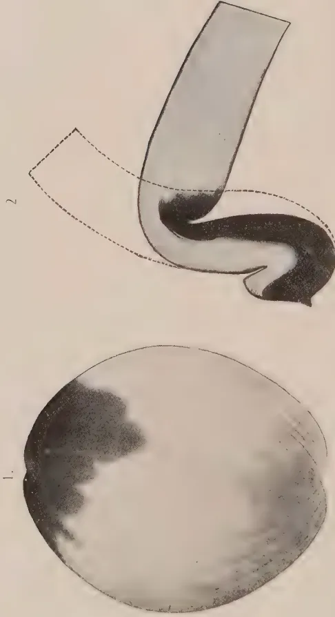
Fig. 1—Coconut, attacked by Phytophthora, one-third natural size: the blackened area shows the diseased part.
Fig. 2—Section of Coconut leaf base, attacked by Phytophthora, one-third natural size: the dotted lines indicate the original position of the leaf section.
Fig 3 -- Base of coconut leaf, attacked by Phytophthora, one-third natural size.
DECEMBER, 1917.]337A few months after the nut fall had begun, another abnormal condition of the coconut palms in the same area was observed, viz., a drooping of the lower leaves of the tree. (The word "leaf" is used here to denote the complete leaf which is attached to the trunk of the palm; it is frequently, but quite incorrectly, called a branch.)
In general this leaf droop affects the leaves which form the lower part of the crown. In well-marked cases these leaves, up to a dozen, bend down, while still green, and form a curtain round the stem. It is remarkable that the first leaf to droop and assume this position is in very many cases not the lowest leaf, but one higher up the crown, perhaps about the sixth. Ultimately these drooping leaves die and turn brown; as a rule, they do not immediately drop off, but remain hanging down parallel to the stem. The number of leaves affected, of course, varies; sometimes there is only one, sometimes two or three. But in advanced cases all the leaves in the lower half of the crown droop, and the crown then takes on an hour glass shape, being sharply divided into two parts; the upper part consisting of the younger leaves in their normal position, not bent outwards at an angle greater than , and the lower part formed by the drooping leaves at an angle of about .
If one of the affected leaves is cut off while still green, it will be found that the only part diseased or decayed is the swollen base of the leaf stalk. The decay usually involves the most convex part of the lower surface, i.e. where the leaf stalk is thickest, and extends from this through the leaf stalk towards the upper surface. It also spreads towards the main stem of the tree and appears on the leaf base, i.e. the surface which was attached to the stem, as a convex black or dark brown patch extending from its lower edge. But, in the early stages at least, it rarely extends up the leaf stalk for more than 8 inches from the base. The decayed tissue is soft, and dark brown or blackish. In consequence of this decay the lower part of the leaf stalk is unable to bear the weight of the leaf, and it kinks sharply at the decayed region, thus causing the leaf to droop.
The affected leaves die and dry up. What ultimately happens to the tree is as yet uncertain. When all the lower leaves have been attacked, the crown is reduced to a few leaves, more or less erect. If these are attacked the tree will die, but it has not yet been ascertained in what percentages of cases this occurs.
The Phytophthora which causes the fall of nuts has been found on the diseased leaf bases, and there is no doubt that the leaf droop and the nut fall are only two different manifestations of the effect of the same fungus.
The only possible method of combating the nut fall is to spray the bunches with Bordeaux mixture, after the nuts have set, or when they have grown to a length of about 3 inches. Spraying would also prevent the leaf droop. At present experiments are being carried out to see whether the leaf droop can be stopped by placing copper sulphate in the crowns of the affected trees. The copper sulphate is broken into small pieces about the size of a pea, and these are scattered in among the leaf bases above and in the region attacked, usually in all below the point of attachment of those leaves which have not bent over to an angle greater than .
Pending the results of this treatment, the following measures should be adopted. All fallen nuts should be collected and burnt. Dead hanging leaves should be removed and burnt, together with all fallen leaves in affected areas. Dead trees must be cut down and burnt.
T. PETCH,
Botanist and Mycologist.
November, 10th, 1917.
338[DECEMBER, 1917.Minutes of a meeting of the Committee of Agricultural Experiments held at the Experiment Station, Peradeniya, on 8th November, 1917.
Present :—The Director of Agriculture (Chairman); the Botanist and Mycologist; the Government Chemist; the acting Government Entomologist; the Superintendent, Botanic Gardens; the acting Superintendent, Low Country Products and School Gardens; Mr. N. K. JARDINE (Special Entomologist for Tea Tortrix); the Chairman, Ceylon Planters' Association; MESSRS. C. E. G. PANDITTESEKERA, A. W. BEVEN, J. S. PATTERSON, LT.-COL. W. G. B. DICKSON, MESSRS. A. S. LONG-PRICE, K. D. GARRICK, W. SINCLAIR, G. H. MASEFIELD, J. B. COLES, G. H. GOLLEDGE, and H. A. DEUTROM (Acting Secretary); and as visitors MESSRS. F. J. ENGLAND, H. WILKINSON, H. STOREY and MARTIN M. SMITH.
The minutes of the previous meeting having been confirmed, the Chairman stated that letters and telegrams expressing inability to attend the meeting had been received from MESSRS. A. E. RAJAPAKSE, N. J. MARTIN, R. G. COOMBE, T. Y. WRIGHT, A. J. AUSTIN DICKSON, the HON'BLE MR. R. HUYSHE ELIOT and MR. W. E. WAIT.
2. Progress Reports.—The Chairman stated that the Progress Reports and other papers had been circulated late, and that therefore any members who did not receive copies could have spare ones if they desired. He reviewed the work of the Experiment Stations as shown in these reports and stated that he had thought it advisable to present to this meeting certain extracts from the quarterly Report of the Mycologist.
The Botanist and Mycologist then handed round specimens of the fructification of the fungus which causes Brown Root Disease, and stated that though the disease had been known for about forty years, this was the first time that the fully developed fructification had been found.
He also called attention to the practice of scraping rubber trees periodically and urged that it was worthy of further consideration whether this scraping was not overdone. The bark was the natural protection of the cortex, and its removal rendered the tree more liable to infection. There was evidence that in some cases, attacks of bark diseases had been helped by scraping. MESSRS. GOLLEDGE and GARRICK referred to scraping trees upon estates and all members were agreed as to the desirability of limiting scraping as far as possible—particularly in dry districts.
3. Diseases of coconuts—Phytophthora in Kurunegala District.—The Chairman stated that in March last, Mr. J. S. PATTERSON had observed an abnormal fall of unripe coconuts and branches was taking place upon an estate in the Kurunegala District. This was followed by a further fall of nuts and drooping of leaves in July. It was at first thought that this occurrence
DECEMBER, 1917.]339might be due to the excessive rains but after the second fall of nuts, specimens were forwarded to the Botanist and Mycologist, who visited the estate and stated that a disease was present—the contributing fungus being found to be Phytophthora.
MR. PATTERSON described the progress of the disease in the Kurunegala District, and the Mycologist exhibited specimens of diseased leaves and drawings showing the manner in which the fungus attacked the leaves and nuts. The fruits are affected at the stalk and the leaves near their bases. The fruits fall as the result of the rot at their basal ends and the leaves droop down and eventually wither, leaving only a small crown of green leaves on the palm. If the disease attack is serious, it is possible that some death of palms may take place. MR. LONG-PRICE asked particulars as to the system of cultivation, manuring and draining on the estate on which the disease was first observed. He said that heavy falls of nuts were observed when conditions of soil and climate were not satisfactory and he thought it advisable that coconut planters should realise that every fall of nuts was not due to disease.
MR. PATTERSON replied and said that he at first thought the fall of nuts was due to weather conditions, but there was also the fall of leaves that could not be accounted for. He therefore consulted the Mycologist.
The Mycologist said that he had examined diseased nuts which were diseased on the palm and had not fallen. He did not think the disease was new. It had probably been existing in the Colony for some time but that attention had been drawn to it as the result of the recent noticeable outbreak near Kurunegala. Further discussions took place in which MESSRS. PATTERSON, LONG-PRICE, MASEFIELD and BAMBER took part.
The Chairman said that he had himself visited the estate with the Mycologist and had already drawn the attention of Government to the matter. The Government Agent of the province had been requested to circularise the Headmen with a view to ascertaining how far the disease had spread. A circular was also being prepared on the disease.
MR. PATTERSON then proposed that the new disease in coconuts be proclaimed under the Pest Ordinance. This was seconded by MR. BEVEN, and carried unanimously.
The Chairman asked the Committee's approval for the insertion of the following in the Pest Regulations dealing with the disease:—
Schedule I.
The species of Phytophthora which causes nut and leaf fall of coconuts.
Schedule II.
Collection and destruction by burning of all diseased fruits and fallen leaves (branches) in affected fields; destruction by fire of fallen or dead coconut trees.
These were agreed to unanimously. MR. SINCLAIR asked whether the small cultivators would have to pay the cost of these compulsory remedial measures. He said they were very hard hit at the present time with the low prices of coconut products. The Chairman stated that the Ordinance allowed for compensation when it was shown that such compensation was necessary.
340[DECEMBER, 1917.4. Proposals regarding Plant Disease and Pest Inspections.—The Chairman submitted proposals in response to the motion brought up at the last meeting by MR. G. H. GOLLEDGE, and called for comment.
MR. G. H. GOLLEDGE stated that the proposals were very commendable to-start with, and proposed the following resolution which was seconded by MR. GRAEME SINCLAIR, and carried unanimously :—
"That this Committee do approve of the outline proposals submitted to it for the provision of an inspectorate force for dealing with Plant Pests and Diseases, and that it asks for the same to be submitted to Government for its favourable consideration.
MR. SINCLAIR asked that these proposals might be submitted to the Planters' Association for consideration as there might be some details that required investigation. To this, the Chairman agreed.
5. Shot-hole Borer—Further results of experiments on Poonagala Group.—With regard to the pruning experiments on Poonagala Group, the Chairman remarked that he had visited the field upon which the experiment had been carried out, and that he was of opinion that a reduction of the borer had been effected by the scheme ; at the same time he concurred with MR. COOMBE that the scheme required a certain amount of labour and that it would be difficult to bring into general practice unless all estates agreed to adopt it simultaneously. This was the difficulty of making such a practice universal.
MR. SPEYER gave a short description of these experiments and of others he was carrying out with paints applied to tea immediately after pruning, and, for these mixtures he had determined that an oil was an essential factor, but that cost and the effect upon the bush made it essential to include other ingredients to get the oil into emulsion, and to reduce the amount of oil required per gallon of mixture.
MR. GARRICK said that he had tried painting with a mixture of tar and liquid fuel. MR. SPEYER's experiments show that both these substances have serious effect on the bushes, and cannot be used. He now realized why he had lost some bushes in those fields which he had treated with tar and liquid fuel.
MR. SPEYER then referred to experiments upon the burying of prunings in cages specially made for the purpose. From prunings buried at a depth of 1 ft.-1 ft. 6 in. in 5, 3, and 1 female beetles had penetrated the soil from the prunings respectively 8, 25, and 28 days after burial.
One beetle emerged from prunings buried 9-12 inches 8 days after burial, and none from prunings buried 4-6 inches below ground level. The emergence of beetles coincided with a heavy rainfall, the prunings being buried on flat ground. It was necessary to continue experiments on sloping ground.
6. Rubber—Attack by borer after treatment of trees with tar and liquid fuel.—These reports of boring beetles entering the tapped surface of rubber trees which had received applications of liquid tar and fuel had been received recently. The beetles belong to Scolytidae, the genera Klyeborus, Platytus and Crossolarsus, all known to attack dying rubber trees. Evidence was forthcoming that the beetles enter 2-4 days after the application has been made, and though they are, in all cases recorded, drowned by the flow of latex to the surface further evidence is sought in regard to the possibility of their being attracted as the result of some decay set up in the tissues treated.
DECEMBER, 1917.]341The presence of the insect is readily discerned by flow of scrap from the treated surface, this occurring well after the time when the ordinary scrap has been removed.
MR. MASEFIELD stated that tar and liquid fuel had now been used for some time on many estates in Ceylon, and referred to experiments with these substances in Malaya.
The Botanist and Mycologist stated that experiments in Malaya had shown that a mixture of 80% liquid fuel and 20% coal tar penetrated into the renewing bark further than a 20% liquid fuel and 80% coal tar, but in neither case did it penetrate to the wood where the tapping was of normal quality. He pointed out that if death was caused by the application of any disinfectants required for the control of bark diseases the wound might be expected to run parallel to the tapping cut. Stockholm tar penetrated further than coal tar. If liquid fuel and coal tar were used he advised that the percentage of liquid fuel should not be above 50. The effects of tar from suction-gas plants had not been investigated. This was probably desirable. The Chairman stated that reports on any supposed harmful effects of liquid fuel and tar would be welcomed by the Department, as this matter appeared to be one that required careful observations to be made.
7. Tea Tortrix—The influence of Birds.—A paper was read by the Entomologist for Tea Tortrix on the question of the true value of insectivorous birds with regard to tea tortrix, pointing out the general opinion that birds kill out Tortrix has not been supported by careful observations and analysis of the question. The encouragement of birds in Tortrix affected areas may be detrimental to Tortrix eradication as large numbers of parasites are probably destroyed by birds.
8. Percentage of rubber in latex from daily and alternate day tapping.—MR. BAMBER submitted a statement on the effect of daily versus alternate day tappings on yield, percentage of rubber in latex and consumption of bark, the results of the tapping experiments at Gangarooa from January, 1914, to December, 1916.
The average yield per tree per annum for the three years from each system of tapping was the same, 3'42 lb., but in the daily system 24 per cent. more bark was consumed, apart from the extra labour involved.
The average percentage of rubber in the latex was 29'1 for daily tapping and 32 per cent. in alternate day tapping or nearly 3 per cent. in favour of alternate day tapping. MR. GOLLEDGE asked if figures were not available regarding the change-over system and it was stated that the results of experiments conducted at Peradeniya Experiment Station, so far have shown no larger yields for the change-over system as against the tapping out system—tapping being done every alternate day.
The meeting then terminated with a vote of thanks to the Chair, proposed by MR. G. H. GOLLEDGE.
9. After the meeting members inspected one of the 9 latrines for coolies recently constructed. They were unanimously of opinion that the type of latrines was unsatisfactory and asked that the attention of the Public Works Department and of the Medical Department should be called to this question.
H. A. DEUTROM,
Acting Secretary, Committee of Agricultural Experiments.
(From 1st September to 31st October, 1917.)
The yield for the month of September was 1,719 lb. green leaf from 5 acres, or 352 lb. less than that of the previous month : that for October was 2,299 lb. including 724 lb. plucked from the newly tipped acres. The July and August made tea fetched in Colombo 42 cents for Broken Orange Pekoe, an average of 33 cents for all grades.
2. Plots 141-145 and 155 were tipped early in October and are now in full flush.
3. The Albizzias in plot 150 are being cut down to a height of 7 feet as they are growing too high.
4. The plot of coconuts below the tea and adjoining the village has been cleared. The work of extending the tea plots will be taken in hand during the next planting season.
5. All stumps in the newly cleared two acres of land have been uprooted and removed. Drains have been dug 33 feet apart, and the land has been lined and holed 4 ft. 4 ft. ready for planting with the first rains. MR. G. H. MASEFIELD has kindly presented 5500 stumps from Huldubari Dooars seed raised at Houpe Estate, Ratnapura, for planting in this area.
6. All the new plantations have been supplied with stumps from Peradeniya seed. Most of the stumps are coming on well.
7. The work of putting up short contour walls on the Hill-side rubber plantation is nearing completion. Several planters who visited the Station have been very favourably impressed with this work.
8. The young rubber plot has been planted out with Cajanus in-licus (dhall) 5 ft. 5 ft.
9. The Hill-top plantation has been resown in rows with Tephrosia candida, but further supplies will be necessary as the seed has not germinated well.
10. A young rubber tree on the Hill-side plantation found to be affected with Brown Root Disease was uprooted and a jungle stump found near this was dug out, the hole being treated with 60 lb. of lime in accordance with the Mycologist's instructions.
11. All old stumps on the flat portion in the Hill-top plantation have been removed and the banks along drains have been "backed."
12. Two rounds of picking have taken place, and a third is in progress. The crop this year is good, and there is only a small percentage of fungus pods.
13. Light pruning and removal of suckers is being carried out.
DECEMBER, 1917.]34314. The old dadaps in the cacao plots are being topped, leaving the lower shade in accordance with the opinion expressed at a previous meeting of the Committee.
15. There has been a slight improvement in the cacao market and arrangements are being made to sell the large quantity that has had to be stored since January last.
16. Several varieties of coconuts were planted out along the river side including 50 plants of the large Java nuts.
17. Many of the Likir nuts from Lower Perak which sprouted well have died back. The cause of this is under investigation.
18. There has been no sale held since the last meeting, nuts being still sold at the rate of Rs. 18/50 per 1,000.
19. Vacancies in the 10 acre block have been supplied.
20. The coffee plants have been topped and pruned.
21. The dadap and Leucaen shade over the young coffee has been heavily pruned and mulched round the plants.
22. The Robusta and Hybrid trees are bearing heavy crops. Booked orders for seed are being supplied as it matures.
23. A limited quantity of Robusta plants is available for sale.
24. The different strains of coffee received from numbered trees on the Experiment Station of the Department of Agriculture, Java, are doing remarkably well, over 90 per cent. having germinated.
25. The fourteen different varieties of paddy sown in a nursery on the 29th of September have been transplanted singly. The distance between the plants is 6 in. 6 in. This distance gives the seedlings space to tiller, and makes weeding easy.
The field is looking well and is free from weeds. The plants are vigorous.
26. The Swarnawari paddy commenced to flower on the 25th October.
27. All drains and irrigation channels have been repaired and thoroughly cleaned out.
28. The low-lying land near the Meteorological Station is being converted into a paddy field. It is proposed to build up a small reservoir to assist in the irrigation of this field.
29. The flowers that were fertilized in February and March last are now being harvested. The crop is satisfactory.
30. Sudan Dhurra. The unusually wet weather interfered with the harvesting of this crop, and in consequence much of the grain germinated before harvesting. A small quantity, however, has been collected for resowing in November.
344[DECEMBER, 1917.31. Maize. Three varieties of maize have been harvested yielding as follows :—
| Variety. | Acreage sown. | Yield. |
|---|---|---|
| Red | 6 bushel seed | |
| Variegated | 4 do | |
| Native | 3 do |
32. Seeds have been supplied to the Ceylon Agricultural Society and to the School of Tropical Agriculture. The balance is available for distribution or sale.
33. The groundnut plots are still carrying their crops.
34. Two acre plots that have just had the Dhurra and Maize crops taken off have been prepared and manured for sowing different curry stuffs. Seeds have been received from India and through the Ceylon Agricultural Society.
35. The Japanese beans have proved a failure. This is probably due to planting in September and not during the cold season of the North-East monsoon.
36. The ginger and turmeric plots have been extended.
37. The self-sown plot of Teosinte (Reana) was cut and a good quantity of seed has been obtained. A larger area of this grass will be tried at Peradeniya and in the Dry Zone Station. This grass should prove a valuable fodder crop.
38. A fair quantity of Indigofera arrecta (Natal-Java) seed is available for sale. No quotations from India have as yet been received.
39. Seeds of various new varieties of chillies, brinjals, etc., have been sown in the Fruit Plots.
40. Cuttings of the different varieties of sweet potatoes introduced from Mauritius have been supplied to several applicants.
41. MR. K. BANDARA-BEDDEWELA, carried out two experiments on the Station (1) for extermination of termites, (2) for the eradication of Cora grass. It is yet too premature to judge the success or otherwise of these experiments.
42. The erection of latrines for coolies has been completed. Members of the Committee will be asked to express their opinion upon them.
43. The labour out-turn was not sufficient to cope with the extra work. Work consequently got somewhat behind-hand, and weeds were becoming very troublesome. All weeding has now been completed.
44. 41 visitors have been shown round the Station since the last report.
| 45. | September | ... | 15.24 inches | ... | Rainy days | 19 |
| October | ... | 9.63 " | ... | do | 11 |
H. A. DEUTROM,
Acting Manager, Experiment Station, Peradeniya.
DECEMBER, 1917.]345(From 1st September to 31 October, 1917.)
1. The Director of Agriculture and other members of the Land Development Committee of the Agricultural Society paid a visit to the station on 13th and 14th October, 1917. The Acting Manager has made two visits since the last report.
2. Paddy Fields. The land comprising of 3 acres, 3 roods, 38 perches in extent has been divided into 18 blocks of 1/5th acre each. The plots have been further levelled by the box earth leveller, irrigated and ploughed. Ridges have been made and 39 masonry sluices built for intake and for drainage.
3. Nurseries of the DR. LOCK's Hathiel, Molagusamba, Mulanay, Manila, Philippine varieties have been sown for transplanting about the middle of November. All the varieties show a remarkably vigorous growth.
4. The Jungle up to the railway line is being felled. The work is being pushed forward and it is hoped to have the block of land cleared by the end of January or February at the latest.
5. The area reserved for Mauritius Hemp has been clean weeded and all existing stumps cut down and burnt. Steps have been taken to procure plants.
6. The land between the paddy fields and buildings has been planted out with coconuts 25 ft. 25 ft. on the quincunx. The seed nuts were obtained from MR. F. BEVEN of Franklands, Veyangoda, and were specially selected.
7. Seed of the following food and curry stuffs have so far been planted out :—Kurakkan, Setaria Italica, Dhurra, Maize, Lima beans, Cow-peas, Dhall, Grams, Onions, Coriander, Cummin and Aniseed.
8. Plots of the different varieties of sweet potatoes from Mauritius, Sugar canes, Plantains, Kew and Mauritius pine apples have also been planted out.
9. Vacancies in the coffee plots have been supplied.
10. The onions planted in July have been lifted. The result was as follows :—
| Red onions. | Acreage sown | 1/5th of an acre. |
| Date of sowing | 18th July, 1917. | |
| Quantity sown | 63 lb. of onions. | |
| Distance apart | In drills 12 in. apart. | |
| When harvested | 16th October, 1917. | |
| Yield | 284 lb. of bulbs. |
Remarks. The beds were irrigated once in four days. A dressing of cattle manure was given before planting. The bulbs sown were those obtained from the last crop. Growth healthy and vigorous.
11. The area for planting maize and coriander is being ploughed, disc-harrowed, levelled and drained.
346[DECEMBER, 1917.1. Labour. A gang of coolies under a kangany has been transferred to Anuradhapura to carry on more urgent work. Consequently the work done during the period under review has been confined to the following operations.
2. Coconuts. The fourth crop for the year is being picked. An offer of Rs. 17.50 per 1,000 for good nuts delivered at Mahailuppalama has been received and accepted.
3. Ploughing and discharrowing the old coconut plots have been discontinued : also weeding round the young palms.
4. 9 acres which were levelled for paddy cultivation but which had been fallow since 1914, have been ploughed and prepared for growing chillies.
A nursery has been sown with seed obtained from the Anuradhapura crop. The seedlings will be planted with the first rains.
5. The boundary fence has been patched in places.
6. The general upkeep of the station has been maintained.
H. A. DEUTROM,
Acting Manager, Experiment Stations,
Anuradhapura and Mahailuppalama.
PROGRESS REPORT No. LXXIII.
The last meeting held on August 4th was the Annual Meeting presided over by HIS EXCELLENCY the President. There was a large gathering present who took a keen interest in the proceedings.
The following members have joined since the last meeting :—W. HERMON, P. HIRST, OSWIN S. WICKWAR, R. and S. PAPOWY, MOSCOW; A. W. UPCHER, Director, Chilean Nitrate Propaganda, Calcutta; Superintendent, Cullen Estate, Badulla; Manager, Corner Coconut Co., Ltd., F.M.S.; R. B. KARUNARATNE, M. A. MUSAI, Tavoy; BERTIE & Co., Switzerland; W. L. DEVENPORT, Uganda; R. C. BOUSTEAD, LESLIE MACK, J. D. SNOWDEN, Uganda; P. HALL, WILLIAM S. PRICE, Philippine Islands; British Sulphate of Ammonia Association, Egypt; ISHAK TAR MOHOMED, L. Burma; MAX JESSEN, Petrograd; ONO SABURO, Japan; Netherlands Langkat Rubber Company, Sumatra; J. G. GRAY.
The Secretary who returned from leave in Bangalore on the 10th May was obliged again to go back on 1st October on four months' leave. During his absence MR. M. KELWAY BAMBER will act for him.
Before going on leave the Secretary visited Harasbedda in connection with the opening of the new Demonstration Garden, Welimada, Hettipola, Kegalle, etc., etc.
DECEMBER, 1917.]347The Organising Vice-President and the Acting Secretary visited Kurunegala, Wariyapola, Hettipola, Ibbagamuwa, Jaffna, Uduvil, Manipay, Point Pedro, Kodikamam, Mullaitivu, Tanniuttu, Mankulam, Vavuniya, Anuradhapura, Nachchaduwa, Puliyanakulam, Mannar and Colombo.
The Acting Secretary also visited Weragodā, Galle and Matara district. The Agricultural Instructors in addition to their usual itineraries have had their duties extended in assisting in the distribution of seeds through the Kachcheries, and instructing the cultivators regarding the new products introduced.
MR. MOLEGODE is at Headquarters with special visits as occasions arise : MR. KARUNANAYAKE in charge of various experiments at Hambantota, Weligama and Ambalantota ; MR. MADANAYAKE at Galle with supervision of Weragodā Garden and rubber tapping in native plantations ; MR. JAYATILLEKE at Kalutara with charge of Bandaragama Garden ; MR. L. A. D. SILVA at Ratnapura in charge of Balangoda Garden ; MR. NUGAWELA of Hettipola Garden ; MR. RAMANATHAN in the North ; MR. P. B. KAPUWATTE of Harasbedde Garden ; MR. C. W. BIBILE of Medagama Garden in Uva ; MR. C. P. CRISPEYN (seconded from the Agricultural Department) of Kegalle in succession to MR. JAYASINGHE resigned, and Mr. K. Chinnaswamipillai in the Eastern Province.
The anticipated shortage of food supply is not confined to Ceylon but is general throughout the world, and to increase and keep the supply up to demand should be the endeavour of everyone.
The campaign for increasing food crops in Ceylon was started by the Department of Agriculture and the Society at the outbreak of the War and has been carried on continuously. This year's seed distribution will, however, be a record one.
The Department and the Society have sent out Circulars during the past few months appealing to every class to maintain the efforts for increasing the food crops. These Circulars have been reproduced in the TROPICAL AGRICULTURIST for October.
The response from all sources has been gratifying and spontaneous. Every class has come forward to assist in the Movement as may be seen from the distribution indicated below and the thanks of the Society are due to all concerned. I must not omit to mention the generous gift by two Colombo merchants which has enabled the Society to give among the backward cultivators in the Eastern Province 250 packets of the 50 cents value at a reduced price of 10 cents per packet.
The distribution to end of October includes the following* :—
| Lb. | Pkts. | Cuttings. | |
|---|---|---|---|
| Potatos ... .. | 900 | ||
| Sweet potato cuttings ... .. | 8,000 | ||
| Vegetable seeds ... .. | 13½ | 15,284 | |
| Curry Stuffs ... .. | 2,978 | 4,779 | |
| Special packets 443 representing singly | 3,544 | ||
| Yams (Dioscoreas and Tannias) ... .. | 127 | ||
| 4,018½ | 23,607 | 8,000 |
Amongst the recipients are 352 Schools and 29 Co-operative Credit Societies. Seeds have also been sent in bulk to all Government Agents for distribution amongst the Village Communities. The distribution through School Gardens of further liberal supplies of seed for the encouragement of Home Gardens is now in hand and orders have been placed for further supplies of vegetable seeds for distribution in April and May next.
*The following quantities were distributed to 30th November, 1917 :— Paddy 25 bushels, Potatoes 975 lb., Manioc 1,000 cuttings, Sweet Potato 9,000 cuttings, Food-stuffs 4,977 packets, Vegetable seeds (English and local) 36,481 packets, Curry-stuffs 4,800 packets, and Curry-stuff seeds in bulk through Government Agents 4,178 lb.
348[DECEMBER, 1917.Samples of edible beans and Peas have been received from the Yokohama Nursery Co., Ltd. These were sown at the Experiment Station, Peradeniya but have not succeeded as they were cold-weather crops.
Recent Introductions. In connection with the campaign for the extension of growing food and currys stuffs, the following seeds have been introduced :—Coriander, Cumin, Aniseed, Fenugreek, Mustard, Dhall, Lentil, Gram, White gram, Millet.
PERENNIAL RICE (Oryza longistaminata).—Seed of this paddy was imported from the Kamarunga Nursery, Queensland, last year, from which some plants have been raised at the Government Stock Garden at Peradeniya. The following is a note by MR. H. L. VAN BUUREN of the School of Tropical Agriculture :—“The perennial rice in flower now at the Government Stock Garden, Peradeniya, was discovered by PAUL AMMANN in the RICHARD-TOLL region in North Senegal. It differs from all other rices in that it has rhizomes and multiplies very much like our mana grass. It is stated that the rice is considered so superior that the natives exchange one calabash of it for 3 of imported rice. The rice was found to grow on light soils rich in potash and nitrogen but poor in phosphoric acid and lime. The soils also contain about 0·1 % of sodium chloride so that it is thought probable that this rice would be suitable for saline soils. The results here appear to confirm the experiments in Queensland where the rice is recommended as a good forage crop but as being very poor in the yield of grain. The green stalks on analysis are recorded as containing about 3 % proteins, 50 % carbohydrates, 25 % crude fibre and 0·75 % fat.”
DR. C. A. HEWAVITARNE of “Srinagar,” Colpetty, purposes starting a model paddy field in Morawak Korale on a 15-acre block at Mawarala, Kamburupitiya, under the advice and supervision of an Agricultural Instructor.
Foreign Paddy.—MR. R. F. DIAS BANDARANAYAKE of Dedduwa in Bentota tried Mulani paddy from the Philippine Islands supplied by the Society on 1/16 acre of muddy field. The plot yielded 48 measures (=24 bushels per acre). Just after sowing the field was flooded and the water had to be bailed out as Mulani is not a water-resistant. The ears were very beautiful when fully formed and but for the unfortunate accident results would have been much more satisfactory.
A similar plot was tried with Kirikara (an Indian variety) with a view to testing its water-resistant power. The yield was 40 measures (=20 bushels to the acre). The field was submerged just after sowing and was so for a week, after which drought set in.
Paddy Manuring.—The Agricultural Instructor, Ratnapura, arranged for an experiment in manuring paddy at Galagama, with artificial fertilizers supplied by the Ceylon Manure Works on a field belonging to the Gamarachchi and conducted by the Head Teacher of the local school. Half an acre was ploughed and preparation completed on 24th March, 1917, and the fertilizer was applied on 25th March. Seed was broadcasted and the crop was 8 bushels (16 to the acre) as compared with an ordinary yield of 6 to 8 bushels per acre, and 531 lb. of straw against 375.
Another experiment with fertilizer supplied by Colombo Commercial Co. is under observation.
Gnavare Paddy.—This variety was introduced from India as a short-aged paddy and was tried at Mamaduwa in Mullaitivu district to see whether it was superior to the local varieties. of an acre was sown on January 5th and harvested on March 15th on clayey soil. The crop realised was bushels (= 38 bushels to an acre) as compared with previously secured.
DECEMBER, 1917.]349About bushels were selected for seed and the experiment was continued on acres with a medium loamy soil which resulted in a yield of 75 bushels.
Pine-apple from Queensland.—The Society imported early in the year 30 suckers of the MACGREGOR pine-apple to which a high reference was given in the QUEENSLAND AGRICULTURAL JOURNAL. These were distributed to the Experiment Station, Peradeniya; Weragoda Experimental Garden, Bandaragama Experimental Garden and Government Stock Garden.
The true grape fruit introduced some years ago from the United States of America is to be found at the Kegalle Park and Experimental Garden. Arrangements are being made to get a number of layers in order to spread the variety in other parts of the Colony.
MR. K. B. BEDDEWELA reports that the peach plants put down in June last have all come into full bloom.
This Committee appointed in June last have prepared their report after twelve sittings. As the report is one that comes up for discussion by the Board to-day no further comment is necessary. It is hoped that the report will receive the serious consideration of not only the members of the Board but the public.
Chilli.—MUDALIYAR JAINUDEEN, J.P., U.P.M., of Haliella reports a successful experiment in cultivating chilli on land cleared a season before. Planted in December, he harvested the crop in April and onwards, selling the produce at Rs. 22/- per cwt. dry.
Potatos.—Successful trials were made and the report on these has been published in the T. A.
New Demonstration and Experimental Gardens have been opened at Medagama in Uva and Harasbedda in Nuwara Eliya district in charge respectively of the two new instructors, BIBILE and KAPUWATTE. The Hettipola Garden is now being worked under the direct control of Agricultural Instructor NUGAWELA and the Kegalle Garden is supervised by Agricultural Instructor CRISPEYN.
At Ambalantota, Agricultural Instructor KARUNANAYAKE has experimental plots of tobacco, cotton, sunn hemp, dhurra, manioc, sweet potato, chilli and dhall.
The Weragoda garden is worked under the supervision of Agricultural Instructor MADANAYAKE; Bandaragama garden under Agricultural Instructor JAYATILLEKE and Balangoda garden under Agricultural Instructor SILVA. The Mediwaka garden is trying currystuffs and vegetables, and a large area will be planted in potatos. The Weligama garden is being opened up by Agricultural Instructor KARUNANAYAKE.
Tanniuttu under Agricultural Instructor RAMANATHAN, Sengaladi under Agricultural Instructor CHINNASWAMIPILLAI, and Mahaoya under late Agricultural Instructor BANDARANAYAKE, who is now the Ratemahatmaya of the place have not been able to do much work owing to adverse weather conditions.
MR. MOLEGODE, Senior Agricultural Instructor, has opened up several acres at Dunuwile with the view of demonstrating the cultivation of food crops, vegetables and currystuffs to the villagers there.
The following is a report on the Hettipola Garden for the season 1916-1917:—
1st Plot.— acre. Green Gram (Phaseolus radiatus var. Mungo). Sown : 4-10-16, Broadcasted. Seed rate : 1 measure. Harvested : 14-1-17. Yield : 38 measures (38 fold).
350[DECEMBER, 1917.Remarks : Growth, good. A certain amount of damage was done in the early stage by village fowls and later by pigs. If not, the yield would have been better as the plants grew up and harvested well. No pests.
2nd Plot.— acre Dhurra ; Sown : 21-11-16. In holes a foot apart 3 or 4 seeds per hole. Later thinned out to one. Seed rate : measure ; Harvested : 15-3-17. Yield : 42 measures.
Remarks : Yield not satisfactory. Damage caused by birds.
3rd Plot.— acre Cassava ; Planted : 15-10-16. In rows 4 feet apart and in rows ; Harvested : 1-7-17 ; Yield : 2,180 lb.
Remarks ; The growth was very good and the yield satisfactory. The whole crop could not be sold. At times a lb. sells at 1 cent and other times 2 cts. and 3 cts.
4th Plot.— acre Cotton ; Planted : 15-10-16 and resown where seeds failed to germinate on 8-11-16. In rows 2 feet apart and 16 inches in the rows ; Harvested : From early March bolls began to ripen and till end of August the crop continued ; Yield : 218 lb. of seed cotton up to end of August.
MR. T. W. COLLETT is opening up 50 acres with Coffea robusta in the Ratnapura district. Writing on 14th August, he says :—" I had seen the coffee plants at your Balangoda Experimental Garden and was so struck with the growth and output of the plants that I have decided to open out about 50 acres at Bilihuloya—3,000-3,500 feet elevation. . . . ."
MR. A. B. THOMSON of Marakona, Ukuwela, has under his control an interesting demonstration plot on his estate of which particulars will be available subsequently.
MR. A. KENNEDY of Andigama Estate has undertaken extensive trials with currystuffs and food crops by chena cultivators who are mostly labourers on his estate, who are given 20 acres in young coconuts for the purpose. MR. KENNEDY has offered them every possible encouragement—an example worthy of being copied by others similarly situated. Varieties of currystuffs, food crops and vegetables are being grown by nearly 100 men who have been given seeds by MR. KENNEDY.
Among other planters who are largely encouraging cultivation of these products by the labour force may be mentioned.—MR. W. A. ELWELL of Deniyaya, who obtained through the Society seeds to the value of Rs. 110, containing nearly 1,000 packets vegetable seeds and other products ; MR. D. B. WILLIAMS of Lindula, who purchased Rs. 65 worth of seeds ; MR. J. J. ROBINSON of Passara who purchased Rs. 56.70 worth of seeds.
These experiments were continued during 1916 and the following is a report furnished by MR. KARUNANAYAKE, Agricultural Instructor, who conducted the experiments :—
Three varieties of tobacco (1) White Burley, (2) Pusa (3) and Sumatra, were tried at Ambalantota last season—an acre being put under the first named and about half an acre under each of the latter.
Nurseries.—Two sets of nurseries were sown ; one in August, and the other during the last week in September as a precaution as there were signs of the monsoon being delayed. The seedlings came up well, but an insect pest appeared by the end of October, and was with difficulty eradicated by picking out poochies by hand and by thinning out seedlings.
Transplanting.—The monsoon proper did not appear till the third week in November ; but a few showers came down in October and about half an acre was transplanted, but the rains abruptly ceased and these had to be kept
DECEMBER, 1917.]351watered continuously. Transplanting was again started by the 20th of November and was over by the first week in December.
Pests.—No pests appeared after transplanting.
Manure.—The only manure applied was 8 cartloads of cattle dung.
Growth.—The growth was satisfactory, especially the White Burley. Topping of those planted in October was started in January, and by the end of February most of these were ripe, and harvesting commenced; the method adopted being that of cutting down the whole plant at once instead of gathering leaf by leaf. The ripening of the White Burley was quite uniform and this method answered very well, but not so well with the other two varieties; anyway I had to adhere to this to save labour.
Curing.—Two methods of curing were adopted (1) Air-curing as is done in Dumbara etc., and (2) a local method almost similar to air curing—the only difference being that the leaves are removed from the strings when half dry, and arranged closely in gunnies, leaf by leaf, stalk upwards; these are then exposed to dry during day time, and kept, rolled up at night. This is continued till the leaves are quite dry, and then stacked to ferment.
The curing was over in April, and the quantity cured was 259 lb. which was purchased by a local pipe tobacco manufacturer for Rs. 111.77—an average of about 43 cents per lb.
This year the experiments are being continued on similar lines.
It is gratifying to be able to report the extended cultivation of tobacco in different districts. The area in Teldeniya district is much larger while other divisions are being opened up. MR. A. M. SHORE, Superintendent, Mahaberiatenne, has several acres under the cigarette type; MR. A. W. UPCHER is also having several acres opened up; MR. M. G. STONE has several acres planted with different varieties, including the chewing, cigar and cigarette types. A few sample cigars manufactured and sent in by the last named were received and found equal to, if not better than, many to be had in the local market.
Turmeric Dye.—Enquiry was made from the Director of the Imperial Institute, London, as to whether there was any likelihood of a demand arising for turmeric (Curcuma longa) dye, and whether the preparation of the dye could be undertaken by the grower. The reply received is as follows:—"In reply to your letter No. 2,242 of the 30th June with reference to turmeric, I have to say that there is a regular demand for this product, partly for use as a dye, but chiefly as a spice for curry, etc. There seems no reason to anticipate any great increase in the demand. The colouring matter is not extracted by the grower but the turmeric rhizomes themselves constitute the marketable product. The total exports of turmeric from India during recent years were as follows:—
| 1911 | 1912 | 1913 | 1914 | 1915 | 1916 |
|---|---|---|---|---|---|
| cwt. | cwt. | cwt. | cwt. | cwt. | cwt. |
| 92,011 | 95,061 | 108,731 | 75,059 | 57,055 | 117,327 |
Turmeric is now quoted in the London market at 37s. 6d. to 50s. per cwt. according to quality, as compared with the pre-war prices of 11s. 6d. to 16s. per cwt. (July, 1914).
With reference to the particulars published in a previous Progress Report, the Director of the Imperial Institute reports under date 10th September that the sample of oil was duly submitted to the firm from whom the enquiry was received and that they were not in a position to furnish a quotation for the oil until they were able to carry out trials and for that purpose a further sample of one gallon was required.
The sample desired has been forwarded.
352[DECEMBER, 1917.The Agricultural Instructor, Kalutàra, reported in June last that the disease in plantains was spreading in the district causing considerable damage.
On samples being submitted to the Government Entomologist that officer reported as follows:—"The plantain stem forwarded by you for examination to the Botanist and Mycologist under date 20th April, 1917, is infested with grubs of the Plantain root-stock weevil, Odoiporus longicollis. Affected plants should be dug up and burnt, and all root-stocks should be similarly treated after the plant has borne fruit, as otherwise the weevils breed in the root-stocks and then spread to other plants."
The people are adopting the measures recommended, with the assistance of the Agricultural Instructor.
The public demonstration of the working of the rice huller imported from MESSRS. BURN & Co., Calcutta, at the Government Experiment Station, Peradeniya, was a success. There was present on the occasion a large audience who expressed satisfaction at its working. It was imported at the request of MR. P. S. DISSANAYAKE of Weliara, Wellaway, who has now installed it there and put it into regular use.
The machine is quite simple and only requires careful adjustment.
In view of the frequent enquiries regarding the machine, the following particulars are reproduced for general information:—"These Mills are constructed with the bottom disc as the runner. The body is of cast-iron and fitted to a frame of wood, which readily permits of the mill being securely attached to a suitable bench. The runner is a cast-iron disc, covered with a cement composition which will wear for a number of years even with constant use. The top plate is covered with India Rubber and is so arranged that it can easily and quickly be replaced with a new one when worn out. The mill is fitted with suitable adjusting gear to enable it to hull all classes of paddy. The driving gear has a proportion of three to one and can be worked by men quite easily; hulling from 50 to 60 lb. of paddy per hour. The breakage is very low, being not more than 2 to 3 per cent., if care is exercised, and the number of unhulled grains will not be more than 8 to 10 per cent. By passing the hulled paddy through the mill a second time the unhulled grains are reduced to a minimum and the rice considerably whitened.
Two machines are on order at present. One of these will be installed by the Society at the Experiment Station, Gannoruwa, and the other one is for Rev. FATHER STANISLAUS, of Pasalai, who has already large quantities of paddy awaiting its arrival.
An application having been received from the U. S. A. Department of Agriculture, Washington, D.C., the Society arranged for a supply of varieties of Coconuts growing in Ceylon. The Society was enabled to comply with this request through the courtesy of MUDALIYAR A. E. RAJAPAKSE who supplied the nuts. The U. S. A. authorities, acknowledging receipt of the consignment write as follows under date September 18:—"On August 25 we received through the American Consul at Colombo a shipment containing five bags of coconuts which we requested from you under date of March 7. I wish to thank you heartily for your courtesy in supplying this seed, which has been assigned our plant introduction number 45,114. The introduction will be published under that number in our regular inventory of seeds and plants imported."
During last year the Velvidane and Police Officer of Wanduramba and Police Officer of Widawila cultivated cotton in the Magam Pattu. The resulting crop 723 lb. was sold to the Colombo Spinning and Weaving Mills and realised Rs. 116.35.
DECEMBER, 1917.]353Agricultural shows are proposed to be held next year under the auspices of the Ceylon Agricultural Society by the Walapane Co-operative Credit Society, and the Kinigoda and Beligal Korale Co-operative Credit Society (at 2 centres). At the Hiriyal Hatpattu Co-operative Society a prize-holding competition amongst members will be inaugurated for gardens of food products and currystuffs. A prize of Rs. 25/- in Credit Societies shares has been offered as the prize for competition.
As an encouragement to these efforts the Society has offered the first Rs. 75/- and the second Rs. 140/- (70/- for each centre) as prizes. Each Co-operative Credit Society has been given liberal supplies of seeds in this connection free of cost.
The dates fixed for the respective Shows are as follows :—At Nildandahinna on 27th April, 1918, at Mawanella in February; at Pinnawela in March; and for the Hiriyal Hatpattu competition at end of June.
A show is also proposed to be held at Mawatugoda in Paranakuru Korale on March 16th and 17th, 1918, for which the Society has offered Rs. 75'00 towards the prize fund.
It will be interesting to many to know that Sandalwood trees originally introduced by the late Mr. W. E. T. SHARPE (then Assistant Government Agent of Badulla) are spreading naturally in Soranatota Korale of Wiyaluwa division. It is reported, however, that the villagers in felling the jungle for chenas cut down the trees and this fact has been brought to the notice of the Government Agent with the suggestion that steps be taken to encourage the growth of the trees where they appear to thrive, as Sandalwood is a source of considerable revenue in Mysore State. This may be possible by prohibiting the felling of trees when granting chena licences.
Following is a copy of communication received from the Secretary to the Colombo Port Commission and is commended to the careful notice of members :—“I have the honour to request that you will be so good as to let me have at any time samples of any new natural or manufactured product for transmission to the Commercial Intelligence Branch of the Board of Trade, London.”
A supply of Dicoccum wheat has been received from the Coimbatore Agricultural Farm for trial at Harasbedda.
MR. V. SINGHAM has submitted plans and specifications (from Kuala Lumpur) of a machine invented by him for crushing oil out of the fresh kernel of the coconut instead of converting it to copra. The papers can be inspected at the C. A. S. Office.
M. KELWAY BAMBER,
Peradeniya, 16th November, 1917.
Acting Secretary, C.A.S.
(Extract from a Letter from Mudaliyar A. E. Rajapakse of 2-11-17.)
Seeds received on 9th May were sown on Rajapakse Kumarewanni Yaya estate in the Demala Hat Pattu of the Puttalam District at the end of May but owing to the heavy rains that prevailed at the time most of the varieties did not do well.
In November last an acre was planted with an Indian variety of chilli. The crop was a good one but owing to a pod disease about 50% turned bad after drying.
354[DECEMBER, 1917.In May about an acre was sown with a local variety of chilli (Wanni miris) which did well and gave a crop of 360 lb. which were sold at 22 cents per lb.
Of the other Dhall had grown well. The crop has not been gathered yet. This crop can be very successfully grown in this part of the District and will prove very useful to the villagers.
50 acres of Cassava which had done very successfully will be ready to be harvested in February.
AT BADDEGAMA (MR. C. D. GUNAWARDENA.)
Very satisfactory. Undu (Black gram).
Satisfactory. Dhall.
Failed. Green peas, Cummin, Fenugreek, Horse Gram, Coriander.
EXPERIMENTS AT DUNUWILLE (SENIOR AGRICULTURAL INSTRUCTOR.)
Coriander
Extent: 15 ft. × 3 ft. each. Sown: 25th June 1917 in drills a foot apart. Harvested: 14th September, 1917. Yield, measures. Remarks: Grew satisfactorily. The cured seeds were not as good as that sold in the bazaars but was black and shrivelled up. Perhaps due to bad curing and the ripe crop having caught the rains.
Shallots.
Extent: 6 in. × 6 in. apart in beds. Sown: 1st July, 1917. Harvested: 25th September, 1917. Remarks: 50 lb. of seed bulbs obtained from the Kandy market was planted. Bushed out well and yielded 380 lb.
Onion from Seed. Sown on 24th July in drills 6 in. apart. Poor growth at the start but now growing well.
Kollu. (Phaseolus biflorus). Sown: 24th June, 1917. Broadcast on 3 beds 15 × 3 feet each. Harvested: 23rd September. Remarks: Grew most luxuriantly and yielded a heavy crop. 2 lb. per the plot or more than 600 lb. per acre.
Green Gram (P. radiatus).
Sown: 24th June broadcast like Kollu. Harvested: 18th September, 1917. Remarks: Very satisfactory growth and heavy crop ( lb.)
Black Gram (P. max).
Sown: 24th June. Harvested: 18th September. Results. Satisfactory.
Bengal Gram (Cicer arietum).
Sown: 24th June. Harvested: 21st September. Remarks: Sown in drills a foot apart. Grew satisfactorily and produced a heavy crop which was however spoilt by rains.
Dhall.
Sown: 24th June. Remarks: Planted along drains and paths. Growing very satisfactorily and bushing out beautifully. Now in flower.
Ginger and Turmeric. Planted 24th, 25th and 29th July. Growing satisfactorily.
Garlic. Sown 24th June. Still growing.
Chillies. Now flowering and bearing.
AT BALANGODA.
(Extract from Progress Report of A. I. Ratnapura.)
The rapid progress of the cultivation of Cassava could be perceived from the experiments tried at Balangoda. Although the other varieties of Curry stuffs did not germinate, Coriander and Gram showed good results; but as regards gram unfortunately when the gathering time was approaching the rain started and resulted in the seeds germinating inside the pods themselves.
DECEMBER, 1917.]355In response to a motion by MR. G. H. GOLLEDGE at the meeting of the Committee of Agricultural Experiments held in September the following proposals were submitted to the November meeting and unanimously adopted by the Committee :—
In accordance with the undertaking given at the last meeting, proposals in regard to inspection for plant pests and diseases are now submitted for your consideration.
The approximate distribution of estates in Ceylon according to 1915 figures is as follows :—
(a) Coconut estates, about 1,600, (omitting the Central Province) chiefly in the Western (630), and North-Western Provinces (590). The Southern Province contains about 150, the Northern Province 120, and the Eastern Province 80. In addition there are all the small (native) holdings.
(b) The Galle, Kalutara, Kelani Valley and Kegalle districts contain together 500 estates, chiefly rubber and tea.
The number of small (native) holdings is not known.
(c) The up-country and mid-country tea districts from Uda Pussellawa and Ambawela to Hantane and Kadugannawa include 672 estates. The number of small gardens between Kadugannawa and Nawalapitiya is considerable.
(d) On the Badulla side, including Haputale and Moneragalla, there are about 160 estates, chiefly tea and rubber. By including Balangoda, Ratnapura, Rakwana and Morawak Korale, the number is brought up to 280. New estates have recently been opened in these districts.
(e) The districts round Kandy contain some 400 estates, in tea, rubber, cacao, and coconuts. Roughly they may be classified into a Matale Group of 220, a Kurunegala Group of 120, and a Dumbara Group of 60.
There are no accurate data available in respect of the small holdings in any of the above districts.
It might be preferable if arrangements could be made for an inspector to deal with one product only but this is hardly practicable in Ceylon where cultivations of different products are intermingled. It would appear more practicable to assign inspectors, as far as possible, to definite districts, especially in view of the existing divisions of the Colony for Revenue administration and the existing provision for Pest Committees and Plant Pests Boards.
I have already submitted proposals to Government in regard to the provision of divisional agricultural officers throughout the Colony. These proposals are now being printed for submission to the Legislature. It has
356[DECEMBER, 1917.been found possible to divide the Colony into six agricultural divisions and in submitting suggestions now for the distribution of a disease inspectorate force I have kept the broader proposals for an enlarged agricultural department in view. The proposed divisional agricultural officers will be the executive force of the Department allowing the scientific specialists stationed at Peradeniya more time for pure research work. Any inspectorate force for diseases would therefore be required to deal through the divisional executive officers.
The proposed disease inspectorate force might therefore be :—
(1) An inspector to specialize in coconut diseases. He would be stationed in the North-Western division but would also have control over the Northern division and the coastal regions of the South-Western and Southern divisions. This inspector would also be required to inspect cacao and rubber in the Kurunegala district.
He would require sub-inspectors stationed at :—
(2) An inspector to specialize in rubber diseases. He would be stationed in the South-Western division but would also have control of the Southern division except for the coastal regions assigned to the inspector specified above. This inspector would also be required to inspect tea cultivations in the area assigned to him. He would require sub-inspectors stationed at :—
(3) An inspector to specialize in tea diseases. He would be stationed in the Kandy district and would control the Central and Eastern Provinces. He would also be required to deal with cacao, rubber and coconuts within his assigned area. He would require sub-inspectors stationed at :—
The work of inspection would necessitate visits to all estates and small holdings. The inspectors would be given power to enter upon any estate, to remove plants for investigation, to order approved remedial and preventive measures to be carried out and to take legal steps to enforce them when considered necessary by the Director of Agriculture. The work at first would be advisory in the case of the larger estates and educational in the case of smaller cultivations. Inspectors would be required to keep a census of all estates and small holdings with a record of the diseases and pests found thereon. They would be required to report whether any known disease or pest was increasing and whether special measures were necessary. Also to report if the control measures advised were efficacious or not, and to bring any new diseases or pests to the notice of the research staff at Peradeniya.
DECEMBER, 1917.]357.To ensure the adoption of a similar policy by all inspectors, conferences would be arranged to be held every three months with the research officers of the Department when general discussions of policy would take place and arrangements made for concerted action in the case of special outbreaks.
It would also be expected that considerable assistance could be obtained from the Pests Committees of Planters' Associations and from the Plant Pests Boards, if some system of general organization could be arranged for.
The Mycologist with whom I have prepared the proposals now submitted, is in agreement with the above but feels that the rubber industry might possibly require another inspector additional to the one now suggested and that if Divisional Agricultural officers are not sanctioned by Government, arrangements will have to be made for centralized executive control over the work of the Inspectors.
F. A. STOCKDALE,
Director of Agriculture.
June to September, 1917.
Very few reports of leaf fall and pod disease in Hevea were received during the last quarter. The first case of leaf fall this year was recorded in February during the unseasonable rains of that month. The South-west Monsoon rains were, however, at first, light, and practically all the seed had ripened in the low country before the abnormal rains of August and September began. The general report is that this year's seed crop is the best crop there has been for some years. In the Peradeniya district, the fall of the seed was hindered by the rains, and some of the pods did not dehisce until October, but they were apparently too ripe to permit the growth of Phytophthora on them.
An extensive attack of Brown root disease on Hevea was found to be due to the development of the fungus on old cacao stumps. The Hevea was originally planted through cacao and the latter was subsequently cut out, all the stumps being left. The fungus attacked the stumps and spread from them to the rubber. Brown root disease was found on another estate on jak, Ceara, suriya (Thespesia populnea), Cacao, and Hevea, the origin in this case being on the Ceara. It has now been determined that the true fructification of Brown root disease is not a Hymenochaete, but a Fomes, the supposed Hymenochaete being merely abortive attempts to form the Fomes sporophore. Fully developed fructifications have now been found on Tea, Hevea, and undermined jungle stumps. This helps to clear up the difficulty of accounting for the distribution of Brown root disease. The Hymenochaete patches were always sterile and a distribution by means of spores from them was impossible. But it is now evident that the Fomes fructifications or dead timber, etc., will supply an abundance of spores. The Fomes is Fomes lamaoensis or a closely allied species.
An attack of Ustilina on tea over a considerable area was found to be due to the presence of decaying Grevillea stumps.
358[DECEMBER, 1917.Fomes lignosus (semilostus) has been found, in two instances, to spread to Hevea along the roots of felled cacao, having developed on the cacao stump. Three cases of root disease on the under side of lateral roots of Hevea have been sent in, the decayed area in each case being bordered, in section, by a broad rusty-coloured zone. Fomes lignosus was developed from the roots in every case.
The occurrence of Poria hypobrunnea and Ustulina Zonata on Hevea logs and Hevea stumps have been almost universal on the estates visited this year. As both these fungi cause root disease in Hevea, this neglect to remove logs and stumps is likely to have serious consequences in the near future. As regards logs, these are a possible source of danger so long as they are sound enough to be handled; if they crumble to pieces when one stands on them, they have done their worst.
Much time has been devoted to the investigation of new bark affections in Hevea. In many cases these appear to be assisted by the practice of scraping the tree, and it must be strongly urged that this should be avoided as far as possible. While it may be necessary to scrape rough corky barked trees in the wetter districts, the practice appears to offer no advantages in the drier districts and at the higher elevations. Some system of brushing off loose scales, etc., should be tried in place of the present scraping, in which the cooly almost invariably cuts into the green and exposes the stem to infection.
New diseases recorded during the last three months include a root disease of Albizia caused by Fomes lucidus; Downy Mildew (Phytophthora Phaseoli) on Lima beans; Blossom-end rot of Tomatoes; A new Thread Blight of Tea; Wilt of Cummin; and a dieback of plucked shoots of tea caused by Didymostilbe Coffea.
T. PETCH.
J. F. DASTUR.
It is stated that ripe rot (Glæosporium musarum) of the plantain, while affecting chiefly stored fruits, may also appear on young fruits, generally near the distal end, supposedly arising in most cases from early infection at the style. Although spores germinated in water do not survive desiccation, some of those remaining in the ascervuli may germinate after nine months.
Experiments for three years on a restricted scale appear to show that spraying only when the fruit is picked, or even after it is half grown, is useless, but Burgundy mixture used monthly is found to control the disease. However, as this tends to leave bluish specks on freshly sprayed fruits, the last spraying is more satisfactorily done with ammoniacal copper carbonate. This keeps the fruit clean and free from bluish spots, although if used several times it spots the fruits at points where they are in contact. Cutting back must be carefully done and destruction of diseased parts must be thorough in order to avoid the saprophytic preservation of the fungus. The fruit must be carefully handled in order to avoid injury.—EXPERIMENT STATION RECORD, VOL. 37, No. 2.
DECEMBER, 1917.]359The subject of the economic status of birds is one to be approached with the greatest caution as there are so many points from which the subject may be viewed.
There is no intention in this short article to enter into the subject in detail but only to give an indication of the effect certain birds may have upon the question of Tea Tortrix (Homona coffearia).
The opinion is generally held by the planting community that birds kill out or reduce Tortrix and so strong is this opinion held by many that efforts have been made by planting up suitable trees to attract as many birds as possible—in the hope that they will keep the Tortrix in check.
Views have been exchanged with many planters on this subject and the results of careful observations analysed. The evidence shows that although certain birds devour Tortrix, it is probable that the encouragement of large numbers of birds on Tortrix-affected estates is a source of danger to the progress of Tortrix eradication.
The main argument in favour of the protection and encouragement of bird life is that many birds act as a natural check to the undue increase of insect life in general. Birds, however, only become a natural check when no other check is present because they are promiscuous feeders, not restricting themselves to one particular kind of insect. They therefore naturally devour any predacious insect or insect-parasite they come across.
To consider the question at point. Do insectivorous birds cause benefit by reducing the number of Tortrix? Careful observations show that they do not.
The Tortrix moth is mainly nocturnal. It commences to fly about with twilight and continues its flights during the night. It shelters entirely during the day and is never seen to be on the move except when disturbed. Its larvæ are also sheltered during the day time in the curled leaves of the food plant whether it be the flush of tea, grevillea, dadap or acacia.
Insectivorous birds are not nocturnal and they have not been observed extracting the larvæ from their shelters.
It is therefore improbable that birds can influence the number of Tortrix to any extent. They are, however, enemies of diurnal insects. There are several kinds of such diurnal insects that are predators or parasites upon the Tortrix.
Birds as mentioned above are promiscuous feeders and devour insects indiscriminately and it is therefore probable that birds may be capable of effectively reducing the natural enemies of the Tortrix—checks which have been provided by Nature and which, at present, appear to be in comparatively small numbers in respect to the number of Tortrix.
There is evidence that birds effect little in the check of Tortrix and they may be responsible in some instances for its increase. It therefore seems
360[DECEMBER, 1917.most desirable that no special efforts be made to attract birds to Tortrix-affected estates. When Tortrix is bad, birds should not be encouraged as the damage they do to the insect-parasites of the pest is not inconsiderable.
The following are the insectivorous birds associated with Tortrix and the resume of the data collected concerning them :—
Ceylon White Eye (Zosterops Ceylonensis).—Believed by everyone to be valuable against Tortrix. The bird certainly feeds on moths and larvæ. Unfortunately the Tortrix moth flies in the late evening and night, and its larvæ feed at night, being well wrapped up in leaves all day. The White Eye goes to roost at the setting of the sun.
Indian Tailor Bird (Orthotomus sutorius).—According to LEGGE: "They feed on larvæ and insects," p. 517. Local observations show they rarely if ever, devour moths. Larvæ they eat; but to get at the Tortrix larvæ they must unwrap the leaves.
Ashy Wren-Warbler (Prenia brevicorda)—This bird does not devour moths. It preys upon larvæ and flies and hymenopterous insects, but it is unable to extract the Tortrix from rolled leaves.
Gray Backed Titmouse (Parus atriceps).—Devours moths, larvæ and flies, but is not a late enough flyer to catch Tortrix in any quantity.
Magpie Robin (Copsychus salularis).—Feeds upon thick bodied moths and other insects, also young geckos. Lizards are useful, they crawl about the bushes and, disturbing moths in the daily hiding places, devour them. This bird is possibly doing direct harm by the destruction of lizards.
Fantailed Fly Catcher (Rhipidura albifrontala).—As its name infers it catches flies. The fly-like parasites of Tortrix are day flyers and therefore subject to attack by this bird. In the evening it devours moths right up to dark. Does the benefit it executes in the evening by devouring Tortrix moths balance the probable damage it does during the day in preying upon the parasites?
Grey Headed Fly Catcher (Culicicapa Ceylonensis).—It has never been seen to catch anything as large as a Tortrix. A fly devourer, therefore a parasite enemy.
Small Minivet (Pericroctus peregrinus).—JERDON says: "Feeds upon various larvæ (which is its favourite food) and small insects." LEGGE p. 367, para 3. Local observations show it devours larvæ but it has never been seen to prey upon moths.
One of the most important natural checks of the Tortrix is an Ichneumonid "Fly" Phytodietus caſua and is in abundance in those areas where birds do not abound.
Several estate superintendents have felt that birds were directly responsible for Tortrix control, but many fields supposed to be free from Tortrix have been found to be really infected in their centres, and whereas some estates have been found to be free, neighbouring estates—although under the same influence as far as the birds are concerned—have been found to be affected throughout.
I wish to express my thanks to those planters who have kindly given me their observations; in particular to MR. W. ORMISTON, who has been very generous with his assistance.
N. K. JARDINE,
Entomologist for Tortrix Investigation.
July-September 1917.
On the arrival of the Entomologist for the Investigation of Tea Tortrix, all notes and specimens referring to that insect were handed over to that officer.
An assistant was engaged for the investigation of Icerya purchasi, Fluted Scale, and has made tours in Dimbula, Hewaheta, Nuwara Eliya, Ambawela, Udapussellawa and Bandarawela. Coccinellids have been distributed to the Bandarawela District, from which the pest is now rapidly disappearing.
Special attention has been paid to Scolytid Beetles, and much information has been obtained concerning the habits of species of Flatypus, Grossotarsus and Xyleborus, attacking Hevea brasiliensis. Two species of Xyleborus hitherto unrecorded have been collected from Tea prunings at Peradeniya, one of which seems to be identical with X. arquatus which attacks living stems of Camphor. Notes have also been made upon X. confactus which attacks Coffee and Avocado Pear.
Pests on estates have been exceedingly prevalent, various Tea Mites, Leaf-miner (Orcinum theæ), Red Slug (Heterusia cingala) and Coffee Borer (Zenzere coffeeæ) all being much in evidence on Tea, while Locusts (Aularches miliaris) and Green Scale (Lecanum viride), have done very considerable damage.
Observations have been made upon the relation of the larvæ of Lampyrids upon the Large Land Snail (Achatina fulica), and show that Fire-fly larvæ do actually feed upon the snail.
A lecture was given to the Dimbula Planters' Association upon Shot-hole Borer, Tortrix and Fluted Scale.
EDWARD R. SPEYER.
July-September 1917.
A revision of the Departmental Notes on Shot-hole Borer has been completed, and enquiries made as to the record of the appearance of the insect on an estate in the Agrapatnas, recorded in 1903, from which estate it disappeared with the burning of the prunings.
An experiment with cut branches of Terminalia catappa, the Country Almond, was made in the Dadap Plot at the Experiment Station. A few beetles were caught, within three weeks of laying the trap, but at present this does not seem a very practical way of dealing with the insect.
An experiment in burying of prunings was started, with special cages made for the purpose. The prunings were buried respectively 6in., 9in. and 1ft. 6in. below ground level. After heavy rain five beetles were caught in the case with the prunings buried 1ft. 6in. deep; the experiment is still in progress.
Experiments in painting pruned bushes have been continued, and are in progress; results seem to be encouraging.
The Pruning Experiment on Poonagalla Group has reduced the Borer beyond expectation, and though the control scheme deduced from the experiment may at present be unpractical over large areas, it may be of great value when combined with other methods of control.
After inquiries from various Agricultural Departments in India, specimens of true Shot-hole Borer have been sent from Bangalore in Castor-oil. Communications from other authorities seem to point to the fact that Shot-hole Borer has not been definitely recorded from Tea in any part of India or Assam.
The following Estates have been visited :—Poonagalla Group, Bandarawela ; Kirimettia Estate, Kadugannawa ; Geragama Estate, Kadugannawa.
EDWARD R. SPEYER.
362[DECEMBER, 1917.H. A. TEMPANY, D.Sc., (LOND). F.I.C., F.C.S.
Government Chemist and Superintendent of Agriculture for the Leeward Islands.
(now Director of Agriculture, Mauritius)
H. B. HUTCHINSON and K. MACLENNAN, have recently shown that one of the results of the application of caustic lime to soils is the production of a partial sterilization effect analogous to the action produced by heat and antiseptics.
In a recent paper published in the JOURNAL OF AGRICULTURAL SCIENCE,* they have adduced a method of measuring in the Laboratory the amount of lime which requires to be added to any given soil in order to produce the effect in question, and have correlated the results thus obtained with observations made in this respect on the same soils in the field.
The laboratory method of HUTCHINSON AND MACLENNAN as described by them, consists essentially as follows:—
The method originally adopted, and to which we have adhered throughout, is based on the determination of the minimum amount of lime required to render the soil water distinctly alkaline, and is as follows: 100 gram lots of the air-dry soil to be tested are placed in bottles of about 250 c.c. capacity; according to the character of the soil (whether poor or rich, light or heavy), a number of dressings of calcium oxide are then made, rising by increments of 0·1 gram to 1·0 gram per cent., or increments of 0·2 gram to 2·0 per cent., of the weight of the soil. Sufficient water (50 c.c.) is added to moisten the soil; the bottles are then tightly corked and shaken for a few seconds at intervals for a definite period. This period is generally twenty-four hours, but actual comparisons have shown, that the amount of change between four and twenty-four hours is only slight. At the end of this time the contents of the bottles are then transferred to, and washed in, a Buchner funnel with a further 200 c.c. of water; the whole of the filtrate is then titrated with acid, using phenolphthalein as indicator.
Within the range of applications made in the above manner it will generally be found that a point is reached where the reaction of the filtrate is distinctly alkaline, and the results of other investigations have shown that where the alkalinity is such that 5-10 c.c.† of acid are required to
* JOURNAL OF AGRICULTURAL SCIENCE, VOL. VII. PART I, P. 75.
† In view of the fact that in DR. TEMPANY'S method, described later, 100 cc of solution equivalent to 16·33 grams of soil is titrated against acid, it follows that the range in that method corresponding to the Figures given by HUTCHINSON and MACLENNAN is 4·8 c.c.
DECEMBER, 1917.]363neutralize the whole of the filtrate, this may be taken as the limit to which calcium oxide must be applied to the soil in order to produce the best results.'
During the past twelve months a number of observations have been conducted on similar lines in the Government Laboratory for the Leeward Islands. After a certain amount of experience of the method as described by HUTCHINSON AND MACLENNAN, one or two difficulties were encountered in applying it under laboratory conditions, and certain modifications in manipulatory details were introduced.
The difficulties consisted essentially in the filtration and washing of the soils, which in the method as originally described, proved to be almost impossible of satisfactory attainment, especially in the case of heavy soils from the Leeward Islands.
The method as finally adopted, was as follows :—
Portions consisting of 50 grams each of air-dry soil were placed in wide-mouthed stoppered bottles of capacity of about 600 c.c. To each of these lots of soil were added weighed amounts of lime, increasing in quantity from 0·1 to 0·5 gram CaO, the lime being thoroughly mixed with the soil. To each lot of soil treated in this way 25 c.c. of water were added, the stoppers of the jars inserted, the jars thoroughly shaken until the contents had become more or less uniformly distributed over the sides and bottom, and then allowed to stand for eighteen hours.
At the end of that time 275 c.c. additional water were added to the contents of each jar, and the jars allowed to stand until the suspended soil had settled out; 100 c.c. of the supernatant liquid were then pipetted off and titrated against hydrochloric acid, using phenolphthalein as indicator.
The results are plotted in the form of a curve, the number of c.c. of acid required to produce neutrality forming one ordinate, and the corresponding weight of lime added, the other. The point at which partial sterilization occurs is indicated by a change in the slope of the curves, and has been termed by HUTCHINSON and MACLENNAN, the transition point.
These workers have further pointed out that in the method as worked by them, indication of the occurrence of the transition point could be obtained from the degree of flocculation of the soil compounds suspended in the soil water, and was susceptible of measurement from the time required for the filtration of a definite amount of wash water.
This was borne out in results obtained by the modified method, the point at which partial sterilization occurs being indicated by the almost complete subsidence of all suspended material after two hours standing; when on the other hand, the lime added is sufficient to produce partial sterilization, flocculation does not occur, and the supernatant liquid remains turbid.
The results obtained in the case of fourteen soils from various parts of the Leeward Islands are given in the following table, the results for Nos. 1, 9 and 10, being also displayed graphically.
In addition to the numerical results, the degree of turbidity of the supernatant liquid is also indicated in the majority of cases with the object of showing how far the transition point is capable of being gauged from the appearance in this connection.
364[DECEMBER, 1917.In the table
| V. T. | denotes | 'Very turbid |
| T | " | Turbid |
| S. T | " | Slightly turbid |
| C. | " | Clear. |
| Grams CaO per 100 grams soil | No. 1 c.c. acid* |
Turbidity | No. 2 c.c. acid |
Turbidity | No. 3 c.c. acid |
Turbidity |
|---|---|---|---|---|---|---|
| 16 | 6.6 | V.T. | 3.6 | T | 7.8 | T |
| 32 | 36.0 | S.T. | 27.0 | C | 23.4 | S.T. |
| 48 | 71.4 | C. | 48.6 | C | 48.0 | C. |
| 64 | 112.3 | C. | 76.2 | C | 79.2 | C. |
| Grams CaO per 100 grams soil | No. 4 c.c. acid |
Turbidity | No. 5 c.c. acid |
Turbidity | No. 6 c.c. acid |
Turbidity | No. 7 c.c. acid |
Turbidity |
|---|---|---|---|---|---|---|---|---|
| 16 | 10.8 | T | nil | T | 8.4 | T. | 6.6 | V.T. |
| 32 | 30.6 | S.T. | 33.6 | S.T. | 39.6 | S.T. | 13.0 | T. |
| 48 | 48.6 | C. | 75.6 | C. | 66.2 | C. | 34.8 | C. |
| 64 | 67.8 | C. | 135.0 | C. | 91.8 | C. | 66.0 | C. |
| Grams CaO per 100 grams soil | No. 8 c.c. acid |
Turbidity | No. 9 c.c. acid |
Turbidity | No. 10 c.c. acid |
Turbidity | No. 11 c.c. acid |
Turbidity |
|---|---|---|---|---|---|---|---|---|
| 16 | nil | V.T. | nil | T. | 5.4 | V.T. | 9.0 | V.T. |
| 32 | 9.5 | T. | nil | S.T. | 9.6 | T | ... | T |
| 48 | 35.0 | C. | 10.2 | C. | 18.6 | S.T. | 27.6 | S.T. |
| 64 | 85.0 | C. | 25.8 | C. | 30.0 | C. | 55.8 | C. |
| Grams CaO per 100 grams soil | No. 12 c.c. acid |
Turbidity | No. 13 c.c. acid |
Turbidity | No. 14 c.c. acid |
Turbidity |
|---|---|---|---|---|---|---|
| 16 | nil | V.T. | 5.0 | T | 8.4 | V.T. |
| 32 | 30.0 | T. | 20.0 | C | 12.0 | V.T. |
| 48 | 59.4 | C. | 35.0 | C. | 28.4 | T. |
| 64 | 115.2 | C. | 95.0 | C. | 58.2 | C. |
In the above results Nos. 1 to 6 represent soil samples taken from cane and cotton fields in Antigua and St. Kitts in good heart, and producing satisfactory crops of cane or cotton. No. 7 is from a cane field in Antigua in which canes were not doing well. No. 8 is from Nevis. Nos. 9, 10, 11, 12, and 13, are soils from the Botanic and Experiment Stations in Antigua, Montserrat, and St. Kitts, which had probably been highly manured from time to time, while No. 14 is from copse land in Antigua, which had not been under cultivation for at least fifty years.
* Number of c.c. acid required to neutralize 100 c.c. of filtrate equivalent to 16.33 grams of soil used.
DECEMBER, 1917.]365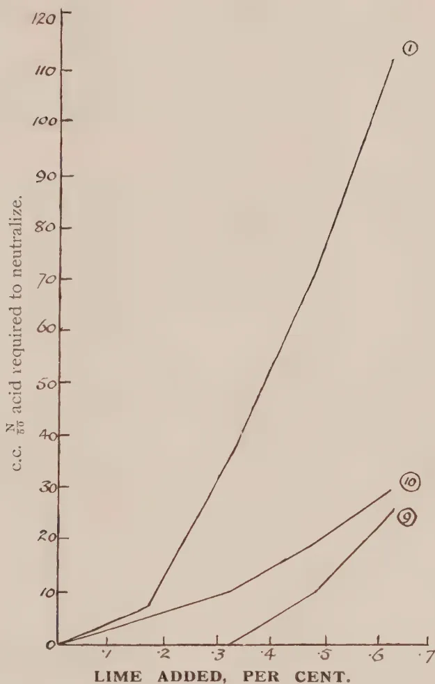
| Lime Added (per cent) | Curve 1 (c.c. N2O5) | Curve 10 (c.c. N2O5) | Curve 9 (c.c. N2O5) |
|---|---|---|---|
| 0.0 | 0 | 0 | 0 |
| 0.1 | 2 | 1 | 0 |
| 0.2 | 8 | 3 | 0 |
| 0.3 | 25 | 5 | 0 |
| 0.4 | 50 | 10 | 5 |
| 0.5 | 70 | 18 | 10 |
| 0.6 | 95 | 25 | 18 |
| 0.65 | 115 | 30 | 25 |
Selected curves showing Transition Point in partial sterilization.
Examination of the figures and curves for Nos. 1, 9, and 10, will show that the transition point is reached in the case of Nos. 1 to 6 when an application of 16 gram of lime per 100 grams of soil has been made; in the case of the other examples, the amount of lime requiring to be added to effect partial sterilization is greater than this. Comparison of the numerical data with the results obtained in respect of turbidity shows that this factor gives a reliable indication of the end point of the reaction in almost all cases.
The results are similar in general character to those adduced by HUTCHINSON and MACLENNAN, and generally corroborate them.
These workers have shown that a close correlation can be observed between the laboratory results and the data obtained from application of the theoretically indicated amounts of lime required to produce partial sterilization in the field. Experiments are now in progress designed to ascertain the correlation between laboratory results and tub experiments, the results of which will be reported in due course.
In general, the method appears likely to possess special value as a means of obtaining information regarding the biological activity of soils in certain directions.
366.[DECEMBER, 1917.The rationale underlying the process is not very clear, but would seem to be that when insufficient lime has been added to the soil to effect partial sterilization, the action of the putrefactive bacteria of the soil resulting in the liberation of carbon dioxide leads to the neutralization of a portion of the lime which has been added to the soil; when, on the other hand, sufficient lime has been added to the soil to effect partial sterilization, liberation of carbon dioxide is inhibited.
Calculation of the total amount of lime present in solution at the different points will show that it is always considerably below the total amount added to the soil. This is no doubt due to absorption of lime by soil colloids, since the increase in alkalinity, especially after the transition point has been reached, indicates the existence of a linear relationship between the total amount of lime added to the soil and the quantity passing into solution. The actual slope of the curve will vary in individual cases, and gives an indication of the absorption of the soil.
In conclusion it may be added, that when the end point is judged by the turbidity, the method presents no difficulties in its performance by any intelligent person, and appears to offer considerable possibilities of usefulness as an easy means of judging the conditions of soils in practice, once the necessary standards have been erected.
From the foregoing results it appears that the soils examined require the following quantities of quicklime per acre to effect partial sterilization to a depth of 1 foot ( lb. of soil).
| Soil No. | Tons of quicklime | Soil No. | Tons of quicklime |
|---|---|---|---|
| 1 | 2.5 | 8 | 5.0 |
| 2 | 2.5 | 9 | 7.5 |
| 3 | 2.5 | 10 | 5.0 |
| 4 | 2.5 | 11 | 5.0 |
| 5 | 2.5 | 12 | 2.5 |
| 6 | 2.5 | 13 | 2.5 |
| 7 | 2.5 | 14 | 2.5 |
1. The results are described in detail of the examination of fourteen soils from the Leeward Islands in respect of the lime requirement for partial sterilization.
2. The method followed is that described by HUTCHINSON and MACLENNAN with some modifications, the most important of which consists in a simple device for ascertaining the end point by means of the relative turbidity of the supernatant soil water.
3. The method appears to be capable of affording valuable information respecting the biological activity of certain soils.
4. In the concluding section the rationale of the process is briefly discussed, together with the probable connexion existing between the actual amount of lime passing into solution and the absorption due to soil colloids.
—WEST INDIAN BULLETIN, VOL. XVI, NO. 2.
DECEMBER, 1917.]367F. S. HARRIS, Director and Agronomist, and H. W. TURPIN,
Fellow in Agronomy, Utah Agricultural Experiment Station.
(1) During recent years considerable difference of opinion has grown up regarding the importance of the capillary movements of soil moisture and also regarding the laws governing the final distribution of moisture in the soil.
(2) The present paper gives the results of soil-moisture experiments conducted in the laboratory and in the field irrigation and dry-farming conditions. The experiments represent several thousand moisture determinations.
(3) The field studies include the effect of fallow, kind of crop, manure, irrigation water, surface mulches, cultural methods, and seasonal conditions on the movement and distribution of soil moisture.
(4) The laboratory studies include the effect of the initial percentage of moisture, gravity, soil type, source of supply, etc, on the movement and distribution of moisture in the soil.
(5) In field soils the moisture content of the fallow soils averaged greater than that of the cropped soils.
(6) Unmanured irrigated land showed less difference in moisture between cropped and fallow than did the manured.
(7) Irrigation influenced the top feet of the cropped plots proportionately more than the fallow, but water did not appear to penetrate the fallow plants below 7 feet as readily as it did the cropped ones.
(8) Under dry-farming conditions the difference in moisture between cropped and fallow plots was not noticeable until after June 16th. Cropped plots showed more fluctuation than fallow ones. Wheat, corn, potatoes, and peas drew most of their moisture from the first 4 feet in depth. The wheat land contained less moisture in the fall than the other cropped soils, with corn following.
(9) The increase in moisture due to application of 5 to inches of irrigation water was felt to depths of 10 feet in 24 hours, although most of the increase was in the first 4 feet.
(10) The effect of mulches in preventing loss under both irrigation and dry-farming was noticeable several feet below the surface of the ground, but the surface foot showed the greatest benefit from mulches. A straw mulch proved considerably better than a 2-inch soil mulch.
(11) Mulches on irrigated plots appear to influence the moisture content of the soil to greater depths than to those under dry-land conditions. A dry-farm plot kept free from weeds in 1916 but not mulched lost very little more water than one mulched 2 inches deep. A 6-inch cultivation on spring-ploughed and a 2-inch cultivation on fall-ploughed dry-farm land seemed to conserve the moisture best.
368[DECEMBER, 1917.(12) Subsoiling 15 inches deep had little influence on the moisture; spring disking was rather a distinct benefit.
(13) That spring ploughing under dry-farming conditions at Nephi conserves moisture better than fall ploughing is indicated by an 8-year average. This difference in favour of spring ploughing is shown more below the first foot than in the first foot, and more in the summer and fall than in the spring.
(14) A precipitation as small as 0.1 inch under dry-farming conditions could not be detected in the moisture determinations soon after, but, when as much as 0.5 inch fell within a short time, an increase in moisture was noticed to a depth of 6 feet.
(15) When freely supplied with water, a soil with a high initial percentage of moisture will come to a moisture equilibrium sooner than a drier one, but if given time the drier soil will absorb a greater quantity through a long distance either upward or downward than will the wet one.
(16) The rate of moisture penetration in the first 10 days was nearly twice as great with initial percentages above 15 as with 5 or below, and nearly twice as rapid after a 15-inch irrigation as after a 5 inch one. Under the most favourable conditions 7 feet was influenced in 10 days.
(17) Moisture movement from soils of optimum moisture content into soils of differing initial percentages varied to an extent inversely as the initial content of the dry soil. At the end of six weeks, however, the amount of water actually in the soils still varied directly as the initial percentages.
(18) The higher the percentage of moisture in the soil supplying the water to a dry soil, the more rapidly and further from the source of water did the moisture move.
(19) Even when the source of water was an unsaturated soil, greater and faster movement took place when the water was moving downward than upward. When the quantity of soil yielding the water was so small as to make the total moisture content of both moist and dry soils very low if equally distributed, the effect of gravity was not great.
(20) Moisture from a nearly saturated soil moved a greater distance into loam than into sand in 139 days and into sand farther than into clay. The clay, however, contained more moisture in the layer of soil next the water supply than the others and sand contained by far the least.
(21) Sand, with 7.77 per cent. of moisture gave up its moisture to loam much more readily than did loam with 31.09 or clay with 24.62 per cent. of moisture.
(22) The rate of rise of moisture from soils of varying fineness when used either as water sources or water absorbers varied inversely with the fineness. Water rose to a height of over 30 inches in a loam soil from a moist sand in 94 days, while from a moist clay it rose little more than 6 inches in this length of time. In all soils the most rapid rise of the water was during the period soon after being placed in contact with the water.
(23) Although the rise of the moisture was more rapid in the sand and loam than in the clay, the rise continued steady longer in the clay than in the others.—JOURNAL OF AGRICULTURAL RESEARCH, Vol. X, No. 3, July 16th, 1917.
DECEMBER, 1917.]369HAROLD H. MANN D. Sc.,
Principal, Poona Agricultural College.
As a producer of fodder, maize probably stands only second to jowar among the crops of the world, and it may even be doubted whether it is not in many cases considerably its superior. It produces almost as much good fodder per acre as jowar, it can be safely grown over a larger range of country than its rival, and it can be fed at any stage of its growth far more safely than is the case with jowar.
The country where maize growing has developed to a greater extent than anywhere else in the world, both for grain and for fodder, is the United States of America. There, it is the premier crop of the country, and dominates the agriculture of a vast area of land extending from semi-tropical conditions to those with a very hot summer and a very cold winter. Of course there are an almost endless number of varieties suited to these varying conditions, some ripening quickly, some slowly, some yielding grain and little fodder, some much fodder and relatively little grain. But the general result of a consideration of its range in the United States shows that maize is one of the most tolerant of crops so far as climatic conditions are concerned, more especially when it is grown for fodder. It will not stand frost, and does not grow rapidly below about 60°F, but so far as temperature is concerned it will do well wherever the mean is above this point (60°F.) during the growing period. As to rainfall, it does not seem to flourish where there is a combination of high temperature and heavy rainfall so far as giving a high yield is concerned. Most of the best part of the great maize area in America has a rainfall ranging from 30 to 40 inches per annum. But provided it has not to stand waterlogged conditions, maize is capable of growing for the production of fodder under very widely different conditions of rainfall.
In India, where maize is a crop introduced comparatively recently* its cultivation has not extended so widely as one would have expected. It has become a dominating crop, however, among the hill peoples of Northern and Central India, and is grown, moreover, on much of the plains also in the Northern part of the country. In the Peninsula, apart from such hill areas, the cultivation has hardly spread. In the Bombay Presidency, two-thirds of the total area is in one district the Panch Mahals, chiefly inhabited by hill tribes.
But enough is grown to show (1) that maize, at any rate for fodder will flourish in almost any part of Western India, (2) that, given suitable soil, there need be no fear of planting it as a fodder crop, whenever water is available, either from natural or artificial sources.
* See WATT—Commercial Products of India.—Zea Mays.
370[DECEMBER, 1917.VARIETIES OF MAIZE.Experiments have been conducted with various types of maize, both transferred from district to district, and imported from America, but in no case has a variety been obtained that, for fodder production has been any improvement on that already locally grown. At present the varieties here have not been closely studied, but everything seems to indicate that intending cultivators cannot do better than utilise good seed from the district nearest to his farm where maize is grown.*
The results of growing maize for fodder have been more completely worked out on the Deccan, by experiments at Poona, than anywhere else and the yields obtained in a number of years, on well manured land are as follows when the plant was grown as a rains crop and usually without irrigation. I have recalculated all the results, where necessary, to a basis of dry fodder, counting one pound of dry to be produced by pounds of green fodder.
| Year. | Yield of dry fodder per acre. |
Cost of production. |
Value of crop on sale. |
Remarks. | ||||
|---|---|---|---|---|---|---|---|---|
| lb. | Rs. | a. | p. | Rs. | a. | p. | ||
| 1893 | 7,940 | 29 | 0 | 0 | 59 | 0 | 0 | Green fodder valued at 300 lb. per Rupee. |
| 1894 | 13,650 | 23 | 0 | 0 | 94 | 0 | 0 | Green fodder valued at 325 lb. per Rupee. |
| 1898 | 11,675 | 20 | 5 | 0 | 88 | 0 | 0 | |
| 1904 | 8,970 | 26 | 0 | 0 | 67 | 0 | 0 | Affected by long break in rains and therefore irrigated. |
| 1905 | 6,300 | 55 | 0 | 0 | Had to be irrigated. | |||
| 1908 | 9,500 | 34 | 0 | 0 | ||||
These figures give an average yield of 9,700 pounds or about tons of dry fodder per acre on well-manured land. This is just about equal to the yield of sundhia jowar under similar conditions. It is fully understood that this is only obtained on well manured land; the yield rapidly falls off if the manure is omitted.
Maize has the great advantage over more types of jowar that it can be grown in the Deccan at almost any time of the year provided irrigation is given. The yield is, of course, usually smaller, but the fodder is correspondingly more valuable. Some yields actually obtained in the Poona Farm in the hot weather, and in the rabi season were as follows:—†
| Year. | Yield of dry fodder per acre. |
Cost of production. |
Value of crop. |
Remarks. | ||||
|---|---|---|---|---|---|---|---|---|
| lb. | Rs. | a. | p. | Rs. | a. | p. | ||
| Hot weather. | ||||||||
| 1904 | 8,700 | 48 | 0 | 0 | 65 | 0 | 0 | |
| 1908 | 11,200 | 151 | 0 | 0 | February to May | |||
| 1910 | 10,700 | 152 | 0 | 0 | Do. | |||
| Autumn and Cold weather. | ||||||||
| 1905 | 4,500 | 17 | 0 | 0 | Following manured maize and sown on September, 29. | |||
| 1909 | 8,300 | 43 | 0 | 0 | December to February. | |||
| 1911 | 5,980 | 30 | 0 | 0 | Do. | |||
* Poona Farm Report, 1898, states "Several American varieties were tried but neither in growth of stalk nor in size of cob were they so good as the common country varieties. See also MEAGHER and WILLIAMS.—Farm Manual.
† These results will be found in the Reports of the Poona and Dairy Farms, Poona.
DECEMBER, 1917.]371As a further illustration of this most valuable character of maize as a fodder crop—that it can be grown in the Deccan at almost any season—the result of an experiment at Manjri may be given where a succession of maize crops for fodder on land manured with 2,000 pounds of safflower cake per acre were taken. The results were as follows—the yield being given as green fodder:—
| lb. | ||
|---|---|---|
| 1st Crop | June to August | 18,308 per acre |
| 2nd Crop | September to November | 7,031 " |
| 3rd Crop | December to February | 11,625 " |
| 4th Crop | March to June | 8,698 " |
| Total | 45,662 | |
This is equivalent to 20,300 pounds or over 9 tons of dry fodder per acre in the year, costing Rs. 183.
The figures here given have been obtained from experiments on the medium black soil on the Deccan, but it is not known that maize will grow very well as fodder crop in most other parts of Western India, including Gujarat and the Konkan. In the latter case (the Konkan) it gave a yield at Ratnagiri* of 12,560 pounds of green fodder per acre in the hot weather worth Rs. 52-8-0.
Just as with the fodder jowars, maize should be grown much more thickly than if it was intended to sow it for grain. MOLLISON† recommends that it should be sown with a four coultered drill with rows about twelve to thirteen inches apart—and states that twenty pounds of seed per acre are sufficient. As a rule, however, it is well to sow more thickly than this and keep a distance of only nine inches between the rows, sowing either with a drill or after the plough and using fifty to sixty pounds of seed per acre. If this is done the land should be well cultivated before sowing and then little or no interculture will be necessary while the crop is growing. The thicker sowing not only ensures a thicker stand of plant, but also tends to prevent the fodder becoming coarse.
Soils for Maize Fodder.—Maize will grow in almost any kind of soil in Western India, provided that there is good drainage, and hence that the land is not waterlogged. The ideal land is, however, a light loam of considerable depth, and this crop does not need the stiff tenacious soil which seems the best for growing fodder jowar. It is curious to see how rapidly maize replaces jowar under irrigation in the South Deccan, where, as in the neighbourhood of Gokak, a black soil gives place to light land derived from sandstone rocks.
Methods of Cultivation.—The methods of cultivation which have proved best are very similar to those used for jowar. As with this latter crop, maize does not require deep cultivation, and in fact seems to give bigger return if deep cultivation is not carried out. This is in accordance with experience in America.‡
* Report of the Ratnagiri Agricultural Station, 1913-14.
† Text-book of Agriculture, Vol. III, p. 53.
‡ See for example SHEPPERD and CHURCHILL, —Bulletin No. 76, N. Dakota Experiment Station.
372[DECEMBER, 1917.In the case of the crop to be sown chiefly or entirely on the monsoon rains, the land should be ready for sowing by the middle of June. The soil should be prepared in the hot weather if possible, and should be ploughed shallow or deeply harrowed, and subsequently harrowed repeatedly so as to produce a thin layer of loose soil on the top. It should be well manured with cattle manure before ploughing, Maize repays manuring and the best manure is farm-yard manure.* It will usually pay to apply eight to ten tons per acre of cattle manure. It is rarely advisable or necessary to use concentrated artificial manures, but (as above indicated) four good crops in succession have been obtained after treatment with two thousand pounds of safflower cake per acre. The crop, further, grows excellently on sewage affluent.† The crop is not usually intercultured, if the soil has been well prepared, but interculturing will usually do good if the time and labour is available, if done once or twice after the crop is four or five inches high. It is not so necessary as with jowar, because the maize grows quicker and smothers the weeds more completely.
In the case of maize grown at any other season, the land should be well prepared, and if possible frequently harrowed before sowing the maize. Sowing should be done as with the monsoon kharif crop, and, immediately after the seed is covered, beds should be made as a provision for irrigating the crop. The beds should be long and narrow, five feet wide. The length, of course, depends on the levels in the field, as they must be level for irrigation. Interculture is valuable with an irrigated crop as it tends to form a good soil mulch and so reduce surface evaporation.
Maize is not usually sown as a mixed crop for fodder purposes, except in one case. This is when a little maize is sown in sugarcane fields on the Deccan, immediately after the cane sets are planted. It is of course removed long before the principal crop shades the ground. The practice is distinctly a good one.
Rotations.—The rotations suitable for maize are nearly the same as those for jowar. In the Panch Mahals, wheat is often taken after maize, and this is hardly good practice. Gram would be much better,‡ and is very often used, though hardly so frequently as wheat.
Maize grows very rapidly, and has one great advantage over all the jowars namely that it can be fed to stock at any period of its growth. There has never been any charge of injury to animals by eating young maize which could not be explained by a sudden access to large quantities of succulent green fodder,—which is always dangerous. Careful experiments have been made in America to see if prussic acid—the poison of young jowar fodder—is ever to be found in maize and it has never been detected even in suckers from the maize stalks in the field.§
This being the case, the crop when grown for fodder can be cut and used at any stage that is most convenient, but the maximum yield and
* Maize well manured gives a better fodder containing less fibre and twenty-five to thirty per cent. more proteins than when un-manured. See SYNDER.—Minnesota Experiment Station, Bulletin No. 101.
† KALKAR.—Bulletin No. 34 (1909), Bombay Agricultural Department, p. 9.
‡ MOLLISON.—Text Book of Agriculture, Vol. III page 52.
§ ALWAY and TRUMBULL.—Nebraska Agricultural Station Report, 1909.
DECEMBER, 1917.]373digestibility together is obtained if it is cut when the grain is in the dough stage—whether intended for direct feeding, for making into hay, or for making silage. The method of cutting almost universally used here up to the present is the sickle, and with maize this method is so good that it is still very largely used even in America. If sown thick, however, as above recommended, the crop can be cut with the ordinary mowing machine.
Under the conditions of Western India the crop is usually ready to cut about two months after sowing. Moderate changes in temperature do not seem to have very great effect on the yield of maize fodder per acre,* but naturally in the cold weather the time taken for growth is longer. Except between November and February the crop should not, however, take much longer to mature for fodder than the time above indicated.
Maize is probably the best emergency fodder crop to grow when the rain fails, as is so often the case in Western India, and when famine is imminent. It grows quickly, it requires little water considering the yield of fodder which it gives, and it can be cut at any stage without danger.†
Utilisation.—In Western India the fodder maize crop, in the few cases when it is grown, is usually cut in the field and fed green to stock direct. When grown in the hot weather, it is the only way of using it. If it is to be employed in this way, it is specially important to grow it thickly on the field. Otherwise the lower part of the stalks become very coarse, and the lower leaves become decidedly fibrous.‡ When grown thickly this does not occur, and the fodder is very good. MOLLISON states “The green fodder is excellent, being very sugary.§” It will hardly, however, fetch as high a price as sundhia on the market.
The digestibility of green maize fodder, as a whole, does not materially decrease until the dough stage is reached. According to American tests with sheep, the following percentages of digestibility were obtained from immature fodder, and fodder at the above stage.¶
| Proteids. | Fat. | Nitrogen-free extract. | Fibre. | ||
|---|---|---|---|---|---|
| Immature fodder | ... | 47.4 | 45.9 | 57.6 | 67.9 |
| Fodder at dough stage | ... | 36.0 | 66.1 | 60.6 | 56.7 |
This would indicate that as the crop becomes riper it loses in digestibility so far as proteids and fibre are concerned, but not otherwise. Cattle digest all the constituents rather better than sheep. Experiments by the same workers as those above quoted indicate that in the best types of fodder jowar, the proteids, the fibre, and the nitrogen-free extract are rather more digestible than in mature maize. The difference, however, is not great except with the proteids. Other experiments are even more favourable to maize fodder.
Green maize should be well cut up before being given to cattle, as already described with jowar. The cutting up is even more important than with the best types of jowar fodder.
* BURT-DAVY.—TRANSVAAL AGRICULTURAL JOURNAL, Vol. VII (1909).
† See Leaflet No. 5 of 1911, Bombay Department of Agriculture.
‡ See Poona Farm Report, 1893.
§ Text Book of Agriculture, Vol. III., page 52.
¶ HEADDEN.—Colorado Bulletin No. 93.
374[DECEMBER, 1917.If maize is allowed to ripen completely, so that cobs of grain can be taken, the fodder loses much in value, far more than jowar. It is hardly fit, indeed, to give cattle unless mixed with more nutritious fodder. In America it is often regarded as useless, and is left standing in the fields or burnt. In India MEAGHER and WILLIAMS* state that it "makes an inferior fodder when fed after the cobs have ripened, and should be fed only to working cattle when mixed with other fodder." The fact that maize fodder so largely loses its value if left till the grain is mature should never be forgotten. In case maize is grown for seed it is a common practice in India to strip the leaves for fodder during growth, as this is said also to improve the seed.
In India, maize has not usually been made into hay, that is to say, cut when in the dough stage, dried in the field, and stacked. When there is no chance of making silage, however, very satisfactory feed can be produced by this method, and huge quantities of maize hay are made in America. To preserve it in this way, the crop should, after cutting, be bound in sheaves eight to twelve inches in diameter, and five or six of these made into an open but firmly built shock in the field, the tops being bound together to lend further strength. These shocks if well made will stand in the field as long as it is wished to leave them there, or they can be carried to the farm and stacked loosely. †
But if maize is to be kept, the ideal method of keeping it is the silo. It is the ideal crop for silage, and the crop to which this method of preserving has been applied to by far the greatest extent. We have comparatively few data for Western India with regard to the yields obtained but it has been sufficiently used to show that the fodder produced by this method is excellent and that the losses are comparatively small.
The maize for silage making should be cut when the grain is in the dough stage as before, or perhaps when a little riper‡ and immediately taken to be cut up for the silo. It can be put in the silo without chaffing, but it means a larger loss from the material becoming mouldy. The better the material is cut up the better, and some authorities even recommend cutting it into half-inch lengths.
It forms excellent silage either in built silos or in pit-silos. The former are, of course, the most suitable for large farms, but a simple pit in the ground eight or ten feet wide and four to six feet deep, free from any chance of drainage into it, into which the cut maize is put and trampled down carefully especially near the sides, has given very good results. After filling, the whole is then covered, weighted with earth, and the fodder is ready for use after three months though it may be kept for a year or more.
So prepared it gives a splendid fodder for the long dry weather of Western India. The digestibility is very little affected (see page 373) by making it into silage, and it is eaten greedily by stock.
"Maize is the food plant of a great number of insects which rarely do it serious injury: only where it is grown in small quantities and is not the staple crop do these pests become so numerous on each plant as to do much damage.§"
* Farm Manual.
† See GRISDALE—Corn for Ensilage and the Silo, Ottawa, 1912.
‡ MORSE (NEW HAMPSHIRE AGRICULTURAL STATION, BULLETIN No. 92) says "The corn (maize) plant has reached its maximum food production when it is nearly matured, with the ears fully formed and well filled, and at this stage it is best suited for silage."
§ LEFROY—Indian Insect Pests.
DECEMBER, 1917.]375Maize Borer.—The only really serious pest is the moth borer, which under the name of the “jowar borer” has already been described when considering the jowar crop. The chief difficulty in dealing with this borer is the fact that it attacks so many cultivated crops.
When it appears, however, all young maize stems which show signs of being attacked should be removed, and burnt, and in any case the stubbles of the crops should not be allowed to remain standing in the land. They should either be removed, and burnt or otherwise utilized as soon after the removal of the crop as possible.
Maize Fly (Delphax psylloides).—This small dark insect, not unlike a large aphid, is found in the sheathing leaves of maize. “The insects are active, running crab-like with a sideways motion, and leaping away when disturbed.” “Large colonies of all ages are found in infected plants and feed by extracting juice from the tissues of the plant.”* The insect sometimes, though not usually, does a good deal of damage to small plots of maize. It can usually be checked by dropping ashes or lime and kerosene into the heart of the plant to drive out the flies.*
Other insect pests have been so far of no practical importance in Western India.
No fungus or other vegetable pest has yet done serious injury to maize in Western India, when grown as a fodder crop.
Maize when cut at the stage suggested, usually contains between 70 and 80 per cent. of water, and most often over 75 per cent. There is a tendency, judging from the published analyses, for maize fodder to be more watery in colder climates than it is in Western India. Thus for instance in England it contained, as the average of numerous analyses, 83·2 per cent. of water, the amount being greater in bad seasons than in good ones. At the same time large well-grown, advanced plants always contained less water than smaller ones which had not grown so vigorously.† In Italy similar fodder contained 79·3 per cent. of water.‡ Our results for maize fodder grown at and near POONA gave (1) 77·9, (2) 76·1, (3) 72·3 per cent. of water.
Calculated on an even basis of 75 per cent. of water, maize grown at POONA and MANJRI in 1912, 1914, and 1915 gave the following figures on analysis:—
| (1) | (2) | (3) | (4) | |
|---|---|---|---|---|
| % | % | % | % | |
| Water ... .. | 75·0 | 75·0 | 75·0 | 75·0 |
| Ether Extract (oil, etc) ... .. | 0·5 | 0·4 | 0·5 | 0·6 |
| †Albuminoids (i.e. nitrogen ) ... .. | 1·5 | 1·3 | 1·3 | 1·7 |
| Digestible carbohydrates .. | 14·0 | 15·2 | 14·0 | 13·1 |
| Woody fibre ... .. | 7·6 | 6·7 | 7·3 | 7·3 |
| Ash ... .. | 1·4 | 1·4 | 1·9 | 2·3 |
| 100·0 | 100·0 | 100·0 | 100·0 | |
| †Containing nitrogen ... .. | ·23 | ·20 | ·21 | ·24 |
* LEFROY—Indian Insect Pests.
† ANNETT AND RUSSELL—JOURNAL OF AGRICULTURAL SCIENCE, VOL. II (1908).
‡ FERUGHO AND MAYER, 1909.
376[DECEMBER, 1917.Calculated on a similar basis of water the composition of this maize fodder is not widely different from those of jowar. Very little alteration in composition and very little change in digestibility occur if the fodder is dried.*
In making silage a considerable loss of digestible carbohydrates, including sugar takes place. I quote analyses made of silage prepared at the Gokak Farm in England to a basis of 75 per cent. of water.
| I | II | |
|---|---|---|
| Maize silage | Maize silage† | |
| Gokak Farm | England | |
| % | % | |
| Water | 75.0 | 75.0 |
| Ether Extract (oil, etc.) | 0.8 | 0.7 |
| †Albuminoids (i.e., nitrogen ) | 2.3 | 2.8 |
| Digestible carbohydrates | 11.3 | 10.4 |
| Woody fibre | 8.0 | 9.3 |
| Ash | 2.6 | 1.8 |
| 100.0 | 100.0 | |
| †Containing nitrogen | .36 | .45 |
Numerous experiments have been made to ascertain whether the making of silage reduces or increases the digestibility of the constituents of the maize and on the whole it seems that the digestibility is somewhat reduced. I will quote the results of two sets of experiments, both conducted with cattle, and both done in America.
| Proteids. | Fat. | Nitrogen free extract. | Fibre. | |
|---|---|---|---|---|
| (1) Maize fodder ‡ | 56.9 | 72.3 | 74.4 | 79.8 |
| Maize silage | 46.7 | 68.3 | 64.1 | 67.2 |
| (2) Maize fodder § (green) | 73.5 | 83.0 | 76.1 | 75.3 |
| Maize silage | 66.2 | 82.5 | 71.9 | 74.2 |
From these figures it would appear that making the fodder into silage reduces considerably the digestibility of the proteids, but that of other constituents is less affected.
In spite of all, however, the general opinion appears to be that the making of silage is by far the best method of preserving maize fodder, and that it is usually well worth while to preserve it by this system.
It has been stated that good silage can be made from dried maize fodder by mixing it with water and closing down the silo in the usual way, and that if there is not excess of accumulation of water the fodder keeps very well and greedily eaten by stock.¶ We have no experience, however, of this method in Western India.—BULLETIN No. 77 OF 1916, DEPARTMENT OF AGRICULTURE, BOMBAY.
* SEE LINDSEY.—Massachusetts Agricultural Experiment Station Report, 1904. The Conclusion is based on Experiments on sheep.
† ANNETT AND RUSSELL.—Loc. cit.
‡ BARTLETT.—Maine Agricultural Experiment Station Bulletin No. 110.
§ GAMBLE.—Annual Report, Ontario Agricultural College, 1905.
¶ NEALE.—Delaware Agricultural Experiment Station Report, 1903.
DECEMBER, 1917.]377MR. G. F. KEATINGE, C.I.E., I.C.S.
Director of Agriculture, Bombay.
Every business man knows full well that the success of any manufacturing enterprise depends on economic considerations as much as it does on technical skill. The projector of a new industrial concern will, accordingly, arrange the scope and magnitude of his enterprise in accordance with general business principles and with the peculiar economic facts of the case. The supply of raw material must be adequate and the market secure; the industry must be of sufficient size to bear the cost of efficient management, the engines large enough to supply the requisite power, the machinery efficient, the buildings properly designed and the working capital adequate; by-products must be fully utilised and there must be no avoidable waste of material or time. When the factory has been suitably located, designed, equipped and financed the primary requirements for success will have been secured, and the outcome will then depend on capable management and technical skill.
In agriculture it is, from the nature of the case, impossible that the same precision of organization can be secured as in the case of industrial enterprise; but it is certain, none the less, that success in agriculture depends largely on the factors similar to those already enumerated. Are the size and distribution of the holding suitable? Is it properly equipped and stocked? These are questions that must be answered before success or failure can be attributed to the personal characteristics and skill of the farmer.
To revert to the analogy of the factory. Suppose that the directors of a cotton mill in Bombay were to call in a weaving expert to advise them as to what was wrong with their system of weaving, and the expert were to find that the mill was situated at Dadar, the offices in the Fort and the godowns at Colaba, that the engines were much too large for the work that they had to do, the number of looms too small to turn out produce sufficient to support the cost of the management, and the working capital inadequate. In such a case the weaving expert would assuredly say, "First get all your buildings conveniently situated in one place, increase the number of your looms and put your finances in order, and then call me in for technical advice." This is the problem that the Agricultural Department has so frequently to place when called in to advise cultivators. It is often the organization which is wrong, not the technical skill; and though there is usually ample room for improvement in the latter, many obvious improvements which might otherwise be suggested are found to be hopelessly blocked by the economic circumstances. There are many physical obstacles for the chemist, and the botanist and the engineer to surmount, but the value of their assistance must be seriously discounted where the obstacles which dominate the situation are economic; and this state of affairs must continue to exist until the economic difficulties are overcome.
By the above remarks it is not intended to suggest that agricultural salvation lies in capitalistic farming on a large scale. In some countries and in some branches of agriculture good financial results are obtained in that way; but the system of Hindu Law aims at a wide distribution of the land amongst a large proportion of the population, and the spirit of Indian Agriculture indicates the peasant farmer as its ideal. With this latter view modern European opinion is in agreement, and many countries in which the peasant farms
378[DECEMBER, 1917.of olden times have been merged in large estates are now trying to call into existence a new class of peasant farmers and to revert to the old system—but with a difference; and the difference is indicated by the fact that the present aim in such countries is not merely to create peasant holdings, but to create suitably sized and suitably situated peasant holdings, to equip them with adequate stock and capital, and to provide for their maintenance intact in that condition. It is well-known how far the sub-division of holdings has been pushed in India, how large a proportion of the cultivators struggle to support life on holdings too small to provide a comfortable living by existing methods, and too much fragmented to admit of such development as alone would compensate for their small size. There is no need to enlarge on the existing situation. What then would be the ideal condition? Let us suppose the plain of Gujarat or the valleys of the Deccan divided up into compact holdings of twenty to forty acres each fitted with its homestead, cattle shed, storehouse and well, the houses perhaps grouped into hamlets with space sufficient to allow each man plenty of elbow room, without isolating each family in such a way as to destroy social life or render co-operative and communal action impossible, the land levelled and embanked, the holdings fenced and each equipped with effective implements and one or more pairs of good bullocks. A distant ideal, it may be said; but still one which many countries have set before themselves and are realising by slow degrees.
No one would attempt to force all the holdings of a country into one standard pattern. There is room and necessity for diversity and advantage in variety; but in any tract it is possible to formulate rough limits of area and equipment calculated to admit of the realisation of optimum results; and it is desirable that these limits should be clearly recognised and that sustained efforts should be made to secure for a large proportion of the farmers' conditions which are compatible with successful farming and effective development.
It is not proposed to discuss the method by which such changes should be effected, since the question is a large one and bristles with difficulties: all that is here intended is to emphasize the primary and fundamental necessity of the agricultural situation in the Bombay Presidency. The change suggested would inevitably bring about permanent improvements now so badly needed, induce progress in agricultural practice, and, by stimulating the activities of the farmers, would effect many profitable modifications in the existing system of farming. It is, after all, the intelligent and industrious activity of the farmer which is the mainspring of production, and it is by stimulating and using to the full this agency that all improvements must be effected. The farmer has little opportunity of wasting anything, but there is one thing that he does waste lavishly and that is his time. Once get him out of the vicious economic circle which now dumbs his activities and the results will soon be apparent.
Mention has been made of possible changes in the system of production. The thing which strikes most observers is that the Indian cultivator trusts too much to a single crop, and that he has few subsidiary sources of industry or income. With cotton at its present price the one object of the cultivator in the cotton tracts is to grow as much cotton as possible, and in this he is right; but it does not follow that twenty acres of ill-tilled and ill-manured land will give as much outturn as ten or fifteen acres of land better tilled and better manured; and in most localities it will be found that with adequate
DECEMBER, 1917.]379organization the breeding and rearing of live-stock, milk production or poultry raising offer opportunities from which most cultivators are now debarred by the existing conditions of congested villages and scattered holdings, even though the supply of fodder, the range of pasture and the accessibility of markets may be favourable.
To turn from general economic conditions to more detailed technical questions; what are the factors in successful crop production? Soil, moisture and temperature are the primary factors, and human effort can do nothing to affect the temperature, the rainfall or the geological formation; but by embanking the fields and checking erosion the depth and the quality of the soil may be improved, by suitable manuring and rotation its chemical and physical qualities may be modified; while irrigation and good tillage will compensate for the deficiencies of the rainfall. It is by such methods that the cultivators may become the master of his fate rather than the slave of circumstances.
Some years ago enquiries were made in Europe regarding the process of agriculture during the past century, and the relative importance of the factors which had produced the result. Statistics show that during the past century in Europe the outturn of wheat and other cereals has been doubled, and experts in various countries were asked to indicate the proportion of this 100 per cent. increase that could be assigned to each of the following factors, viz. :—
The experts consulted generally agreed that outturn had increased from 50 to 100 per cent. during the past century, and in some cases it was declared that the outturn had been trebled. The causes of this improvement were assigned as follows, viz. :—
| England, per cent, |
Germany, per cent. |
France, per cent. |
|
|---|---|---|---|
| Improved seed | ... 10 | 15 | 5 to 20 |
| Improved manure | ... Considerable | 50 | 50 to 70 |
| Improved rotation | ... Little, except indirect |
10 | — |
| Improved cultivation | ... Most of all | 25 | 15 to 30 |
It will be noticed that manure secures the first place amongst the causes that have contributed to increased yields, and under the heading of manure is included not only artificial manures, but, in an even greater measure, the increased supply of farmyard manure due to the increased number of live stock kept, and its increased value due to the concentrated foods that are now fed to cattle. Next in order comes improved cultivation, which secures the first place in England and the second place in Germany and France. It may be noted that in England, where the first place is assigned to it, the term cultivation is taken to include drainage operations. On the other hand it is noted that in many cases where the degree of cultivation has not been improved the cost of the operations has been cheapened, and also that without good cultivation nothing like the full effects of the manure could be secured. Improved seed comes in a bad third, and it is noted that even such improvement can be secured by the use of good seed only when the cultivation and
380[DECEMBER, 1917.the manuring are adequate. It must be recognised; however, that the difference between the cost of using good or bad seed will amount to comparatively little per acre, and that, if a 10 or 15 per cent. increase in produce can be obtained in this way there is no excuse for not securing it. Improved rotations are held to have produced little direct result, but have rendered the wasteful practice of the bare fallow unnecessary, and by adding greatly to the supply of fodder crops have enabled the farmers to keep more live stock, and so have been the indirect cause of the increase in manure.
Now the opinions recorded above cannot, of course, be taken as a general guide in India with its varied conditions, but there are some tracts to which they would apply with a fair degree of accuracy, and they have a bearing on the question of agricultural improvement almost everywhere. In the arid tracts of India where moisture is the limiting factor in crop production irrigation is the prime necessity and by this means crop outturns can be doubled, and other crops of ten times the value grown. In such tracts the question of manure has little importance in the absence of irrigation; but, given irrigation, manure becomes of vital importance. Practically everywhere there is a vast field for improved tillage which is now very defective; and wherever the rainfall is fairly abundant, the supply of manure needs increasing. In the matter of seed there is certainly good scope for progress with a crop like cotton, but in the case of crops like jowari and bajri the prospects of material improvement in this direction seem to be much less hopeful. Where the land is sloping and heavy rainstorms occur, a system of field embankments which will regulate the surface water and check erosion and scouring, is very necessary and produces marked results.
If an opinion were asked for as to the prospects of improvement and the methods to secure it with reference to any definite tract it might be possible to hazard such opinions as the following, viz.:-
I. Improved outturn possible on a typical sloping cotton field in the neighbourhood of Dharwar (Southern Maratha Country) 100 per cent.
Factors :—
| Seed | ... | ... | 20 per cent. |
| Cultivation | .. | ... | 30 " |
| Field embankments | ... | ... | 20 " |
| Manure | ... | ... | 30 " |
II. Improved outturn possible on a typical cotton field in the neighbourhood of Surat (Gujarat) 60 per cent.
Factors :—
| Seed | ... | ... | 20 per cent. |
| Cultivation | ... | ... | 20 " |
| Manure | ... | ... | 20 " |
Taking the Bombay Presidency as a whole improved cultivation stands easily first in the factors of improvement, and this connotes better implements and better cattle. The cattle are a very important consideration since they supply both the motive power for the tillage operations and the manure for the fields. Any system of farming which enables the cultivator to breed good cattle at a profit and to maintain his work bullocks without undue cost, will do much to solve the primary difficulties of the situation, and this is very largely dependent on the organisation of the land holdings, a consideration which brings us back to the point from which we started.—THE MYSORE ECONOMIC JOURNAL, Sept. 1917.
DECEMBER, 1917.]381Vol. IV., BULLETIN No. 71 of the Department of Agriculture, Madras, embodies the notes on irrigation of Mr. R. CECIL WOOD, Principal of the Coimbatore Agricultural College. These are delivered as part of the series of general lectures given in the Short Course at that College. It should be in the hands of all those interested in the cultivation of foodstuffs in the drier districts.
The remarks under Tanks as one of the "sources of water for irrigation" is of more than passing interest to all in Ceylon.
The simplest form of tank is made by throwing a bund across a line of drainage so as to intercept the surface drainage which would otherwise pass away into the rivers and be lost.
They are from their nature shallow and consequently suffer heavily from evaporation. Though they provide grazing when dry for the cattle of the village still they occupy about a quarter of the area which they can irrigate. Being still water reservoirs they act as silt-traps which tend to fill up the tanks and reduce their capacity whilst the drained lands suffer from the absence of silt. Tank irrigation, in fact, is in many respects uneconomical and wasteful. Tanks are a frequent source of quarrel and litigation amongst the cultivators. It is to the interest of the owners of the land above the tank to lower the escape weir whilst the cultivators below the tank are desirous of storing as much water as is possible and so endeavour to maintain the height of the weir.
There is much difference of opinion on the question as to whether cultivation ought to be allowed on tank beds. There does not appear to be any good ground for the fear that cultivation by loosening the soil will make the tank less watertight nor for the supposition that it causes an increased deposition of silt. The fact that the tank-beds are extremely fertile and that they occupy large areas make the question one of considerable importance. The writer quotes one instance coming within his own experience where the prohibition of cucumber cultivation in a tank-bed had a most disastrous effect. The photographs show how weeds have grown apace and acted as a clog on the silt causing the tank to become shallow. This is a condition of affairs not by any means uncommon here in Ceylon. The Government allows the cultivation of tank-beds on special permits. Whilst it appears desirable that Government should encourage such cultivation it is important that the crops encouraged be such like cucurbits and sweet-potatoes which will quickly cover the ground and check the growth of reeds and other quickly-growing weeds. Any type of garden cultivation which will entail the clearing of weeds should be encouraged. This may with advantage be made a necessary condition before the granting of such permits.
In such tank beds it is comparatively easy to strike a supply of water on shallow wells which might allow of growing irrigated garden crops. The growth of rice in tank-beds does not appear to be desirable because of the customary neglect such fields are subject to.
Along tank bunds and the distributing channels there is a considerable waste of land. The writer recommends that owing to the increasing difficulties in procuring green manure seeds that such land be utilised for this purpose. Perennial plants can be grown on the channel bunds whilst the smaller Sesbanias and Tephrosia will probably establish themselves with very little assistance on the larger slopes of the tank bunds.
The sinking of wells in the land commanded by the tank renders possible the adoption of very intensive cultivation. In Madras, no extra charge is made in such cases. The rules governing such cases are worthy of study by our administrative officers as it appears deserving of adoption here in Ceylon.
H. L. VAN B.
382[DECEMBER, 1917.POPENDE's paper on The Pollination of the Mango (BULL. 542. U. S. Dep. of Agric.) records his investigations made with the definite object of determining the cause or causes of mango sterility and of finding some remedy.
The common seedling mangos of tropical America are very heavy yielders but such choice introduced varieties as the Mulgoba fruit very sparsely; a good crop of the Mulgoba variety is got only once in four years. Indian and West Indian writers suggest defective pollination as the cause of unfruitfulness.
This investigator after a very thorough study comes to the conclusion that this difficulty is not due to any morphological defects in the pollen or to defects in the mechanism of pollination. A lack of pollinating insects and loss of pollen through extensive rains may at times have an injurious effect but from observations carried out extensively through several seasons the conclusion reached is that the problem is a physiological one connected principally with soil moisture and in a somewhat lesser degree—food supply. If the ground is low and continually moist the mango rarely flowers, while in districts with a well-defined dry season corresponding to the normal flowering season, flowers are produced abundantly.
It is noted that the Sandersha and the Julie of the grafted varieties and No. 11 race among the seedlings are less injuriously affected by a wet soil. The Mulgoba and numerous other varieties failed to flower until the wet weather is followed by about a fortnight of dry, sunny weather. Fruit buds in the mango are not formed as in temperate fruits a long time in advance of the flowering season. If the soil can be thoroughly dried a few weeks prior to the flowering season or the growth checked by root pruning, ringing, etc., then formation of fruit buds can be encouraged.
It will be thus seen that the investigator explains mango sterility as due to climatic conditions which appear to favour vegetative growth and not reproductive growth.
This conclusion is not by any means a new idea but it is important to note that it has been arrived at after attacking the problem of mango sterility from several view points.
H. L. VAN B.
In a note on the castor oil plant in the QUEENSLAND AGRICULTURAL JOURNAL, Vol. III., January 1917, a comparatively simple process of extracting the castor oil is suggested for trial by any one interested. It is said that a good oil should result. The process is as follows:—
First cleanse the seed from fragments of the husks and from dust, and submit them to a gentle heat, not greater than can be borne by the hand; which process makes the oil more fluid and more easily expressed. A whitish, oily fluid is thus obtained, which is boiled with a large quantity of water, and all impurities are skimmed off as they rise to the surface. The water dissolves the mucilage and starch, and the albumen is coagulated by the heat, thus forming a layer between the oil and the water. The clear oil is then removed, and boiled with a small quantity of water until aqueous vapour ceases to rise and a small quantity taken out in a phial remains perfectly transparent and cool. The effect of this is to clarify the oil and rid it of volatile acid matter. Care is necessary not to carry the heat too far, as the oil would acquire a brownish colour and an acid taste.—AGRIC. JOUR. OF INDIA, Vol. xii., pt. iii.
DECEMBER, 1917]
383
METEOROLOGICAL.
NOVEMBER, 1917.
| Station. | Temperature | Mean Humidity % | Mean amount of cloud (0=clear, 10=overcast) | Mean Wind direction during month | Daily mean Velocity Miles | Rainfall | |||
|---|---|---|---|---|---|---|---|---|---|
| Mean Daily Shade | Dif. force from average | Amount | No. of Rainy days | Difference from average | |||||
| Colombo | 0 | 0 | |||||||
| Observatory | 79.2 | -0.3 | 82 | 7.4 | WNW | 109 | 11.04 | 19 | -0.54 |
| Puttalam | 79.1 | -0.1 | 82 | 5.8 | W | 135 | 8.73 | 16 | -1.38 |
| Mannar | 80.3 | -0.2 | 79 | 7.4 | Variable | 140 | 9.00 | 15 | -0.99 |
| Jaffna | 79.3 | -0.1 | 84 | 5.8 | do | 128 | 19.26 | 20 | +5.49 |
| Trinco'mee | 80.1 | +0.1 | 80 | 7.3 | do | 133 | 16.46 | 17 | +2.49 |
| Batticaloa | 79.5 | +0.1 | 81 | 6.4 | do | 76 | 12.11 | 17 | -0.95 |
| Hambantota | 79.1 | -0.3 | 81 | 4.6 | SW | 242 | 2.46 | 10 | -4.33 |
| Galle | 78.7 | -0.5 | 82 | 7.4 | WNW | 186 | 3.59 | 16 | -8.01 |
| Ratnapura | 79.3 | -0.7 | 78 | 6.8 | 17.79 | 22 | +3.66 | ||
| Anu'pura | 79.0 | +0.2 | 78 | 8.0 | 12.13 | 21 | +1.94 | ||
| Kurunegala | 78.8 | -0.9 | 76 | 7.6 | 15.20 | 20 | +4.79 | ||
| Kandy | 74.8 | -0.6 | 76 | 6.8 | 15.54 | 20 | +5.36 | ||
| Badulla | 71.4 | -1.3 | 76 | 6.6 | 8.06 | 21 | -2.69 | ||
| Diyatalawa | 66.6 | 0.4 | 73 | 6.9 | 8.59 | 17 | -1.11 | ||
| Hakgala | 59.4 | -0.2 | 81 | 7.6 | 9.93 | 22 | -1.38 | ||
| N'Eliya | 59.2 | +0.2 | 76 | 7.6 | 10.61 | 23 | +1.70 | ||
For the first few days at the beginning of the month and for a few days about the middle the weather was fine and dry. Slight depressions over the Island, to the North and East influenced the weather for the remainder of the month and caused extensive clouding and a fairly general rainfall.
The distribution of rain was very variable, being in excess of the average to the extreme North, the extreme East and centrally and in deficit elsewhere. As is usual, the excess greatly exceeded the deficit. In the Jaffna district the excess was between 5 and 10 inches; in the East between -2 and +20; and between -2 and +15 centrally. At no station was the deficit greater than 10 inches below normal.
The mean air pressure for the month varied but little from the normal.
The number of days on which rain fell, the mean daily cloud amount and wind velocity were all in excess of the average.
J. E. EVANS,
Acting Supdt., Observatory.
ANIMAL DISEASE RETURN FOR THE
MONTH ENDED 30th NOVEMBER, 1917.
| Province. | Disease | No. of Balances cases to remain end date since Jan. 1st, 1917. | Fresh cases during the month | Recoveries. | Deaths. | Bal- ance ill. | No. shot. |
|---|---|---|---|---|---|---|---|
| Western | Kinderppest | 649 | 335 | 113 | 507 | 2 | 27 |
| Foot & mouth disease | 685 | 1 | 683 | 2 | |||
| Rinderpest | 805 | 13 | |||||
| Colombo Municipality | Anthrax | 5 | |||||
| Foot & mouth disease | 344 | 3 | |||||
| Quarantine Station | Rabies | 50 | |||||
| Anthrax | 185 | 63 | |||||
| Central | Foot & mouth disease | 10 | |||||
| Rinderpest | 85 | 27 | 52 | 6 | |||
| Anthrax | 33 | 26 | 7 | ||||
| Northern | Foot & mouth disease | 401 | 8 | 376 | 25 | ||
| Anthrax | 155 | 23 | 151 | 4 | |||
| North-Western | Foot & mouth disease | 22 | 22 | ||||
| Anthrax | 336 | 146 | 82 | 236 | 14 | 4 | |
| Rabies | 1193 | 7 | 1191 | 1 | 1 | 1 | |
| Eastern | Foot & mouth disease | 1 | |||||
| Anthrax | 943 | 1 | 915 | 19 | 9 | ||
| Sabaragamuwa | Kinderppest | 48 | 2 | 7 | 34 | 7 | |
| Foot & mouth disease | 526 | 5 | 526 | ||||
| Uva | Rabies | 1 | 1 | ||||
| Anthrax | 28 | 9 | 6 | 16 | 6 | ||
| North-Central | Foot & mouth disease | 925 | 3 | 899 | 26 | ||
| Anthrax | 1540 | 867 | 611 | 7 | 867 | ||
| Southern | Foot & mouth disease | 20 | 20 | 11 | 9 | ||
| Anthrax | 37 | 37 | |||||
| Rabies | 2 | 2 |
G. W. STURGESS, G.V.S.
384
[DECEMBER, 1917.]
MARKET RATES FOR TROPICAL PRODUCTS.
(From Lewis & Peat's Latest Monthly Prices Current.)
| QUALITY. | Quotations. | QUALITY. | Quotations. | ||
|---|---|---|---|---|---|
| ALCOES, Socotrine cwt. | Fair to fine | 95/ a 100/ | NUTMEGS,-- lb. | 64's to 57's | 2/ a 26 |
| Zanzibar & Hepatic " | Common to good | 40/ a 100/ | Singapore & Penang " | 80's | 1/11 |
| ARROWROOT (Natal) lb. | Fair to fine | 7d a 8d | 110's | 1/6 | |
| BEES' WAX cwt. | NUX VOMICA, Cochin | Ordinary to good | 45/ a 47 6 | ||
| Zanzibar Yellow " | Slightly drossy to good | £9 10/ a £9 15/ | per cwt. Bengal | " " | 40/ a 42/6 |
| East Indian bleached " | Fair to good | £11 12/6 a £12 | Madras | 42/6 a 45 | |
| unbleached " | Dark to good genuine | £9 a £9 15/ | 43 | ||
| Madagascar " | Dark to good palish | £9 5/ a £9 15/ | OIL OF ANISEED lb. | Fair merchantable | 5/9 a 6/ |
| CAMPHOR, Japan lb. | Refined | 3/3 a 4/ | " " | According to analysis | 4 1/2 |
| China cwt. | Fair average quality | 180/ nom. | LEMONGRASS oz. | Good flavour & colour | 1 1/2 d a 1 3/4 d |
| CARDAMOMS, Tutchoria | Good to fine bold | 3/6 a 4/6 nom. | " " | Dingy to white | 6d a 2s |
| per lb. | Middling lean | 2, a 5/ | CINNAMON (Ceylon) | Ordinary to fair sweet | 2/1 |
| Malabar, Tellicherry " | Good to fine bold | 3/1 a 4/ | " " | Bright & good flavour | |
| Calicut " | Brownish | 1/9 a 2/6 " | OLIBANUM, drop cwt | Good to fine white | 130/ a 150/ |
| Mangalore " | Med Brown to good bold | 2/6 a 5/3 " | " " | Middling to fair | 100/ a 120/ |
| Ceylon, Mysore " | Small fair to fine plump | 2, a 5/ | pickings " | Low to good pale | 22/6 a 40/ |
| Malabar " | Fair to good | 1/7 a 1/8 | siftings " | Slightly foul to fine | 35/ a 45/ |
| Seeds, E. I & Ceylon " | Fair to good | 1/9 a 2/ | ORCHELLA WEED--cwt | ||
| Ceylon "Long Wild" " | Shelly to good | 1/1 a 1/6 nom | Ceylon " | Fair | 10 6 |
| CHILLIES, Zanzibar cwt. | Dull to fine bright | 75/ a 85/ | Madagascar " | Fair | 19 6 |
| Japan " | Fair bright small | 60/ a 70/ | Zanzibar " | Fair | 10 6 |
| CINCHONA BARK.--lb. | Crown, Renewed | 3 3/4 d a 7 d | PEPPER--(Black) lb. | ||
| Ceylon " | Red Org. Stem | 2d a 6d | Alleppy & Tellicherry " | Fair | 1/3 a 1 3/4 |
| Org. Stem | 1 3/4 d a 4 1/4 d | Ceylon " | Fair to fine bold heavy | 1/2 a 1/4 | |
| Renewed | 3d a 5 1/2 d | Singapore " | Fair | 1/2 1/2 | |
| Root | 1 1/4 d a 4 d | Acheen & W. C. Penang | Dull to fine | 1/2 | |
| CINNAMON, Ceylon 1sts. | Fair to stout quill | 2/6 | (White) Singapore " | Fair to fine | 1 5/8 |
| per lb. | 2nds. " | 2/3 | Siam " | Fair | 1/5 |
| 3rds. " | 2/1 | Penang " | Fair | none | |
| 4ths. " | 1/1d | Muntok " | Fair | 1/6 | |
| Chips. | 10 3/4 a 1/ | Shenzi " | Ordinary to good | 1/4 a 3 | |
| CLOVES, Penang lb. | Dull to fine bright pkd. | 2/9 a 3/6 | Canton " | Ordinary to good | 1/3 a 2/6 |
| Amboyana " | Dull to fine | 2/ a 2/6 | High Dried, " | Fair to fine flat | 1/7 a 1/9 |
| Zanzibar " | Fair and fine bright | 1/10 a 2/ | |||
| Madagascar " | Fair | 1/10 a 2/ | RUBBER, INDIA lb. | Standard smoked sheets | 2 6 1/2 |
| Stems " | Fair | 7 1/2 d | Ceylon, Straits, " | Standard Crepe | 2 8 |
| COFFEE | Malay Straits, etc. " | Scrap fair to fine | 1 8 | ||
| Ceylon Plantation cwt. | Medium to bold | Nominal | Assam " | Fair 11 to ord. red No. 1. | 1/4 |
| Liberian " | Fair to bold | 87/ a 90/ | Rangoon " | " " | 1/6 |
| COCO A, Ceylon Plant. " | Special Marks | 80/ a 88/ | Borneo " | Common to good | 1/6 |
| Native Estate " | Red to good | 50/ a 76/ | Java " | Good to fine red | 1 8 a 2/ |
| Java " | Ordinary to red | 70/ a 96/ | Penang " | Low white to prime red | 1/6 a 1/9 |
| COLOMBO ROOT | Small to good red | 85/ a 100/ | Mozambique " | Sausage, fair to good | 1/6 a 2/ |
| CROTON SEEDS, sifted, " | Middling to good | 70/ a 75/ | Nyassaland " | Fair to fine ball | 1 6 a 2/ |
| CUBES | Dull to fair | £16/ a £18/ | Madagascar " | Fr. to fine pinky & white | 1/4 a 1/7 |
| FIBRE, Kitul lb. | Ord. stalky to good | 10d a 11d | Majunga & blk coated | 1/ | |
| OO | OO good long | 8 3/4 d | New Guinea " | Niggers, low to good | 9d a 1/6 |
| OO " | medium | 7d | Ordinary to fine ball | 1/6 a 2/ | |
| No. 1 fair | Common to fair | £30/ a £35 nom. | |||
| Palmyrah ton. | Medium to good med | £40/ a £45 " | SAGO, PEARL, large--cwt | Fair to fine | 55/ a 65/ |
| Good to fine | £50/ a £60 " | medium ... " | " " | 55/ a 65/ | |
| GINGER, Bengal, rough cwt. | Fair | 62/6 | small ... " | " " | 55/ a 65/ |
| Calicut, Cut A .. | Medium to fine bold | 100/ a 110/ | Flour ... " | Good pinky to white | 40/ a 42 6 |
| B & C .. | Small and medium | 90/ a 100 | SEEDLAC cwt. | Ordinary to gd. soluble | 225/ a 250/ nom. |
| Cochin, Rough " | Common to fine bold | 67/6 a 72/6 | SENNA, Tinnevelly lb. | Good to fine bold green | 10d a 11d |
| Japan .. | Small and D's | 67/6 | Fair greenish | 6 3/4 d a 9d | |
| GUM Ammoniacum .. | Unsplit | 50/ | Common specky & small | 3 3/4 d a 5 1/2 | |
| Animi, Zanzibar .. | Ord. blocky to fair clean | 60/ s a 85s nom. | SHELLS, M. of PEARL-- | ||
| Pale and amber, str. srts | £14 10 a £16 10 | Egyptian cwt. | Small to bold | 40/ a £5 10/ nom | |
| " little red | £11 a £12 | Bombay " | " " | 55/ a £5 15 | |
| Bean and Pea size ditto | 70/ a £11 | Mergui " | Chicken to bold | £6 15/ a £10 15/ | |
| Fair to good red sorts | £8 10/ a £10 10/ | Manilla " | " " | £6 a £10/ nom | |
| Med. and bold glassy sorts | £5 10/ a £7 5/ | Banda " | Sorts | 40/ a 45/ | |
| Madagascar " | Fair to good palish | £4 a £8 | Green Snail, " | Small to large | 50/ a 75/ |
| " red | £4 a £7 | per cwt. Madras... | Mid to fine bl'k not stony | 45/ a 50 | |
| Arabic, E. I. & Aden .. | Ordinary to good pale | 55/ a 75/ | TAMARINDS, Calcutta... | Inferior to good | 25/ a 35/ |
| Turkey sorts .. | ... | 82/6 a 87/6 | per cwt. Madras... | ||
| Ghatti .. | Sorts to fine pale | 30/ a 50/ | TORTOISE SHELL-- | ||
| Kurrachee .. | Reddish to good pale | 35/ a 50/ nom. | Zanzibar & Bombay lb. | Small to bold | 10/ a 25/ |
| Madras .. | Dark to fine pale | 30/ a 45/ nom. | Ceylon | Pickings | 5/1 a 15/ |
| Assafoetida .. | Clean fr. to gd. almonds | £15 a £20 | Mauritius & Seychelles | Small to bold | 10/ a 22/ |
| INDIGO, E. I. Bengal lb. | com. stony to good block | £4 a £10 | Bengal cwt. | Fair | 10/ a 25/ |
| Shipping mid to gd. violet | 10/ a 13/ | TURMERIC, Madras " | Finger fair to fine bold | 50 | |
| Consuming mid. to gd. | 9/ a 10/ | Do. " | Bulbs " [bright | 52 6 a 57/6 | |
| Ordinary to middling | 8/6 a 9/6 | Cochin " | Finger fair | 42/6 nom. | |
| Mid. to fine Kurpah | 7/ a 9/ | Bulbs " | 45/ nom. | ||
| Low to ordinary | 5/ a 6/9 | VANILLA.-- lb. | 37/6 | ||
| Mid. to fine Madras | 2/6 a 4/6 | Mauritius ... } 1sts. | Gd. crystallized 3 1/2 a 8 1/2 in. | 5/6 a 9/6 | |
| KAPOK--Ceylon lb. | Ordinary to good | 1/1 a 1/4 | Madagascar ... } 2nds. | Foxy & reddish 3 3/4 " | 5/ a 7/ |
| KINO lb. | Fair to fine bright | 6d a 1/5 | Seychelles ... } 3rds. | Lean and inferior | 5/ a 5 9 |
| MYRRH, Aden sorts cwt. | Middling to good | 170/ a 200/ | |||
| Somali .. | " " | 140/ a 160/ | WAX, Japan, squares, cwt. | Good white hard | 80/ |
| MACE, Bombay & Penang per lb | Pale reddish to fine | 2/9 a 3/6 | |||
| Ordinary to fair | 2/4 a 3/ | ||||
| Java | " good pale | 2/9 a 3/6 | |||
| Bombay | Wild | 8d | |||
Registered as a
Newspaper in Ceylon.
IMP. BUR
11 SEP. 1917
ENT. 24.
No. 1.
VOL. XLIX.
The
Tropical Agriculturist
(Founded in 1881 by the late MR. JOHN FERGUSON, C.M.G., F.R.A.S., F.R.C.I.)
Journal of the
CEYLON AGRICULTURAL SOCIETY
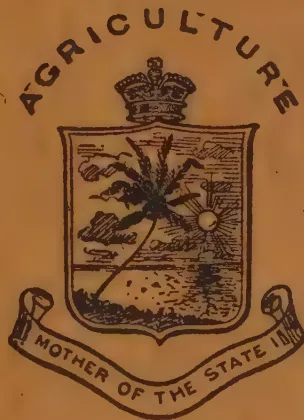
JULY, 1917.
Peradeniya, Ceylon.
PRINTERS & PUBLISHERS
H. W. CAVE & Co.,
COLOMBO.
Founder:—SIR HENRY A. BLAKE, G.C.M.G., F.R.C.I., &C.
Patron:—COL. SIR HENRY A. McCALLUM, G.C.M.G., R.E.
President:
HIS EXCELLENCY SIR JOHN ANDERSON, G.C.M.G., K.C.B., GOVERNOR.
Hon'y. Vice-President:
HIS EXCELLENCY SIR HUGH CLIFFORD, K.C.M.G.
Vice-Presidents:
THE HON'BLE MR. R. E. STUBBS, C.M.G., COLONIAL SECRETARY.
The Hon'ble Sir S. C. OBEYSEKERE
SIR WILLIAM TWYNAM, K.C.M.G.
SIR PONNAMBALAM ARUNACHALAM
Hon'ble Mr. A. S. PAGDEN, C.M.G.
The Hon'ble Mr. BERNARD SENIOR,
C.M.G., I.S.O.
J. A. BALFOUR, Esq.
J. GREGORY SINCLAIR ESQ., J.P., U.P.M.
Organising Vice-President:
F. A. STOCKDALE, Esq., M.A., F.L.S., DIRECTOR OF AGRICULTURE.
Official Members:
The Members of the Executive and Legislative Councils
Government Agents and Assistant Government Agents.
| E. B. Denham, Esq., Director of Education | Asst. Botanist and Mycologist |
| The Conservator of Forests | The Director, Colombo Museum |
| The Government Botanist and Mycologist | The Government Veterinary Surgeon |
| The Government Entomologist | The Supt., Low-Country Products & School Gardens |
| The Government Agricultural Chemist | The Manager of Experiment Station, Peradeniya |
| The Superintendent of Botanic Gardens | The Rubber Research Chemist |
| Curator, Royal Botanic Gardens, Peradeniya |
Unofficial Members:
Western Province.—Sir Solomon Dias Bandaranaike, Kt., C.M.G.; F. Beven, Esq.; A. Bruce, Esq.; Tudor Rajapakse, Esq., Gate Mdlr.; Hon. Dr. H. M. Fernando, M.D., J.P.; W. A. de Silva, Esq., J.P.; F. L. Daniel, Esq., J.P.; James Peiris, Esq., Barrister at Law; J. D. Vanderstraaten, Esq.; A. E. Rajapakse, Esq., Mudaliyar; A. W. Beven, Esq.; Henry A. Perera, Esq., J.P., Atapattu Mudaliyar; J. A. Wirasinghe, Esq., J.P., U.P.M., Gate Mdlr.; C. H. A. Samarakkody, Esq., Mudaliyar
Central Province.—Rev. A. G. Fraser, M.A.; Daniel Joseph, Esq., J.P.; K. Bandara-Beddewela, Esq.; M. B. Alawatugoda, Esq., R.M.; Ronald Senior-White, Esq., Dunuwile Disava, A. B. Thomson, Esq.
Northern Province.—V. Casipillai, Esq.; C. M. Sinnayah Mappana, Esq., Mudaliyar; V. M. Muttukumaru, Esq., Maniagar; S. Chelliah, Esq., Maniagar & President, V.T.
Southern Province.—A. W. Winter, Esq.; J. A. Wickremaratne, Esq., Gate Mudaliyar; Dr. E. Ludovici; Harry Jayawardene, Esq., Mudaliyar; E. V. Gooneratne, Esq., Atapattu Mudaliyar; H. Amerasekere, Esq., Mudaliyar; E. B. Goonetilleke, Esq., Mudaliyar; Rev. Father Paul Cooreman, S.J.
Eastern Province.—E. Brand, Esq.; E. R. Tambimuttu, Esq.; G. H. Canagasabai, Esq., Mudaliyar; T. W. Blyth-Perrett, Esq.
North-Western Province.—L. B. Bogahalande, Esq., R.M.; Henry L. De Mel, Esq.; J. Sheridan Paterson Esq., P. B. Madahapola, Esq., R.M.; Lt.-Col. T. G. Jayewardene; John Tennekoon, Esq., R.M.; P. A. C. Ekneligoda, Esq., Kachcheri Mudaliyar; N. J. Martin, Esq.
North-Central Province.—S. Dias Krisna Ratne, Esq.; Godwin de Livera, Esq., B. Tennekoon, Esq., Kachcheri Mudaliyar; K. B. Panabokke, Esq.; P. B. D. Mahadiuwewa, Esq.
Province of Uva.—Dr. G. St. C. VanRooyen; J. W. Cotton, Esq.; W. R. Bibile, Esq., R.M. D. H. Kotalawala, Esq.
Province of Sabaragamuwa.—Hon'ble Mr. J. H. Meedeniya, Disava; Barnes Ratwatte, Esq., R.M.; D. M. Seneviratne, Esq., Kachcheri Mudaliyar; B. A. Starling, Esq.
Secretary:
MR. C. DRIEBERG B.A., F.H.A.S.
Chief Clerk: MR. J. S. DE SILVA.
| Name. | Station. | Name. | Station. |
|---|---|---|---|
| W. MOLEGODE | Kandy | J. R. NUGAWELA | Katugastota |
| L. A. D. SILVA | Ratnapura | L. D. Z. JAYATILLEKE | Kalutara |
| M. J. A. KARUNANAYAKE | Mataru | V. RAMANATHAN | Jaffna |
| A. MADANAYAKE | Galle | K. CHINNASAMY PILLAI | Batticaloa |
Registered as a
Newspaper in Ceylon
EXAMINED
IMP.
21 SEP 1917
ENo. 2.
VOL. XLIX.
The
(Founded in 1881 by the late MR. JOHN FERGUSON, C.M.G., F.R.A.S., F.R.C.I.)
Journal of the
CEYLON AGRICULTURAL SOCIETY
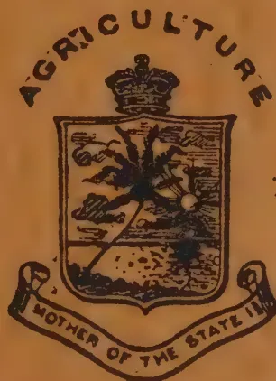
AUGUST, 1917.
Peradeniya, Ceylon.
PRINTERS & PUBLISHERS
H. W. CAVE & Co.,
COLOMBO.
OF THE
1. The Society shall be called "THE AGRICULTURAL SOCIETY OF CEYLON."
2. The business of the General Society shall be conducted through the Board of Agriculture of Ceylon.
3. The Board shall meet for despatch of business once a quarter. Seven members shall form a quorum.
4. Notices of motions or questions shall be sent to the Secretary at least one week before the meeting of the Board.
5. All motions will require to be seconded and will be circulated before the Board meets.
6. A General Meeting of the Society may be called by the President at any time and may be held at any place to be fixed by him.
7. All members of the Board will be nominated by the President.
8. Candidates for membership of the Society should where necessary be proposed by a Member of the Board for the district in which the Candidate resides or owns landed property.
9. Members of the Society resident in Ceylon shall pay a subscription of Rs. 10 per annum; Members resident outside Ceylon Rs. 15 inclusive of postage.
10. Payment of the subscription in advance will entitle a Member to receive the publications of the Society. All subscriptions shall be paid to the Secretary of the Board.
11. Lists of Members will be published.
12. Local Societies may be formed with a Membership of not less than twelve Members.
13. Each Local Society should be represented by a Secretary, through whom correspondence with the Board can be conducted.
14. All Local Societies shall be registered at the Local Kachcheri and by the Secretary of the Board.
15. The Revenue Officers of the Province and District shall be ex-officio Members of the Local Societies within the Province.
16. Local Societies are empowered to make their own rules.
17. All Local Societies will be entitled to receive all publications of the Society on payment of an individual subscription.
18. The funds of the Agricultural Society will be lodged in a Bank in the name of the Agricultural Society of Ceylon. The Secretary will be responsible for the accounts, and all cheques will be signed by him and the President or a Vice-President of the Board of Agriculture.
19. A statement of Expenditure incurred, &c., shall be tabled at each meeting of the Board.
20. All grants-in-aid of Local Societies or special experiments must be approved by the Board.
21. All accounts will be audited annually.
Registered as a
Newspaper in Ceylon.
EXAMINE
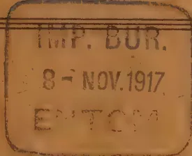
A rectangular stamp with a double border. Inside, the text reads "IMP. BUR." on the first line, "8 - NOV. 1917." on the second line, and "ETC." on the third line.VOL. XLIX.
No. 3.
The
(Founded in 1881 by the late MR. JOHN FERGUSON, C.M.G., F.R.A.S., F.R.C.I.)
Journal of the
CEYLON AGRICULTURAL SOCIETY
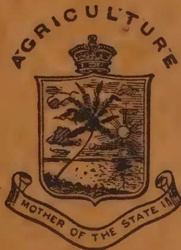
The emblem consists of a shield-shaped crest. Inside the shield is a palm tree growing on a hillside, with a sun and clouds in the background. Above the shield is a crown. The word "AGRICULTURE" is written in an arc above the crown. Below the shield is a ribbon with the text "MOTHER OF THE STATE" written along its curve.SEPTEMBER, 1917.
Peradeniya, Ceylon.
PRINTERS & PUBLISHERS
H. W. CAVE & Co.,
COLOMBO.
Founder:—SIR HENRY A. BLAKE, G.C.M.G., F.R.G.I., &c.
Patron:—COL. SIR HENRY A. MCCALLUM, G.C.M.G., R.E.
President:
HIS EXCELLENCY SIR JOHN ANDERSON, G.C.M.G., K.C.B., GOVERNOR.
Hony. Vice-President:
HIS EXCELLENCY SIR HUGH CLIFFORD, K.C.M.G.
Vice-Presidents:
THE HON'BLE MR. R. E. STUBBS, C.M.G., COLONIAL SECRETARY.
The Hon'ble Sir S. C. OBKEYSEKERE
Sir WILLIAM TWYNAM, K.C.M.G.
Sir PONNAMBALAM ARUNACHALAM
Hon'ble Mr. A. S. PAGDEN, C.M.G.
The Hon'ble Mr. BERNARD SENIOR,
C.M.G., I.S.O.
J. A. BALFOUR, ESQ.
J. GRÆME SINCLAIR ESQ., J.P., U.P.M.
Organising Vice-President:
F. A. STOCKDALE, ESQ., M.A., F.L.S., DIRECTOR OF AGRICULTURE.
Official Members:
The Members of the Executive and Legislative Councils
Government Agents and Assistant Government Agents.
E. B. Denham, Esq., Director of Education
The Conservator of Forests
The Government Botanist and Mycologist
The Government Entomologist
The Government Agricultural Chemist
The Superintendent of Botanic Gardens
Asst. Botanist and Mycologist
The Director, Colombo Museum
The Government Veterinary Surgeon
The Supt., Low-Country Products & School Gardens
The Manager of Experiment Station, Peradeniya
The Rubber Research Chemist
Curator, Royal Botanic Gardens, Peradeniya
Unofficial Members:
Western Province.—Sir Solomon Dias Bandaranaike, Kt., C.M.G.; F. Beven, Esq.; A. Bruce, Esq.; Tudor Rajapakse, Esq., Gate Mdlr.; Hon. Dr. H. M. Fernando, M.D., J.P.; W. A. de Silva, Esq., J.P.; F. L. Daniel, Esq., J.P.; James Peiris, Esq., Barrister at Law; J. D. Vanderstraaten, Esq.; A. E. Rajapakse, Esq., Mudaliyar; A. W. Beven, Esq.; Henry A. Perera, Esq., J.P., Atapattu Mudaliyar; J. A. Wirasinghe, Esq., J.P., U.P.M., Gate Mdlr.; C. H. A. Samarakkody, Esq., Mudaliyar
Central Province.—Rev. A. G. Fraser, M.A.; Daniel Joseph, Esq., J.P.; K. Bandara-Beddewela, Esq.; M. B. Alawatugoda, Esq., R.M.; Ronald Senior-White, Esq., Dunuwile Disava, A. B. Thomson, Esq.
Northern Province.—V. Casipillai, Esq.; C. M. Sinnayah Mappana, Esq., Mudaliyar; V. M. Muttukumaru, Esq., Maniagar; S. Chelliah, Esq., Maniagar & President, V.T.
Southern Province.—A. W. Winter, Esq.; J. A. Wickremaratne, Esq., Gate Mudaliyar; Dr. E. Ludovici; Harry Jayawardene, Esq., Mudaliyar; E. V. Gooneratne, Esq., Atapattu Mudaliyar; H. Amarashekere, Esq., Mudaliyar; E. B. Goonetilleke, Esq., Mudaliyar; Rev. Father Paul Cooreman, S.J.
Eastern Province.—E. Brand, Esq.; E. R. Tambimuttu, Esq.; G. H. Canagasabai, Esq., Mudaliyar; T. W. Blyth-Perrett, Esq.
North-Western Province.—L. B. Bogahalande, Esq., R.M.; Henry L. De Mel, Esq.; J. Sheridan Paterson Esq., P. B. Madahapola, Esq., R.M.; Lt.-Col. T. G. Jayewardene; John Tennekoon, Esq., R.M.; P. A. C. Ekneligoda, Esq., Kachcheri Mudaliyar; N. J. Martin, Esq.
North-Central Province.—S. Dias Krisna Ratne, Esq.; Godwin de Livera, Esq., B. Tennekoon, Esq., Kachcheri Mudaliyar; K. B. Panabokke, Esq.; P. B. D. Mahadiulwewa, Esq.
Province of Uva.—Dr. G. St. C. VanRooyen; J. W. Cotton, Esq.; W. R. Bibile, Esq., R.M. D. H. Kotalawala, Esq.
Province of Sabaragamuwa.—Hon'ble Mr. J. H. Meedeniya, Disava; Barnes Ratwatte, Esq., R.M.; D. M. Seneviratne, Esq., Kachcheri Mudaliyar; B. A. Starling, Esq.
Secretary:
MR. C. DRIEBERG, B.A., F.H.A.S.
Chief Clerk: MR. J. S. DE SILVA.
| Name. | Station. | Name. | Station. |
|---|---|---|---|
| W. MOLEGODE | Kandy | L. D. Z. JAYATILLEKE | Kalutara |
| L. A. D. SILVA | Ratnapura | V. RAMANATHAN | Jaffna |
| M. J. A. KARUNANAYAKE | Matara | K. CHINNASAMY PILLAI | Batticaloa |
| A. MADANAYAKE | Galle | C. W. BIBILE | Bibile |
| J. R. NUGAWELA | Katugastota | P. B. KAPUWATTE | Harasbedde |
Registered as a
Newspaper in Ceylon.
E & A
VOL. XLIX.
No. 4.
The
(Founded in 1881 by the late MR. JOHN FERGUSON, C.M.G., F.R.A.S., F.R.C.I.)
Journal of the
CEYLON AGRICULTURAL SOCIETY
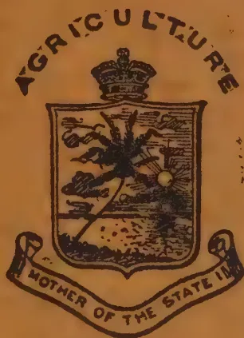
IMP. BUR.
17 DEC 1917
ENTC 86.
OCTOBER, 1917.
Peradeniya, Ceylon.
PRINTERS & PUBLISHERS
H. W. CAVE & Co.,
COLOMBO.
OF THE
1. The Society shall be called "THE AGRICULTURAL SOCIETY OF CEYLON."
2. The business of the General Society shall be conducted through the Board of Agriculture of Ceylon.
3. The Board shall meet for despatch of business once a quarter. Seven members shall form a quorum.
4. Notices of motions or questions shall be sent to the Secretary at least one week before the meeting of the Board.
5. All motions will require to be seconded and will be circulated before the Board meets.
6. A General Meeting of the Society may be called by the President at any time and may be held at any place to be fixed by him.
7. All members of the Board will be nominated by the President.
8. Candidates for membership of the Society should where necessary be proposed by a Member of the Board for the district in which the Candidate resides or owns landed property.
9. Members of the Society resident in Ceylon shall pay a subscription of Rs. 10 per annum; Members resident outside Ceylon Rs. 15 inclusive of postage.
10. Payment of the subscription in advance will entitle a Member to receive the publications of the Society. All subscriptions shall be paid to the Secretary of the Board.
11. Lists of Members will be published.
12. Local Societies may be formed with a Membership of not less than twelve Members.
13. Each Local Society should be represented by a Secretary, through whom correspondence with the Board can be conducted.
14. All Local Societies shall be registered at the Local Kachcheri and by the Secretary of the Board.
15. The Revenue Officers of the Province and District shall be ex-officio Members of the Local Societies within the Province.
16. Local Societies are empowered to make their own rules.
17. All Local Societies will be entitled to receive all publications of the Society on payment of an individual subscription.
18. The funds of the Agricultural Society will be lodged in a Bank in the name of the Agricultural Society of Ceylon. The Secretary will be responsible for the accounts, and all cheques will be signed by him and the President or a Vice-President of the Board of Agriculture.
19. A statement of Expenditure incurred, &c., shall be tabled at each meeting of the Board.
20. All grants-in-aid of Local Societies or special experiments must be approved by the Board.
21. All accounts will be audited annually.
Registered as a
Newspaper in Ceylon.
E & A
VOL. XLIX.
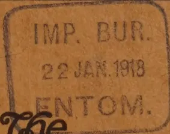
A rectangular stamp with a double-line border. Inside, the text reads "IMP. BUR." on the first line, "22 JAN. 1918" on the second line, and "ENTOM." on the third line.No. 5.
The
Tropical Agriculturist
(Founded in 1881 by the late MR. JOHN FERGUSON, C.M.G., F.R.A.S., F.R.C.I.)
Journal of the
CEYLON AGRICULTURAL SOCIETY
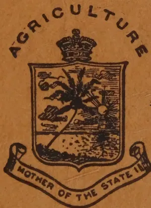
The emblem consists of a shield. Inside the shield is a palm tree on the left, a sun on the right, and a plow at the bottom. Above the shield is a crown. The word "AGRICULTURE" is written in an arc above the crown. Below the shield is a ribbon with the text "MOTHER OF THE STATE" written along its curve.NOVEMBER, 1917.
Peradeniya, Ceylon.
PRINTERS & PUBLISHERS
H. W. CAVE & Co.,
COLOMBO.
Founder:—SIR HENRY A. BLAKE, G.C.M.G., F.R.C.I., &c.
Patron:—COL. SIR HENRY A. MCCALLUM, G.C.M.G., R.E.
President:
HIS EXCELLENCY SIR JOHN ANDERSON, G.C.M.G., K.C.B., GOVERNOR.
Hony. Vice-President:
HIS EXCELLENCY SIR HUGH CLIFFORD, K.C.M.G.
Vice-Presidents:
THE HON'BLE MR. R. E. STUBBS, C.M.G., COLONIAL SECRETARY.
The Hon'ble Sir S. C. OBEYSEKERE
Sir WILLIAM TWYNAM, K.C.M.G.
Sir PONNAMBALAM ARUNACHALAM
Hon'ble Mr. A. S. PAGDEN, C.M.G.
The Hon'ble Mr. BERNARD SENIOR,
C.M.G., I.S.O.
J. A. BALFOUR, Esq.
J. GRÈME SINCLAIR ESQ., J.P., U.P.M.
Organising Vice-President:
F. A. STOCKDALE, ESQ., M.A., F.L.S., DIRECTOR OF AGRICULTURE.
Official Members:
The Members of the Executive and Legislative Councils
Government Agents and Assistant Government Agents.
| E. B. Denham, Esq., Director of Education | Asst. Botanist and Mycologist |
| The Conservator of Forests | The Director, Colombo Museum |
| The Government Botanist and Mycologist | The Government Veterinary Surgeon |
| The Government Entomologist | The Supt., Low-Country Products & School Gardens |
| The Government Agricultural Chemist | The Manager of Experiment Station, Peradeniya |
| The Superintendent of Botanic Gardens | The Rubber Research Chemist |
| Curator, Royal Botanic Gardens, Peradeniya |
Unofficial Members:
Western Province.—Sir Solomon Dias Bandaranaike, Kt., C.M.G.; F. Beven, Esq.; A. Bruce, Esq.; Tudor Rajapakse, Esq., Gate Mdlr.; Hon. Dr. H. M. Fernando, M.D., J.P.; W. A. de Silva, Esq., J.P.; F. L. Daniel, Esq., J.P.; James Peiris, Esq., Barrister at Law; J. D. Vanderstraaten, Esq.; A. E. Rajapakse, Esq., Mudaliyar; A. W. Beven, Esq.; Henry A. Perera, Esq., J.P., Atapattu Mudaliyar; J. A. Wirasinghe, Esq., J.P., U.P.M., Gate Mdlr.; C. H. A. Samarakkody, Esq., Mudaliyar
Central Province.—Rev. A. G. Fraser, M.A.; Daniel Joseph, Esq., J.P.; K. Bandara-Beddewela, Esq.; M. B. Alawatugoda, Esq., R.M.; Ronald Senior-White, Esq., Dunuwile Disava, A. B. Thomson, Esq.
Northern Province.—V. Casipillai, Esq.; C. M. Sinnayah Mappana, Esq., Mudaliyar; V. M. Muttukumaru, Esq., Maniagar; S. Chelliah, Esq., Maniagar & President, v.T.
Southern Province.—A. W. Winter, Esq.; J. A. Wickremaratne, Esq., Gate Mudaliyar; Dr. E. Ludovici; Harry Jayawardene, Esq., Mudaliyar; E. V. Gooneratne, Esq., Atapattu Mudaliyar; H. Amerasekere, Esq., Mudaliyar; E. B. Goonetilleke, Esq., Mudaliyar; Rev. Father Paul Cooreman, S.J.
Eastern Province.—E. Brand, Esq.; E. R. Tambimuttu, Esq.; G. H. Canagasabai, Esq., Mudaliyar; T. W. Blyth-Perrett, Esq.
North-Western Province.—L. B. Bogahalande, Esq., R.M.; Henry L. De Mel, Esq.; J. Sheridan Paterson Esq., P. B. Madahapola, Esq., R.M.; Lt.-Col. T. G. Jayewardene; John Tennekoon, Esq., R.M.; P. A. C. Ekneligoda, Esq., Kachcheri Mudaliyar; N. J. Martin, Esq.
North-Central Province.—S. Dias Krisna Ratne, Esq.; Godwin de Livera, Esq., B. Tennekoon, Esq., Kachcheri Mudaliyar; K. B. Panabokke, Esq.; P. B. D. Mahadiuwewa, Esq.
Province of Uva.—Dr. G. St. C. VanRooyen; J. W. Cotton, Esq.; W. R. Bibile, Esq., R.M. D. H. Kotalawala, Esq.
Province of Sabaragamuwa.—Hon'ble Mr. J. H. Meedeniya, Disava; Barnes Ratwatte, Esq., R.M.; D. M. Seneviratne, Esq., Kachcheri Mudaliyar; B. A. Starling, Esq.
Secretary:
MR. C. DRIEBERG, B.A., F.H.A.S. (Acting Mr. M. KELWAY BAMBER).
Chief Clerk: MR. J. S. DE SILVA.
| Name. | Station. | Name. | Station. |
|---|---|---|---|
| W. MOLEGODE | ... Kandy | L. D. Z. JAYATILLEKE ... | Kalutara |
| L. A. D. SILVA | ... Ratnapura | V. RAMANATHAN ... | Jaffna |
| M. J. A. KARUNANAYAKE | Matara | K. CHINNASAMY PILLAI | Batticaloa |
| A. MADANAYAKE | ... Galle | C. W. BIBILE ... | Bibile |
| J. R. NUGAWELA | ... Katugastota | P. B. KAPUWATTE ... | Harashedde |
| C. P. CRISPEYN ... | Kegalle |
Registered as a
Newspaper in Ceylon.
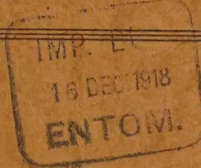
VOL. XLIX.
No. 6.
The
(Founded in 1881 by the late MR. JOHN FERGUSON, C.M.G., F.R.A.S., F.R.C.I.)
Journal of the
CEYLON AGRICULTURAL SOCIETY
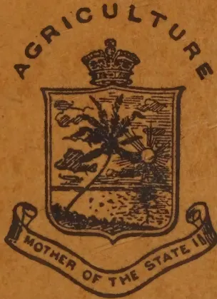
DECEMBER, 1917.
Peradeniya, Ceylon.
PRINTERS & PUBLISHERS
H. W. CAVE & Co.,
COLOMBO.
OF THE
1. The Society shall be called "THE AGRICULTURAL SOCIETY OF CEYLON."
2. The business of the General Society shall be conducted through the Board of Agriculture of Ceylon.
3. The Board shall meet for despatch of business once a quarter. Seven members shall form a quorum.
4. Notices of motions or questions shall be sent to the Secretary at least one week before the meeting of the Board.
5. All motions will require to be seconded and will be circulated before the Board meets.
6. A General Meeting of the Society may be called by the President at any time and may be held at any place to be fixed by him.
7. All members of the Board will be nominated by the President.
8. Candidates for membership of the Society should where necessary be proposed by a Member of the Board for the district in which the Candidate resides or owns landed property.
9. Members of the Society resident in Ceylon shall pay a subscription of Rs. 10 per annum; Members resident outside Ceylon Rs. 15 inclusive of postage.
10. Payment of the subscription in advance will entitle a Member to receive the publications of the Society. All subscriptions shall be paid to the Secretary of the Board.
11. Lists of Members will be published.
12. Local Societies may be formed with a Membership of not less than twelve Members.
13. Each Local Society should be represented by a Secretary, through whom correspondence with the Board can be conducted.
14. All Local Societies shall be registered at the Local Kachcheri and by the Secretary of the Board.
15. The Revenue Officers of the Province and District shall be ex-officio Members of the Local Societies within the Province.
16. Local Societies are empowered to make their own rules.
17. All Local Societies will be entitled to receive all publications of the Society on payment of an individual subscription.
18. The funds of the Agricultural Society will be lodged in a Bank in the name of the Agricultural Society of Ceylon. The Secretary will be responsible for the accounts, and all cheques will be signed by him and the President or a Vice-President of the Board of Agriculture.
19. A statement of Expenditure incurred, &c., shall be tabled at each meeting of the Board.
20. All grants-in-aid of Local Societies or special experiments must be approved by the Board.
21. All accounts will be audited annually.